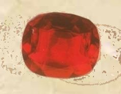
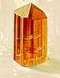
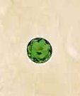
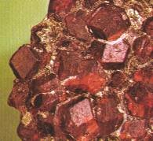
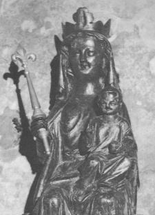
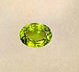
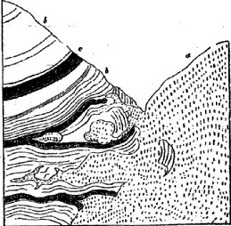
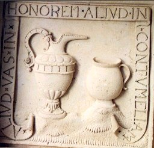
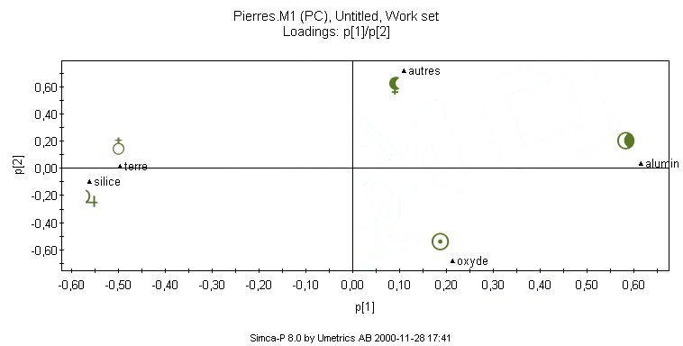
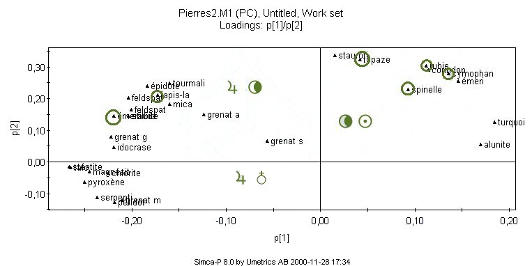

ou
De la nature de la pierre


revu le 15 août 2003
Plan : préambule - 1. l'argent-vif naturel : une hypothèse - 2. théorie du Mercure - 3. le mariage de Gaïa et de Zeus - 4. La Pierre : un miroir épigénique [a. introduction - b. le métamorphisme - c. origine des roches métamorphiques - d. la mutation cristalline du calcaire hypogène - e. la voie humide et les minéralisateurs] 5. L'estoile de Terre - 6. Le poids de nature
Lexique :grenats (grossulaire, almandine, pyrope, mélanite) - pyroxène - étain - quartz- tourmaline - émeraude - fluor - topaze - spinelle - dissolvant - borates - cymophane - dolomie - rubis - étoile - améthyste - orthose - lune - oligoclase - soleil - pegmatite - isomorphisme - idocrase - serpentine - péridot - stéatite - épidote - chaux - gneiss - diorites - trapp - vierge - lupus - potasse - soude - agate - Déluge - kaolin - spath -Carrare - émeri - Déméter - Perséphone - gypse - carbonates - Sénarmont (De) (1) - cornéennes - minéralisateurs (1,2,3,4) - Beaumont (Elie de) - Ebelmen (Jean-Jacques) - Kuhlmann (Frédéric) - Otos - dolomie(2) - Durocher - Bergbüchlein - Levant (pierre du) - Baumé (Antoine de) - talc - magnésie - pyrophyllite - comaris [talc] - protogine - staurotide - amphibole - argyrodamas - argent - antimoine - bismuth - Newton [alliage de] - blanc de fard - magisterium bismuthi - Lémery -
préambuleLes hypothèses et conjectures que nous exposons ici ne pourront être comprises avec toute la lumière désirable et sans quiproquo que par une lecture préalable de notre précis de symbolique alchimique ainsi que des deux parties pratiques [l'arsenal hermétique et le laboratoire légendaire]. Cette précision est formulée à cause des équivalences chimiques, que nous sommes amenés à poser en terme de cabale hermétique, sur la composition des gemmes fines et précieuses. Il est clair qu'un néophyte, lisant de façon « abrupte » ces notes, pourrait à de certains moments émettre des doutes sur l'intégrité de notre raison. Qu'il se rassure donc : les termes employés sont mûrement pesés et découlent d'une application logique de la langue des alchimistes : la cabale hermétique, appelée aussi « langue des oiseaux ». Ce langage « argotique » que Fulcanelli et E. Canseliet maniaient à merveille est exposé et étudié dans un site remarquable, dédié à l'étude de l'ésotérisme dans l'histoire de France.Dans ce travail, nous nous sommes penchés d'abord sur une note sur les Emanations volcaniques d'Elie de Beaumont que nous avons adaptée et complétée. Nous avons mis également à profit plusieurs Notes aux Comptes rendus de l'Académie des sciences en les adaptant à notre sujet et nous avons consulté plusieurs traités de minéralogie [Dufrénoy, Lapparent, Lyell, Daubrée, Des Cloizeaux, etc.] où la question du métamorphisme de contact était plus particulièrement développée, en liaison avec la transformation de la roche calcaire en dolomie.
Dans la section des blasons alchimiques, nous avons émis l'hypothèse que le Mercure des philosophes pourrait se trouver dans la nature. Cette hypothèse est fondée sur le fait que l'on trouve en bordure de roches trappéennes et calcaires des gemmes précieuses ; il a donc fallu qu'il se produise localement des conditions spéciales pour que des cristallisations puissent s'opérer ; dès lors, en se rappelant que les plus grands alchimistes recommandent de se servir de la nature comme guide, il paraissait bien tentant de faire une incursion dans l'étude des roches d'origine plutonique et neptunienne où des conditions de température élevée puis un lent refroidissement ont été réunies. Dans tous les cas, le « produit » si l'on peut dire, obtenu à partir du Mercure, a été une gemme précieuse, c'est-à-dire un aluminate ou un néso-silicate. Ce cristal témoigne de micro-conditions qui se sont développées au sein de roches d'origine plutonienne.
Si nous examinons les roches éruptives, c'est-à-dire celles qui résultent des émanations volcaniques et métallifères, on trouve des roches acidifères, c' est-à-dire celles dans la composition desquelles entrent essentiellement des feldspaths saturés de silice, où les quantités d'oxygène de l'alcali, de l'alumine et de la silice sont comme les nombres 1 : 3 ou 1 : 2, et qui contiennent en outre généralement des grains de quartz disséminés : tels sont les porphyres quartzifères, la diorite [roche plutonique formée de feldspath contenant du calcium et du sodium, de silicates de fer et de magnésium et enfin, de mica], la syénite [feldspath alcalin], la protogine [variété de granite des Alpes], le granite. Des métaux comme le cuivre ou le fer se trouvent dans l' intérieur des roches éruptives ou dans leur voisinage immédiat. On rencontre souvent le cuivre à l'état natif ou sous forme de pyrites dans les serpentines. Les gangues de ces filons sont remarquables par leur nature : on y remarque tantôt la datholite [chaux boratée siliceuse], tantôt l' épidote [silicate hydraté naturel d'aluminium, de calcium et de fer] . L' Oural présente aussi plusieurs gisements de cuivre dans des roches éruptives ou dans leur voisinage immédiat ; telles sont les mines de Turjinsk. Le cuivre natif et les autres minerais s'y trouvent toujours près des lignes de contact de masses nombreuses de diorites, et des calcaires au milieu desquelles les diorites ont pénétré. Ils sont accompagnés en beaucoup de points de grandes masses degrenat qui séparent les diorites des calcaires, et qui, suivant toute apparence, ont été produites par l'action des premiers sur les seconds. [on voit déjà l'intérêt, au plan de la pratique alchimique, de l'attaque de roches calcaires par des silicates ferrugineux et magnésiens]. On observe donc que l'attaque combinée réciproque de silicates et de calcaire joue un rôle de minéralisateur et opère une cristallisation de métaux à l'état d'oxydes.
Cependant, on ne voit que rarement des substances qui jouent, à l'égard des matières pierreuses, le rôle que les minéralisateurs possèdent par rapport aux métaux.
A cet égard, certaines substances pierreuses sont susceptibles d' être volatilisées par la chaleur des volcans, ou entraînées à l'état moléculaire par des courants gazeux. On cite des cristaux de pyroxène qui ont été sublimés sur la surface d' un mur au contact des laves du Vésuve qui ont couvert Torre Del Greco en 1794. On sait aussi que les cristaux de feldspath trouvés dans un fourneau à Sangershausen, en Saxe, avaient cristallisé dans des fissures où leurs éléments devaient avoir été entraînés par les courants gazeux du fourneau. Mais il ne paraît pas que les matières pierreuses aient pu être entraînées de cette manière à une aussigrande distance que les métaux l'ont été par les minéralisateurs. On ne voit guère qu' un pareil entraînement ait pu avoir lieu, si ce n' est par l' entremise de quelque corps tel que le fluor qui rend le silicium et le bore volatils, et qui a pu, comme l'a remarqué depuis longtemps M. Daubrée, exercer une grande influence dans la formation de quelques filons, en jouant, par rapport à certaines matières pierreuses, un rôle analogue à celui que les minéralisateurs jouent par rapport aux métaux. On peut être porté à croire que des substances propres à opérer la volatilisation de substances pierreuses et même de silicates, et à favoriser leur transport moléculaire bien au-delà des limites que la seule action de la chaleur n'aurait pu leur faire franchir, doivent avoir joué un grand rôle dans la production de certains gîtes très remarquables et très connus de substances pierreuses, tels que les filons de l'Oisans, du Mont-Blanc, du Saint-Gothard. Le rôle de l'étain[l'étain est cité régulièrement par Fulcanelli comme étant l'agent par excellence intervenant dans la formation de la pierre ; nous avons toutefois attiré l'attention sur le fait que les alchimistes n'ont jamais cité de façon explicite - exotérique- leurs matières premières et nous avons insisté sur l'étymologie de l'étain qui renvoie au plumbum album]
semble également à privilégier quant à l'action qu'il exerce sur la concentration en silice de certains gisements de granite qui prennent alors un caractère nettement quartzeux. La cause qui a rendu les granites plus riches en silice que les autres roches éruptives semble donc s'être déployée dans les gîtes stannifères avec une prédilection particulière. M. Daubrée, dans son important mémoire sur les amas de minerai d'étain, insiste fortement sur ce fait, que dans tous les gisements de minerai d' étain [amas ou filons], le quartz existe avec une grande abondance. Quand le granite devient stannifère, il perd sa nature ordinaire, son feldspath disparaît, il passe à une roche principalement quartzeuse renfermant peu de mica. Dans tous les amas, les petits filons sont exclusivement composés de quartz, et l'existence du quartz se lie tellement à la présence de l'oxyde d'étain, que quand les roches encaissantes sont imprégnées de ce minerai, elles deviennent, en général, plus quartzeuses, comme on le voit à Geyer et à Altenberg, en Saxe, où l'une des règles pratiques de l'exploitation est que la richesse de la roche imprégnée de particules invisibles d' oxyde d'étain, croît en proportion de sa richesse en quartz.
Chose remarquable, le quartz renfermé dans les granites porte l' empreinte des formes cristallines des minéraux qui l' accompagnent et il témoigne presque ainsi d'un rôle initiateur dans la genèse de certains minéraux en en formant, pour ainsi dire, l'eau mère. Ainsi, toutes les collections minéralogiques contiennent des morceaux de quartz hyalin portant l'empreinte extérieure d' aiguilles de tourmaline, et présentant les traces de leurs moindres stries plus exactement qu' on ne pourrait les prendre avec la cire. Dans d' autres cas, c'est le feldspath, ce sont des grenats ou d'autres silicates dont le quartz a pris le moule. Ces phénomènes paraissaient très simples aux géologues qui admettaient l' origine neptunienne du granite ; ils les rapprochaient de ceux dans lesquels la silice contenue dans des dissolutions a opéré cette multitude de pétrifications de coquilles, de polypiers, de bois, dont toutes les collections abondent et qui font admirer la finesse du travail lapidifique. Mais, depuis que l'origine éruptive et ignée du granite a été démontrée, ces mêmes faits sont devenus autant de difficultés.
Comment, en effet, concevoir qu' un corps aussi réfractaire que la silice ne se soit consolidé qu'après des corps aussi fusibles que la tourmaline, le feldspath, le grenat ? Voila qui nous rapproche singulièrement du travail de l'alchimie, telle que nous la concevons : l'action d'un agent minéralisateur, assurant la cristallisation d'oxydes en de superbes gemmes précieuses. M. Fournet, professeur de minéralogie et de géologie à la faculté des sciences de Lyon, a pensé que la silice pourrait jouir à un très haut degré de la propriété de la surfusion . En effet, on a remarqué que la température de la fusion d'un corps et la température à laquelle il se consolide en se refroidissant ne sont pas nécessairement identiques. La glacefond à 0° ; mais l' eau, lorsqu'elle se refroidit dans des circonstances convenables, peut conserver sa liquidité à plusieurs degrés au-dessous de 0°. Du reste, cette surfusion semble jouer un rôle un peu semblable à celui qui est obtenu dans des expériences de sous-fusion que nous avons analysées dans la section sur le Mercure.
Pourquoi la silice ne jouirait-elle pas d' une propriété du même genre dans un intervalle de température plus grand encore ? Non seulement on ne peut le nier, mais on peut assurer que la silice jouit de cette propriété dans une très large mesure. La silice est, en effet, parmi tous les corps connus, un de ceux où les changements de cohésion qui accompagnent le passage de l'état solide à l'état liquide, et surtout de l'état liquide à l'état solide, embrassent le plus grand intervalle thermométrique. Elle ne fond qu'au chalumeau de gaz oxygène et hydrogène, à une température qui a été évaluée à 1700° centigrades ; mais, lorsqu' elle a été fondue, on peut l'étirer en fils, comme l'a fait M. Gaudin, à une température beaucoup plus basse[nous rejoignons ici les expériences de Marc-Antoine Gaudin sur la synthèse minéralogique du rubis et du saphir ; nous en avons largement parlé dans la section du Soufre ainsi que de ses hypothèses concernant la cristallogénie].
Quoi qu'elle ne fonde qu'à une température double de celle de la fusion du fer, on peut l'étirer en fils à une température inférieure à la chaleur rouge, c'est-à-dire à une température qui surpasse moins la température ordinaire, à laquelle le fer ne s'étire plus en fils qu'assez difficilement, que la température de sa fusion ne surpasse celle de la fusion du fer. L'intervalle thermométrique pendant lequel elle est malléable est donc plus grand pour elle que pour le fer ; mais le fer est presque également malléable à un même degré thermométrique, soit qu'on l'y ait porté à partir d'une température plus basse en le chauffant, ou à partir d' une température plus élevée en le refroidissant. Il y a toutefois une légère différence qu' on observe dans le fil de fer recuit, c'est-à-dire chauffé et refroidi. Pour la silice, la différence est infiniment plus grande.
Le quartz est un corps très réfractaire qui conserve probablement sa rigidité presque
jusqu'au moment où il entre en fusion ; mais, après avoir été fondu, il reste malléable, comme on vient de le voir, jusqu'à une température bien inférieure à son point de fusion. Ce n'est sans doute pas là, la seule et véritable raison de la faculté qu'a possédée le quartz de prendre les empreintes de la tourmaline et d'autres minéraux facilement fusibles. L'observation montre non seulement que le granite ne s'est consolidé qu'à une température assez peu élevée, mais qu il n'a pas même fait éruption à une température aussi élevée, à beaucoup près, que celle qui est nécessaire pour fondre le quartz. S' il avait possédé, au moment de son éruption, une température égale à celle qu'exige la fusion du quartz, il aurait fondu toutes les roches avec lesquelles il se serait trouvé en contact, même les quartzites purs. Or, on observe, au contraire, que le contact du granite n'a fondu que des roches extrêmement fusibles. Pour pouvoir prendre l'empreinte d'une tourmaline ou d'un grenat, le quartz a dû nécessairement être amolli ; mais il n' a pas eu besoin d' être fondu. Il est même certain qu' il a produit ce phénomène sans avoir été fondu ; car on l'observe dans les petites masses de quartz renfermées dans le micaschiste. Or, si le micaschiste est une roche métamorphique, comme on l'admet généralement aujourd' hui, il est certain que les agents quelconques qui l'ont fait passer à l' état métamorphique ne l'ont pas fondue, puisqu' elle a conservé sa stratification originaire, et que, par conséquent, ils n' ont pas fondu le quartz qu'elle renferme.
La silice possède une seconde propriété qu'on met en jeu tous les jours dans les verreries et dans les analyses de minéraux, celle de fondre et de produire un verre, lorsqu'on la chauffe avec des substances qui ont pour elle assez d'affinité pour l'attaquer, à une température bien inférieure à celle de sa propre fusion. Cette silice, séparée par la voie humide, au moyen d'un acide, des substances qui l'ont attaquée, reste, à la température ordinaire, à l'état gélatineux, et la silice gélatineuse ne se durcit qu'à la longue. Elle finit cependant quelquefois par devenir très dure, et, au moyen de l'éther silicique, M. Ebelmen en a obtenu qui avait presque la dureté du quartz. Cette silice qui, pendant longtemps, reste molle à la température ordinaire, présente, en quelque sorte, une seconde espèce de surfusion, et on pourrait admettre que c'est cette surfusion chimique ou gélatineuse qui a été mise en jeu dans la formation des roches granitiques. Cependant, M. Durocher, ingénieur des mines, professeur de minéralogie et de géologie à la faculté des sciences de Rennes, a proposé une autre hypothèse. L'eau mélangée de sels reste liquide à une température bien inférieure à celle de la congélation de l'eau pure et de la solidification des sels anhydres ; les laitiers des hauts-fourneaux coulent à une température bien inférieure à celle à laquelle se solidifieraient les substances qui les composent, fondues isolément. Le granite fondu doit, par la même raison, rester fluide ou mou à une température inférieure à celle à laquelle se solidifieraient le quartz, et, peut-être même, le feldspath et le mica fondus isolément. Cette considération ingénieuse semble, au premier abord, répondre à toutes les exigences de la question ; dans cette hypothèse, le granite aurait dû sa liquidité à ce que le feldspath, le quartz et le mica auraient été en dissolution l'un dans l' autre, et auraient formé une sorte d'alliage fusible. [ce point de température de fusion, abaissée par la présence d'autres corps, c'est tout le mystère du Mercure des vieux alchimistes]
On peut proposer une autre hypothèse, déduite des travaux de M. Rozet : dans ses mémoires sur les montagnes situées entre la Saône et la Loire, Rozet a décrit un grand nombre de masses de quartz de natures et de gisements divers, qui semblent établir une chaîne presque continue entre deux classes de masses minérales d'origine probablement très différentes et en quelque manière opposées, les pegmatites [granites à minéraux de grande taille] et les arkoses [grès feldspathique provenant du remaniement du granite] à ciment quartzeux. C'est ainsi qu'on peut citer, d' après M. Rozet, les pegmatites des environs d'Autun, comprenant une très belle variété du granite graphique, qui se trouvent en filons et en masses transversales dans le gneiss, et qui ont apporté des tourmalines et desémeraudes. Près de Marmagne et de Saint-Symphorien, on trouve des émeraudes en abondance dans les fragments de roches employées à ferrer les routes[nous avons déjà parlé du grès en le comparant à un « Mercure pétré » dans la section des blasons alchimiques].
Le quartz est fréquemment soudé au granite qu'il traverse, et il enveloppe souvent des fragments de granite de différentes grosseurs. A la base des cônes, le quartz pousse dans le granite des ramifications divergentes, comme si celui-ci avait été étoilé pour le recevoir. [voilà le véritable régule étoilé d'antimoine, celui de Jacques Toll et de Fulcanelli, le véritable antimoine saturnin d'Artephius] Ces masses de quartz paraissent donc avoir fait éruption à la manière des porphyres
[il s'agit de roches montrant de grands minéraux sur un fond uniforme ou à grain très fin ; les porphyres ont cristallisé en deux temps ; d'abord les grands cristaux, ensuite le reste formé de microlite et de verre. Au plan alchimique, on peut y voir comme un Mercure imparfait avec une teneur en vitriol de Chypre prédominant]
et des granites, et, quoiqu'on n'y trouve ni feldspath, ni mica, on peut les considérer, de même que les masses de quartz qui font partie des amas stannifères, comme une monstruosité du granite réduit accidentellement à un seul de ses éléments.
[il s'agit donc, à proprement parler, d'un corps disgracié de la nature qui permet l'éclosion cristalline : on comprend intuitivement que, par accident, des micro-conditions soient établies qui permettent à une véritable végétation cristalline de « pousser et croître », tout cela, bien sûr, devant se comprendre dans le sens de l'hypothèse que nous défendons : le but des alchimistes a été de reproduire à l'identique de la nature, des minéraux qui ont mis des millions d'années à se former, tels que les corindons colorés, les spinelles, les nésosilicates, etc.]
Il semble, d'après Elie de Beaumont que la fusibilité qui résulte du mélange d'éléments de natures diverses, ne facilite en rien l'explication du phénomène de cristallisation et qu'on soit ramené à choisir entre l'hypothèse de la surfusion purement ignée et celle de la surfusion gélatineuse. Dans son mémoire sur les amas de minerais d'étain, M. Daubrée fait observer qu'après le quartz, qui prédomine toujours dans les filons stannifères, les petits filons, les veines, et dans la roche encaissante, les satellites les plus constants de l' étain sont les composésfluorés, principalement les fluo-silicates, quelquefois les fluo-phosphates ou des fluorures.
[On connaît le rôle d'agent minéralisateur joué par les fluorures è spath-fluor dans la section sur la réincrudation ; Sainte Claire Deville a mené des expériences en ce sens de même que Edmond Frèmy et Feil]
Ainsi, les micas qui accompagnent les minerais d'étain sont, en général, riches en fluor. La topaze, la picnite, qui renferment encore plus de fluor que ces micas, se rencontrent très fréquemment dans les stockverks d' étain, etc. Il faut encore citer des minéraux qui se trouvent disséminés dans les micaschistes et qui rentrent dans cette classe ; on peut ainsi y inclure le spinelle zincifère des schistes talqueux du fahlun. M. Daubrée pense donc que le fluor a joué un rôle important dans la formation des amas stannifères et qu'il a été dans leur formation un agent tout aussi actif que l' ont été le soufre et les combinaisons sulfurées dans la plupart des autres gîtes métalliques. Le fluorure d' étain, ajoute M. Daubrée, étant une combinaison stable à toutes les températures et très volatile, on peut croire que l' étain est arrivé, des profondeurs qui paraissent être le réservoir des métaux, à l'état de fluorure. Plusieurs des minéraux qui caractérisent les granites les plus cristallins, ces granites singuliers où nous avons conclu que les phénomènes essentiels à la formation des granites se sont développés avec le plus d' intensité, que plusieurs de ces minéraux, tels que la tourmaline et la topaze, sont électriques par la chaleur. Ces minéraux, dont la solidification a précédé celle du quartz, se sont certainement formés à une température élevée. Par conséquent, ils se sont formés électrisés. Dès lors, il est difficile de ne pas admettre que l'électricité a joué un rôle dans leur formation, et il paraît naturel de croire qu'elle en a joué un aussi dans la formation des masses cristallines au milieu desquelles ils ont pris naissance. à moins d'admettre que le quartz ne s'est consolidé qu'après s'être abaissé tout à fait à la température ordinaire, on doit admettre que, lorsque le quartz est venu se mouler sur une tourmaline, celle-ci était électrisée, et il est difficile de ne pas admettre que son électricité ait joué un rôle dans l' agrégation du quartz.
[cela rappelle les travaux de Becquerel sur les propriétés minéralisantes de courants électriques où des cristallisations s'observent sur les électrodes dans un tube en U]
Il est très probable que le gisement originaire du diamant, qui n' est pas encore bien connu, se trouve dans certaines roches granitoïdes très riches en minéraux cristallisés qui sont le gisement originaire de la plupart des pierres précieuses. Tous ces corps, si remarquables par la vigueur de l' action cristalline qui a présidé à leur formation, sont, dans cette forme particulière, au nombre des minéraux qui caractérisent les granites.
Nous donnerons d'abord cet extrait de la Nature de Jean-Baptiste Robinet :
« Les pierres précieuses forment un système complet de couleurs, avec tous les passages connus d'une nuance à l'autre, tous les tons du blanc au noir, auxquels répondent le diamant et le jayet. Les dendrites représentent des plantes, des arbres et des buissons ; des oiseaux, des quadrupèdes, des figures humaines. Les pierres de Boulogne et de Florence méritent encore plus l'attention des curieux ; ils y voyent des villes, des paysages, des rivières, une mer, un ciel, sans que l' imagination y mette rien. [...] La physique qui admet pour la matière de toutes sortes de lapidifications, un suc pierreux tenu en dissolution dans l'eau souterraine qui lui sert de véhicule, varie beaucoup sur la nature de ce suc. On épuise toutes les ressources de l'imagination, et l'on ne dit rien de vraisemblable. Ce suc n'étoit chez les anciens que l' eau chargée de parties terrestres plus ou moins grossieres, qui se pétrifioiten se desséchant. Il est devenu, chez les modernes, une matiere crystalline, une terre vitrifiée, un sable très-fin lamineux, un acide terreux coagulé avec des parties salines et métalliques. Ce suc, quel qu'il soit, déposé dans différens lits de terre, y forme des crystaux et des pierres précieuses, des caillous et des marbres, des grés et des pierres communes : il forme des crystaux lorsqu'il s'y rassemble sans alliage de matiere étrangère ; des caillous, lorsqu'il n'a que peu de ces parties hétérogènes ; des pierres communes, quand la terre grossiere y abonde. Les grés, dans cette hypothese, ne sont qu'un amas de grains de sables, fortement unis au moyen d' une glue terreuse. »
Voila des paroles qui ne peuvent laisser indifférent l'étudiant en art hermétique. Les alchimistes n'ont-ils pas dits que l'on peut voir « le monde » en examinant leur pierre ? les Anciens ne croyaient-ils pas que les métaux et les minéraux naissaient d'exhalaisons souterraines ? N'avons-nous pas écrit dans la section des blasons alchimiques que l'alchimie ressemblait à une astronomie terrestre, rappelant ainsi le traité d'Edward Kelly ? Bien sûr, nous ne pouvons plus adhérer, du moins dans sa forme, au langage de J.B. Robinet quand bien même, dans le fond, il recèle de la vérité. Si nous reprenons les études de synthèse minéralogique de J.J. Ebelmen, nous y trouverons ceci en conclusion de son premier Mémoire sur « Une nouvelle méthode pour obtenir des combinaisons cristallisées par la voie sèche, et sur ses applications à la reproduction des espèces minérales » :
Les faits que je viens de signaler dans ce Mémoire ont montré I'application, à un grand nombre d'exempIes, de la méthode de cristallisation fondée sur l'emploi d'un dissolvant volatil à de hautes températures. Mais le sujet n'est encore qu'effleuré et comporte une longue série de recherches. J'ai l'espoir que cette méthode enrichira la chimie de la voie sèche d'un grand nombre de nouvelles combinaisons. Les expériences déjà exécutées permettent de classer définitivement au nombre des produits chimiques une grande quantité de minéraux, dont plusieurs sont des pierres rares et précieuses. Elles établissent un lien de plus entre deux sciences, la chimie et la minéralogie, dont les points de contact sont déjà si nombreux. Elles ne seront pas inutiles, je l'espère du moins, pour éclairer le géologue dans l'appréciation des causes qui ont présidé à la formation de telle ou telle espèce minérale. En montrant, en effet, que ces espèces complètement infusibles à la température de nos fourneaux, ont pu cristalliser, à la faveur d'un dissolvant à des températures de beaucoup inférieures à celle de leur fusion, on peut rendre raison de leur présence dans beaucoup de roches où elles sont associées à des espèces d'une fusibilité bien différente. Je ne prétends nullement que I'acide borique ou les borates aient été, dans tous les cas, le véhicule naturel qui a servi à opérer la cristallisation de ces espèces ; mais je ne puis m'empècher pourtant du faire remarquer qu'il existe des localités où l'acide borique se dégage du sein de la terre, entraîné par des courants de gaz et de vapeur d'eau portés à de hautes températures.Nous avons déjà eu l'occasion de commenter les conclusions de ce Mémoire dans la section sur le Mercure. Notons, d'ailleurs, que l'alchimie, telle que nous la comprenons se situe en bordure de ces deux sciences cousines, la chimie et la minéralogie. Certes, il n'y est pas fait mention « d'exhalaisons », mais on y décèle une analogie évidente : les dégagements d'acide borique, de gaz et de vapeurs d'eau sont la réplique exacte du «suc, quel qu'il soit » dont parle Robinet dans sa Nature.
Chacun connaît les lagoni de la Toscane qui fournissent annuellement au commerce plus de 500 000 kilogrammes d'acide borique. Ces dégagements d'acide borique sont en liaison évidente avec les phénomènes volcaniques. L'intérieur du cratère du Vulcano a fourni même de l'acide borique cristallisé. Des lacs contenant du borax en dissolution existent sur la terre en un grand nombre de pointe, et tout porte à croire que l'acide borique y a été amené par des causes plus ou moins analogues à celles qui donnent naissance aux suffioni de la Toscane. Il ne faut pas beaucoup de hardiesse d'esprit, assurément, pour comparer ces grands phénomènes naturels à ce qui se passe dans les expériences que j'ai décrites, et pour arriver à admettre que le dégagement continu de l'acide borique, sous l'influence d'un courant de gaz et de vapeur d'eau, est accompagné de la formation, dans l'intérieur de la terre, d'espèces minérales cristallisées que des soulèvements du sol
amèneront peut-être un jour près de la surface. Je n'insisterai pas davantage sur ce point de vue, qui était, du reste, une conséquence toute naturelle des résultats de mon travail.Je terminerai ce Mémoire en examinant sil est permis d'espérer qu'on arriverait à reproduire les pierres fines dont je me suis occupé, comme le spinelle, la cymophane, le corindon, sous un volume assez notable pour qu'on puisse en tirer parti. Je ferai remarquer que toutes mes expériences ont été faites dans le four à porcelaine, appareil dont on élève lentement la température jusqu'au blanc naissant, en arrêtant le feu au moment précis où la température a atteint une certaine limite. L'évaporation de l'acide borique ne peut guère avoir lieu que pendant les cinq à six dernières heures de cuisson ; aussi n'ai-je pu opérer, dans toutes mes expériences, que sur quelques grammes de matières [...]
Dans ce chapitre, nous souhaitons élaborer une sorte de théorie du Mercure, c'est-à-dire analyser toutes les étapes qui débutent des roches à l'état igné pour arriver aux pierres fines que l'on trouve dans les lits des rivières. Plusieurs questions doivent être posées en préambule à ce sujet :Nous avons déjà tenté de répondre à ces questions dans la section sur le Mercure, le Soufre ainsi que celle portant sur les blasons alchimiques ; néanmoins, nos réponses n'ont pas été complètes et nous ont paru insuffisantes au stade de ce travail. L'hypothèse principale, rappelons-le, est la suivante :
- quelle est la nature des roches au sein desquelles des cristallisations de la nature des pierres gemmes a lieu ?
- quelles sont les conditions de température et de pression requises ?
- quelles sont les « briques » dont procèdent ces cristallisations ?
- où trouve-t-on surtout les pierres gemmes ?
- les anciens alchimistes avaient-ils réellement, à l'instar des minéralogistes du XIXe siècle, la possibilité d'élaborer des synthèses minéralogiques ?
l'objet même de l'alchimie est la fabrication artificielle des pierres précieuses, à l'identique de celles qui sont présentes dans la nature.
Bien entendu, il s'agit là de ce que nous pourrions appeler une « hypothèse utopique », en ce sens qu'il est peu probable que les alchimistes aient pu obtenir des rubis ou des saphirs à l'identique de ceux prodigués par la nature ; du moins sommes-nous persuadés que c'était le but vers lequel ils tendaient et que tous les textes - tant classiques que modernes - mettent en avant un composé « dissolvant » qui ne peut, de façon rationnelle, être compatible qu'avec un fondant alcalin.
Il est d'abord clair que les conditions « d'efflorescence » de formes cristallines ne sauraient exister qu'au niveau des grandes masses, qu'on appelle roches. Celles-ci n'ont point été formées, d'ailleurs, en même temps ni de la même manière et c'est bien dans ces différences de constitution que l'on trouvera sans doute des indices qui nous permettront d'étayer nos hypothèses. En effet, ces roches sont tantôt minéralogiquement simples, tantôt composées, c'est-à-dire qu'elles résultent de l'association de plusieurs minéraux, sous forme de cristaux, de lamelles ou de grains entremêlés. Des raisons que nous avons évoquées dans d'autres sections nous poussent à privilégier l'étude des terrains de formation ignés ou éruptifs, c'est-à-dire des roches d'origine plutonique et volcanique. Les matières situées au-dessous de la croûte minérale du globe sont soulevées par des forces souterraines, du genre de celles qui produisent les tremblements de terre et les volcans; ces matières peuvent faire irruption sous forme de masses plus ou moins solides dont les éléments, d'abord confondus, vont se séparer et cristalliser pendant le refroidissement de la masse : c'est ainsi que paraissent avoir été formés les trachytes, les basaltes, les trapps et les porphyres.
Les eaux de certaines sources et de certains lacs abandonnent des molécules qu'elles tiennent en dissolution provoquant ainsi des dépôts cristallins, des concrétions compactes ou terreuses et c'est ainsi par voie de dissolution et de précipitation, qu'ont été formées un certain nombre de masses minérales. Enfin, les petits amas disséminés au sein de grandes masses semblent avoir été produits par les dépôts ou les décompositions qu'opèrent les gaz et les eaux minérales qui sont issues des profondeurs de la terre. Toutefois, ce serait une erreur -qui a existé chez les anciens minéralogistes- de croire que les pierres végètent à la manière des plantes, que les métaux « murissent » au sein de la mine et s'y reproduisent à mesure qu'on les en extrait. Un document existe à cet égard : la génération des métaux ou Bergbüchlein dont nous avons reproduit de larges extraits dans la section sur les textes. C'est essentiellement dans les filons que s'offrent des dilatations ou des cavités, dont les parois sont tapissées de cristaux réunis en druses. Ce sont ces cavités qui portent le nom de fours ou poches à cristaux et c'est là que l'on trouve les cristallisations les plus remarquables par la beauté des formes et la vivacité de l'éclat. Ces cristaux peuvent aussi se présenter en parties isolées, disséminées dans la roche ou en grains dans l'intérieur des grandes masses minérales ; dans ce cas, les cristaux peuvent être obtenus en entier si l'on parvient à les dégager de la roche dans laquelle ils sont comme empâtés, ou si cette roche finit par les laisser libres, en se désagrégeant d'elle-même ; ces cristaux peuvent être aussi implantés sur les parois des filons, de géodes et d'autres cavités souterraines. Dans ce cas, l'une des extrémités des cristaux est comme fichée dans la matière de la roche, et souvent même se confond avec elle, quand elle est de même nature. On ne voit saillir alors que l'autre extrémité et si l'on cherche à détacher ces cristaux, on les brise fatalement et on ne les a jamais qu'avec un seul de leurs sommets.Les minéraux composant ces roches sont composés à plus de 90 % d'un petit nombre de substances minérales, diversement combinées entre elles. Ces minéraux sont bien connus des lecteurs qui ont déjà pris connaissance des sections sur le Mercure, du chapitre du laboratoire légendaire : il s'agit essentiellement d'oxydes tels que la silice, l'alumine, la chaux, la magnésie, le sesquioxyde et le protoxyde de fer, la soude et la potasse. Les minéraux qu'on peut regarder comme les plus essentiels des roches sont le quartz, les feldspaths, les micas et chlorites, le talc et la serpentine, les amphiboles et pyroxènes de couleurs vertes et noires, le calcaire, la dolomie et le gypse. Dans notre étude sur l'alchimie, nous en avons mentionné certains à plusieurs reprises, dont le gypse [sulfate de chaux], l'amphibole, le quartz et le calcaire. Certaines participent à la constitution des roches massives cristallines. La question se pose donc de savoir comment, à partir des éléments ou « briques » qui constituent ces roches, s'élabore une forme cristalline tel qu'un corindon, un rubis, une topaze, etc. Cette question englobera nécessairement celle du Mercure philosophique des alchimistes ; il restera alors à envisager les « possibilités de nature » et de poser une autre question : les alchimistes disposaient-ils de certains agents minéralisateurs capables de provoquer dans des conditions de température données, des cristallisations conduisant à du corindon, du spinelle, etc. ?
Nous allons donc passer en revue dans un premier temps la nature des terrains dans lesquels on trouve les principales gemmes précieuses.¯ L'expérience montre que l'on trouve des corindons colorés [rubis, saphir] associés à des micas et des feldspaths. Les corindons se trouvent essentiellement dans les terrains anciens, associés au mica et au feldspath (Chine, Tibet. Suède, monts Banale, Piémont, Puy-en Velais) ; au Saint-Gothard, il est disséminé dans une dolomie saccharroïde. Près d'Ephèse, on a trouvé de l'émeri également dans des dolomies à Gumuch-Dagh ; le gisement touche de très près à notre sujet : le corindon affecte en effet un double gisement ; il est disséminé en cristaux discernables dans la dolomie et en très petits cristaux dans les roches feldspathiques, où il constitue l'émeri ; ces deux roches sont superposées l'une à l'autre. Le granite pénètre même dans le calcaire et c'est le long des surfaces de jonction de ces deux roches d'origine différente que les corindons se sont formés. Ce corindon semble bien aussi s'être formé postérieurement à le roche ; Dufresnoy tire cette conclusion de la forte proportion de magnésie que l'on a trouvé dans cet émeri. On oserait presque pouvoir dire qu'un hermétiste tirerait cette conclusion évidente que deux parties du Mercure philosophique, le Soufre blanc et la Terre [l'albâtre des Sages de Fulcanelli] aient pu ainsi se réunir et constituer ce minéral. Autrefois, étaient désignés sous le nom de télésie, les corindons hyalins n'atteignant que de faibles dimensions. De telles pierres ont été découvertes dans les alluvions du Puy ; l'examen des fragments qui composent ces terrains, et surtout l'étude des montagnes qui encaissent ces alluvions, montre avec évidence que les cristaux de télésie que l'on y recueille appartiennent aux mêmes roches anciennes qui ont fourni par leur destruction les éléments des terrains modernes [adapté de Dufresnoy].
Nous avons donc montré que d'une part, les corindons pouvaient être formés à l'union, au contact de deux roches, l'une à caractère feldspathique et l'autre à caractère calcaire. Ce n'est pas autrement que nous avons parlé du Mercure philosophique et les belles expériences de P. Berthier et J.J. Ebelmen sont là pour en témoigner. L'action conjuguée de la silice, de l'alumine, de la chaux est conforme au schéma que nous avons donné dans la section du tartre vitriolé dans la marche à suivre, et notamment la préparation du Mercure qui est au centre du 2ème oeuvre.
FIGURE I
(rubis)[Les corindons hyalins sont employés, comme le diamant, pour faire des bijoux précieux ; ils sont, suivant leur couleur, désignés dans le commerce par des noms différents. Le corindon incolore porte le nom de saphir blanc ; à fond blanc laiteux, à reflets mobiles. saphir girasol ou étoilé ; violet, c'est l'améthyste orientale ; bleu indigo, le saphir indigo ; bleu-verdâtre, c'est l'aigue-marine orientale. Quand il est vert, ordinairement teinté de jaune, c'est la fausse émeraude orientale ; jaune d'or, la topaze orientale. Rouge aurore, il s'agit de l'hyacinthe orientale. Enfin, rouge écarlate, cochenille, rouge sang, c'est le fameux rubis oriental.Au sujet de la topaze, abordée dans d'autres sections, il ne nous est pas apparu inutile de voir quelles étaient les condiitons qui avaient pu présider à la genèse de deux pierres congénères : le zircon et la topaze. Voyons ce qu'en dit Sainte-Claire Deville :
Lerubis oriental, dit Babinet,est pour le prix comme pour la beauté la première des pierres de couleur. Pour avoir sa couleur dans sa plus belle qualité, il faut prendre celle du sang qui jaillit de l'artère ou le rayon rouge du spectre solaire dans le milieu de l'espace qu'il occupe. C'est encore la couleur rouge de la palette du peintre sans aucun mélange de violet d'une part, et d'orangé de l'autre. Plusieurs des vitraux rouges de nos anciennes basiliques traversés par les rayons du jour, nous donnent cette couleur éclatante. Le rubis est excessivement dur, et après le saphir, qui le surpasse un peu sous ce rapport, c'est la première des pierres, toujours en exceptant le diamant, à qui rien ne peut être comparé. D'après une remarque parfaitement juste de M. Ch. Achard, plus compétent que
personne en France en ce qui touche le commerce des pierres de couleur, il n'en est pas de même pour ces pierres que pour le diamant, qui depuis le plus petit échantillon jusqu'aux diamants princiers ou souverains, a, comme l'or et l'argent, un prix en proportion avec son poids. Pour le rubis et les autres gemmes, les petits échantillons n'ont presque aucune valeur, et ces pierres ne commencent à être appréciées qu'au moment où leur poids les tire d'un pêle-mêle vulgaire et leur assure à la fois la rareté et un haut prix. Ainsi, pour que les pivots des montres de précision tournent avec facilité, on les implante dans de petits rubis percés convenablement. Ces petites pierres de la grosseur d'un grain de millet, pour être fort utiles, n'en sont pas pour cela plus appréciées, à cause de leur grande abondance ; mais qu'un rubis parfait de 5 carats (environ 1 g., poids d'une pièce de 20 centimes au XIXe siècle) circule dans le commerce, on en offrira un prix double d'un diamant de même poids: si ce rubis atteignait au poids de 10 carats, on pourrait en demander le triple d'un diamant parfait de poids pareil, lequet serait cependant de 20 à 25.000 francs. J'ai vu plusieurs belles collections d'amateurs, visité et consulté plusieurs lapidaires : tout le monde admet qu'un rubis parfait est la plus rare de toutes les productions de la nature.» (Babinet. Des Pierres précieuses.) Quelques cristaux sont dichroïtes : Dufresnoy a eu l'occasion d'en étudier un fort beau appartenant à M. le marquis de Die, qui, bleu dans toute direction quand on le regardait par réflexion, présentait une couleur bleue ou verte, suivant qu'on l'observait par réfraction, dans un sens ou dans un autre. Certains corindons présentent un phénomène de lumière remarquable lorsqu'ils sont taillés perpendiculairement à l'axe, et surtout lorsqu'ils sont en cabochon , c'est-à-dire selon une surface arrondie : on y observe, soit par réflexion , soit par réfraction, lorsqu'on les place entres l'oeil et une vive lumière, une étoile blanchâtre à six rayons, qui change

FIGURE II
(astérisme sur un saphir)de place en faisant mouvoir la plaque taillée. Ce phénomène est en rapport avec la forme des cristaux, et, pour le corindon , chacun des rayons correspond aux traces de l'intersection des clivages du rhomboèdre, trois rayons au sommet supérieur, et les trois autres au sommet inférieur. Une observation qui établit cette correspondance, c'est que quelques corindons ne présentent qu'une partie du phénomène : ce sont des cristaux naturels à sommets rhomboédriques dont les arêtes culminantes ne sont pas arrondies ; chacune de ces arêtes offre alors une ligne brillante d'un éclat fort analogue à l'éclat des rayons des astéries. Lorsque ces cristaux sont taillés en boule, on voit les rayons d'un sommet se prolonger jusqu'à l'autre sommet ; de sorte que les lignes lumineuses dessinent des côtes sur la partie de la boule qui correspond à un prisme hexaèdre placé
entre ces deux sommets. Les astéries ne se laissent bien apercevoir que sur les variétés de corindon dont la transparence est un peu troublée. Elles sont plus fréquentes dans les saphirs que dans les rubis. Cette variété particulière de corindon était déjà connue des Anciens ; Pline l'a spécialement décrite sous le nom d'astérie.

FIGURE III
(caisson n°6, 4ème série, Dampierre-sur-Boutonne : l'astérie hermétique)Le corindon hyalin incolore est appelé saphir blanc ; lorsqu'il est coloré en bleu, on le désigne sous le nom de saphir oriental. Le saphir blanc ressemble au diamant, mais il est facile de l'en distinguer par le poids spécifique et par la double réfraction qu'il possède.
Le saphir bleu doit probablement sa couleur à de l'oxyde de chrome ; mais on ne pourrait cependant pas l'affirmer : en effet, la proportion des matières étrangères qui colorent si diversement le corindon est tellement petite qu'il est fort difficile de l'apprécier et d'en reconnaitre la nature dans les analyses chimiques.
Le saphir violet ou améthyste orientale est d'un violet pur et éclatant, qui le distingue de l'améthyste ordinaire, dont la couleur est un peu terne. Dans certains saphirs, surtout ceux qui sont d'une couleur pâle, on découvre, à l'aide du microscope, des traits dirigés dans le sens des faces du prisme hexagonal. La lumière en se reflétant sur les filaments intérieurs, qui ont trois directions différentes, produit trois petites trainées brillantes
transversalement à ces filaments et aux faces du prisme. L'entre-croisement de ces trainées lumineuses forme une étoile à six rayons, qui vaut à la pierre le nom de saphir astérie. Ces saphirs sont fort estimés par les Orientaux, surtout lorsqu'ils présentent une teinte bleue. Le saphir girasol lance des reflets d'une teinte rouge et bleue, semblable à ceux du quartz girasol.
FIGURE IV
(topaze)La topaze est le corindon coloré en beau jaune d'or par une minime quantité d'oxyde de fer. Cette pierre est maintenant rare, et lorsqu' elle possède une couleur franche et satinée, elle acquiert un prix considérable. On connaît aussi des topazes possédant le couleurs abricot, jonquille ou citron.
Quant à l'émeraude orientale, c'est un saphir vert qui est extrêmement rare et qu'il ne faut pas confondre avec la pierre qu'on nomme émeraude et qui n'est plus du corindon mais du béryl
Enfin, le corindon émeri ou corindon granulaire est une variété toujours impure, formée de petits cristaux disséminés dans la roche ; le plus estimé est celui qui provient de l'île de Naxos. Il est présent dans des roches anciennes et toujours mélangé de mica ; à Naxos, il est mélangé à du fer oxydulé, circonstance qui a conduit à indiquer quelquefois comme caractère de l'émeri d'être attirable par l'aimant. Une autre variété d'émeri, en Saxe, est disséminé dans une couche de stéatite endurcie, d'un gris jaunâtre, quelquefois d'un vert pomme, mélangé de talc commun]Du mode de formation de la topaze et du zircon; par M. H. SAINTE-CLAIRE DEVILLE.Nous avons déjà évoqué ces travaux de Sainte-Claire Deville dans la section sur le Mercure et dans la section sur la réincrudation. Ils montrent de façon magistrale comment une substance - que l'on peut rapporter sans problème au principe Mercure - peut, en restant absolument volatile, en transformer d'autres, en les fixant en certaines formes cristalllines. Il est curieux que les historiens de l'alchimie n'aient jamais noté ces analogies que l'on rencontre entre des procédés physico-chimiques étonnants mais naturels et les allégories dont parlent les traités alchimiques. Eh certes, il ne s'agit pas de croire que les alchimistes aient opéré de telles manipulations, mais, en se plaçant en « niveaux d'époques » différents, on peut fort bien arriver à comprendre que certains alchimistes, parmi les plus pragmatiques, avaient pu essayer de transcrire en phrases ce qu'ils avaient observés et qu'ils ne pouvaient y arriver qu'au moyen de l'allégorie, sans chercher toujours à vouloir leurrer le lecteur. Mais poursuivons..." On a pu quelquefois, à la suite d'expériences tentées dans nos laboratoires, préjuger le mode de formation de certaines espèces minérales que l'on rencontre dans la nature; mais nos conclusions ne deviennent vraiment rigoureuses qu'à la condition de montrer les circonstances physiques et chimiques au milieu desquelles on s'est placé, non-seulement comme suffisantes pour expliquer la formation des minéraux, mais encore comme nécessaires à leur production. Ou n'est pas toujours assez heureux pour obtenir ce degré de certitude, mais il existe des cas où l'on approche tellement de la rigueur, qu'on peu avoir tout espoir d'être arrivé à la vérité. C'est ce qui arrive, par exemple, pour la topaze et le zircon. Quand on fait passer du fluorure de silicium sur de l'alumine calcinée, placée dans un tube de porcelaine (II est bon d'introduire dans ce tube de porcelaine un autre tube en charbon de cornues, et de mettre l'alumine dans des nacelles également en charbon) et chauffée au rouge blanc, on la convertit entièrement en staurotide (Cette staurotide, obtenue par M. Caron et moi ; cf. section réincrudation); il se dégage du fluorure d'aluminium, que l'on peut recueillir, et qui est identique avec celui que j'ai prépare quand j'ai obtenu le silicium cristallisé (diamant de silicium) (Annales de Chimie et de Physique, t. XLIX, mes Mémoires sur le silicium et les sesquifluorures métalliques). Cette staurotide, qui est un prisme rhomboïdal droit, a des analogies de forme et de propriétés optiques avec la staurotide naturelle. Une quantité très petite de fluor suffit [...] pour transformer en staurotide ou minéraliser des quantités indéfinies de silice et d'alumine. II semble tout d'abord que cette singulière substance aurait pu se former par l'action du fluorure de silicium sur l'alumine dans les circonstances que je viens de détailler : il n'en est rien, et jamais je n'ai obtenu dans mes expériences rien qui ressemblât à la topaze. Bien mieux, en mettant de la topaze du Brésil dans le courant de fluorure de silicium à côté de l'alumine, qui se transforme en staurotide, cette topaze a été entièrement décomposée en perdant 22 pour 100 de son poids. Cette expérience démontre de la manière la plus nette que la topaze ne peut être reproduite dans nos laboratoires, et n'a pu être formée dans la nature par le contact de l'alumine et du fluorure de silicium à haute température. La topaze a dû être formée par voie humide ; ce qui le prouve, ce sont les observations du Dr. Brewster [cf. section Atlas des Connaissances humaines, Chevreul] sur les liquides qu'elle renferme, ce sont les résultats de mes propres analyses (Sur la composition des substances volatiles des silicates naturels - Leçons lithographiées d'analyse minéralogique professées à l'Ecole Normale -) où j'ai dosé une matière volatile que j'ai considérée comme pouvant être de l'eau, qui serait, d'après M. Lewy, une matière organique, et d'après M. Delesse, une matière organique azotée. Mais à ces arguments péremptoires vient se joindre une observation à laquelle j'attache quelque importance. J'ai trouvé du vanadium dans un grand nombre de matières alumineuses hydratées, la gibbsite des Baux en particulier; j'en trouve également dans des topazes qui, je crois, viennent du Brésil; et ce caractère commun à un assez grand nombre de substances qui se décomposent ou se transforment par l'action du feu me paraît être un indice de l'intervention de l'eau dans la formation des minéraux qui ont conservé du vanadium. Si je pouvais ici hasarder une hypothèse, je dirais que c'est sans doute de ces acides hydro-fluo-aluminiques que j'ai décrits dans un récent Mémoire, qu'on fera dériver le plus facilement la topaze. La chondrodite ou la humite et même les silicates de chaux et de magnésie ne peuvent non plus se former sous l'influence du fluorure de silicium ; car la magnésie ou la chaux, quand on les chauffe dans ce gaz, se transforment en matières vitreuses ou cristallines dont la composition n'a aucun rapport avec les minéraux des filons et des terrains métamorphiques. [...] Ainsi le fluorure de silicium, par voie sèche, ne donne aucun minéral de filon connu, du moins jusqu'ici; mais il n'en est pas de même d'une matière qu'on rencontre dans les terrains volcaniques, le zircon, et qui se produit avec les formes les plus belles lorsqu'on fait passer du fluorure de silicium sur la zircone. Les cristaux octaédriques qu'on obtient ainsi, et que j'ai mesurés, présentent l'analogie la plus complète avec les zircons de la Somma (Vésuve). Les mêmes facettes, les mêmes angles (l'octaèdre carré seulement avec des incidences de 123°20'), les mêmes apparences extérieures les confondent, et aussi la certitude presque entière que leur formation a eu lieu sous l'influence du feu. Et ici encore je peux démontrer avec la plus complète rigueur que de petites quantités de fluor, dont la présence existe dans les terrains métamorphiques de cette espèce, ont suffi pour produire des quantités indéfinies de zircon. Si, en effet, on place dans un tube de porcelaine des couches alternatives de zircone et de quartz, en commençant par la zircone et finissant par le quartz, la zircone se transforme, au contact du fluorure de silicium, en zircon et fluorure de zirconium volatil : celui-ci, rencontrant le quartz, en fait du zircon et du fluorure de silicium, etc. Finalement, la minéralisïition s'est faite dans tout le tube de porcelaine, et il en est sorti précisément autant de fluorure de silicium qu'il en est entré. Le fluor en -effet ne s'est fixé nulle part. [...]
Les feldspaths sont des silicates doubles formés par la combinaison d'un silicate d'alumine avec un silicate de potasse, de soude, de lithine ou de chaux. Les feldspaths sont généralement cristallins et le rapport de l'alumine aux alcalis est comme 3 : 1, proportion notée lors des expériences de Pierre Berthier dans son traité des Essais par la voie sèche. C'est surtout le feldspath potassique qui retiendra notre attention ; dans nos sections sur le Mercure et l'Arcanum duplicatum, on a montré que l'un des constituants du Mercure était nécessairement un sel de potassium. Nous allons passer en revue les types de feldspath qui -de nature- peuvent être utilisées comme pierres gemmes.
è Le silicate d'alumine et de potasse s'appelle l'orthose [de orqoV = droit, à cause de ses clivages à angle droit]. Il est composé de 64.8 parties de silice, de 18.4 parties d'alumine et de 16.8 parties de potasse. Sa couleur est le blanc de lait, le blanc grisâtre, le blanc rougeâtre, et quelquefois rouge chair. Il peut présenter des teintes claires et on signale une variété, la pierre des amazones, qui est d'un beau vert. L'orthose se trouve à l'état lamellaire ou grenu ; cette variété forme des veines et des filons dans les roches de granite et de porphyre. Le feldspath lamelleux présente, dans certains cas, des reflets nacrés ou chatoyants, telle est la pierre de lune, à reflets blanchâtres avec une légère teinte bleuâtre ou verdâtre partant d'un fond demi-transparent et un peu laiteux. A l'état terreux, le feldspath, en se décomposant, donne naissance à une argile particulière, appelée kaolin ou terre à porcelaine sur laquelle nous avons eu l'occasion de nous pencher à plusieurs reprises [il s'agit d'alumine pure que l'on désignait chez les Anciens comme la terre de Chio ou la terre de Samos]. L'orthose limpide du mont Saint-Gothard peut recevoir un aussi beau poli que le quartz, et on le taille quelquefois en brillants. La pierre de lune se taille en cabochon ou en goutte de suif, pour faciliter le jeu de ses reflets ; on la monte entourée de idamants. La pierre de amazones est un feldspath d'un vert bien prononcé ; la plus estimée est celle dont la couleur se rapproche de la couleur du vert-de-gris ; elle est susceptible d'un beau poli. On en fait des bijoux estimés.
è Une autre variété de feldspath se nomme oligoclase : elle est composée de 63.7 parties de silice, 24 parties d'alumine, 2.55 parties de chaux, 8 parties de soude et 1.2 parties de potasse. Sa couleur est le gris clair, gris laiteux, quelquefois le gris verdâtre. La pierre du Soleilou feldspath aventuriné est une variété d'oligoclase ; elle est à fond grisâtre parsemé de points brillants et jaunâtres ou rouges, ou bien d'un vert tendre avec des points blancs, ou jaunâtre parsemé d'une infinité de points d'un jaune d'or. Ce jeu de couleur est le résultat de la réflexion de la lumière sur les parois de fissures étroites ouvertes dans la masse de la pierre et en partie tapissées de lamelles hexagonales de fer oligiste ou de paillettes de mica.

FIGURE V
(représentation du soufre et du mercure, avec le soleil et la lune, in Elementa Chemiae de J.C. Barchusen, Leyde, 1718)Pierre de Lune et de soleil...on a donné inconsciemment à ces deux roches des épithètes qu'un alchimiste ne désavouerait point...Il ne s'agit pas de pierres précieuses à proprement parler et, même, à peine de « pierres fines ». Elles représentent pourtant une liaison entre deux principes entrant dans la pratique du 3ème oeuvre, lors de la Grande Coction ; en employant le langage classique de la cabale hermétique, nous pourrions dire ceci : le lecteur qui a parcouru la section sur le tartre vitriolé sait que l'on trouve dans la pierre de lune le Soufre blanc mêlé à une partie de Mercure philosophique [il s'agit du sel dit « de vertu céleste » ou rosée de mai qui résulte d'une action réciproque de Mars et de Vénus] grâce au lien du Mercure [figuré par Zeus] ; voila pour l'orthose. Quant à l'oligoclase, sa formation résulte d'une adjonction supplémentaire d'un principe que les alchimistes ont voilé sous l'hiéroglyphe céleste de la Terre, symbole de la stibine : c'est l'albâtre des Sages de Fulcanelli, le véritable stibium de Tollius.
Parmi les roches feldspathiques, se signalent les granites. La composition des granites n'est pas toujours la même et parmi les variétés qui se distinguent par leur capacité à héberger des gemmes précieuses, nous trouvons la syénite [granite dans lequel le mica est remplacé par de l'amphibole, et quelquefois des zircons ; son nom vient de la ville de Syène, en Egypte] et la pegmatite[quartz et feldspath : ces deux minéraux -qui par l'ajout du mica donnent le granite- donnent naissance à plusieurs variétés. Le quartz s'y présente en cristaux allongés et comme fichés dans la matière feldspathique : on la nomme alors pegmatite graphique, parce qu'elle semble être couverte de caractères graphiques èla pegmatite fournit les minéralisateurs].
¯ L'émeraude se trouve ordinairement en cristaux disséminés ou implantés dans les roches granitiques ou schisteuses, principalement au milieu des pegmatites, des micaschistes et des schistes argileux. Il faut distinguer l'émeraude [béryl] des corindons verts : vert de mer [aigue-marine], jaune verdâtre vif [chrysolite]. Quand elle possède

FIGURE VI
(émeraude)une belle teinte verte et qu'elle est entièrement hyaline [transparent, diaphane], elle constitue l'une des pierres les plus rares et les plus précieuses. On trouve souvent les émeraudes ornant les reliquaires ou les trésors des anciennes églises ; une des plus célèbres, au Moyen Âge, était celle qui ornait le sommet de la tiare du pape.
[L'émeraude est très estimée en joaillerie ; suivant sa couleur, elle porte des noms différents. Lorsqu'elle est vert d'herbe, vert émeraude, elle se nomme émeraude, vert de mer, c'est l'aigue-marine ; vert pomme, vert mêlé de jaune ou bleu pâle, violacée, rougeâtre : c'est le béryl ; enfin, jaune verdâtre très vif, c'est la chrysolite. Rappelons que seul le béryl est la véritable émeraude ; les autres appellations sont frauduleuses.Quand elle possède une belle teinte verte et qu'elle est entièrement hyaline, elle constitue l'une des pierres les plus rares et les plus précieuses ; à l'état de cristaux à demi-transparents et d'un vert d'eau, elle est au contraire assez commune. Cette coloration verte, si remarquable et qui lui donne une si grande valeur, est due à une certaine quantité d'oxyde de chrome, et non comme Loevy l'avait cru d'abord, à un hydrogène carboné. Elle se trouve en Égypte, à 7 ou 8 lieues de la mer Rouge, où on voit encore des traces d'exploitation ancienne ; dans l'Oural, sur le fleuve occidental, où la mine de Takowaja est une des plus fécondes ; dans le Salzbourg, en Autriche ; en France, aux environs de Nantes, mais en échantillons petits, rares et de peu de valeur; en Australie, en Amérique, dans des filons calcaires traversant des schistes argileux, amphiboliques ; une des mines les plus célèbres est celle de Musa, à 30 milles N. N. 0. de Bogota. Les cristaux d'émeraude verts sont très fragiles au sortir de la mine, lorsqu'ils sont encore imprégnés de leur eau de carrière ; mais ils acquièrent de la consistance par une dessiccation lente.Nous allons à présent nous intéresser aux grenats. Les minéraux réunis sous le nom de grenats présentent, en effet, une des plus beaux prototypes de la Pierre, envisagée sous l'angle de la théorie mercurielle ; plus précisément, la variété de couleur des grenats, la grande différence de pesanteur spécifique qui existe entre leurs variétés -en rapport, notons-le, avec leurs couleurs- conduit à introduire le concept d'isomorphisme des éléments qui les constituent. Ainsi, l'alumine peut être remplacée par du peroxyde de fer dans le grenat mélanite ; la magnésie ou le protoxyde de manganèse peut se substituer à la chaux ; dans le grenat ouwarovite [du nom du ministre russe Ouwarol], c'est l'oxyde de chrome qui peut remplacer l'alumine. Retenons donc les bases isomorphes suivantes :
Le béryl est plus abondant ; on le trouve en Sibérie, sur les frontières chinoises ; en France, il forme de gros prismes, volumineux, mais opaques, aux environs de Limoges. Les plus beaux cristaux viennent d'Ava, dans le royaume des Birmans, aux Indes orientales. L'émeraude est connue depuis la plus haute antiquité ; Strabon raconte que les Indous promenaient, dans les pompes solennelles, des vases à boire, des coupes enrichis d'émeraudes, de béryls, etc. Les plus belles émeraudes, au dire de Pline, sont celles qu'il appelle scythiques et qui provenaient probablement de Sibérie ; en outre, chose assez remarquable, il rapproche de cette pierre précieuse, le béryl qui, ajoute-t-il, est de même nature que l'émeraude. Néron regardait les jeux du cirque au travers d'une émeraude qui lui servait de lorgnon.]alumine ßà oxyde de fer et chaux ßà protoxyde de manganèse ou de fer.

FIGURE VII
(grenat)à Le grenat grossulaire se trouve souvent engagé, avec l'idocrase, en cristaux dans une gangue serpentineuse ou dans des schistes chloriteux. Sa composition est à peu près la suivante : silice = 40 parties - chaux = 35 parties - alumine = 20 parties - peroxyde de fer = 3 parties, etc.
L'idocrase est un silicate double d'alumine et de chaux dans lequel l'isomorphisme se distingue par le remplacement des bases que nous venons d'évoquer. C'est une substance qui présente des variétés de couleurs analogues à celles du grenat -et que pour cette raison nous considérons comme congénère du grenat- mais la couleur la plus habituelle est le vert de diverses nuances. Ses principaux gisements consistent en des roches talqueuses et calcaires que l'on trouve à la fois dans le Piémont et à Naples. La cyprine est une variété d'idocrase d'un beau bleu céleste, ainsi que la vésuvienne qui est d'un brun rougeâtre. Ces deux variétés sont taillées à Naples et à Turin sous le nom de gemmes du Vésuve mais leur prix est peu élevé.
à Le grenat almandine [grenat oriental ; grenat syrien ; escarboucle] offre à la lumière une astérie à quatre branches normales dans le sens des stries. C'est le plus abondant de tous les grenats. il se présente en cristaux disséminés dans tous les terrains de cristallisation et surtout dans les gneiss, les micaschistes, les schistes argileux et chloriteux. Si on devait comparer les pierres précieuses aux étoiles, on pourrait comparer cette variété de grenat à notre soleil [étoile moyenne de 6ème grandeur] en réservant aux étoiles bleues et aux étoiles les plus brillantes les variétés rares : Sirius, Canopus, Arcturus et Véga par exemple.
à Le grenat pyrope. Le pyrope ou grenat alumino-magnésien, qui doit son nom à son éclat, analogue à celui du feu, est le grenat de Bohême, contenant de la magnésie. De couleur rouge sang ou rouge hyacinthe, il est de tous les grenats le plus difficilement fusible. La calcination le rend noir et opaque ; mais en se refroidissant il redevient rouge et transparent. Il est généralement assez chromifère. On y a trouvé de l'oxydule dechrome. Le pyrope n' est attaquable qu'après fusion et seulementen partie. On le trouve en grains à cassure conchoïdale dans laserpentine. Il est utilisé pour la joaillerie et aussi comme émeri ; on le trouve dans des blocs d'un conglomérat calcaire en Bohême, avec du zircon, de la topaze, du corindonet et de la tourmaline.
à Le grenat mélanite se rencontre dans des schistes chloriteux où ils tapissent des géodes en cristaux jaunes ou verts de diverses nuances. Les chlorites désignent un certain nombre de substances vertes, facilement clivables, douces au toucher, plus ou moins feuilletées. Ces minéraux sont presque exclusivement composés de silice, d'alumine, de magnésie, de protoxyde de fer et d'eau. Brongniart [directeur de la manufacture de Sèvres] a désigné sous le nom de glauconie des points verts ou vert bleuâtre et les nids terreux de même couleur qui caractérisent certains grès ou calcaires, au milieu desquels ils sont abondamment disséminés : avec un peu d'imagination, on pourrait y voir des pépinières de grenats mais l'exigence scientifique nous porte à révoquer en doute cet excès de spéculation, quand bien même il pourrait s'agir d'une indication utile pour les étudiants en cabale hermétique. On signalera cependant que des réactions singulières -sorte d'alchimie naturelle consisitant en une pseudomorphose- que les grenats les plus riches en oxyde ferreux éprouvent quelquefois des altérations par suite de la peroxydation du fer[et nous avons vu dans d'autres sections que les degrés d'oxydation du fer semblaient jouer un rôle important dans la genèse de la Pierre lors de la Grande coction ; il est possible aussi que le dragon rouge des alchimistes soit du sesquioxyde de fer],
provoquant de véritables pseudomorphoses en stéatite ou en serpentine. A ce sujet, la serpentine comprend tous les silicates hydratés de magnésie, depuis ceux qui ont des formes cristallines définissables jusqu'aux masses amorphes, qui ne prennent de facettes que quand elles se substituent par pseudomorphose à d'autres cristaux. On a cru pendant longtemps que tous les minéraux connus sous le nom de serpentine étaient des produits d'altération, ayant pris naissance, le plus souvent, aux dépens du péridot olivine, mais à la genèse desquels l'enstatite, le pyroxène et l'amphibole auraient aussi contribué. Ainsi se seraient formées des masses verdâtres, vert bleuâtre ou brun jaunâtre, parfois incolores et translucides, à structure tantôt schisteuse et feuilletée, tantôt fibreuse, tantôt amorphe, à cassure conchoïdale, esquilleuse ou inégale, n'offrant d' autres formes cristallines que celles des minéraux aux dépens desquels la pseudomorphose s'était opérée. Ce qu'on appelle proprement la serpentine compacte est une roche plutôt qu'un minéral à cassure conchoïdale ou esquilleuse ; elle est parfois translucide : c'est la serpentine noble. Sa couleur est le vert de diverses nuances, plus rarement le jaune vif ; le plus souvent, les oxydes de fer lui impriment une marbrure de rouge ou de noir. Toujours elle est le résultat d'une pseudomorphose, généralement opérée aux dépens des péridotites. Mais, selon M. Lacroix, l'élément essentiel, souvent même exclusif, de ces roches, est l'antigorite. D'éclat faible, résineux ou gras, la substance a un trait brillant, une poussière blanche et se laisse parfois couper au couteau. Elle blanchit et fond difficilement au chalumeau. La saponite ou pierre de savon de la serpentine de Cornouailles [qu' il ne faut pas confondre avec la saponite de Plombières] se rattache à ce groupe. La chrysotile, de même composition que l'antigorite, est, dans sa forme typique, en fibres soyeuses, dont il est possible d'extraire des fils aussi flexibles que ceux de l'amiante. Généralement jaune d'or ou verdâtre. Les serpentines colloïdes sont souvent imprégnées d' opale [siliciophite , produit d'altération du péridot]. Le mélange de veines calcaires avec la serpentine commune constitue le marbre vert antique . Le fer chromé, qui pénètre souvent la serpentine, lui donne quelquefois l' apparence d' une peau de serpent [d'où le nom de l'espèce].
[on voit ici l'intérêt hermétique que revêt la serpentine : elle est constituée de minéraux provoquant des phénomènes de métamorphisme comme l'enstétite, constituant de la lherzolite des Pyrénées comme l'a prouvé A. Lacroix, cf. infra ; c'est à ces minéraux que l'on doit la présence de grenats ou d'épidote par exemple dans des cornéennes des Pyrénées. De plus la serpentine contient du fer chromé dont la relation avec certains corindons colorés par de l'oxyde de chrome est notable ; enfin, la relation au serpent qui est, bien sûr, toute fortuite sous le rapport de sa signifiance hermétique, n'en sera pas moins appréciée par les amoureux de science. Sous ce rapport, la serpentine, dans certaines de ces variétés, s'offre aux regards comme une sorte de Mercure pétré renfermant les éléments propres au dissolvant des Sages et encore le Soufre rouge dont le fer chromé est un représentant remarquable. La serpentine, au reste, considérée comme roche, offre un grand intérêt par les phénomènes qui se rattachent à sa formation, où l'on peut réellement voir une sorte d'eau à la fois ignée et secondairement pétrée, qui se serait insinuée entre des formations d'origine neptunienne, dont la stratification a été dérangée à son approche. La serpentine s'y est infiltrée : elle est à l'origine des beaux marbres de calcaire, en Toscane. On y trouve des éléments typiques du Mercure des vieux philosophes. Qu'on en juge : la serpentine a fendillé le calcaire à son approche, s'est introduite dans ses fissures et a donné lieu à un être minéral métamorphique, sorte de pâte mélée à des noyaux calcaires ; ceux-xi, de compacts qu'ils étaient, sont devenus cristallins. Souvent, il vient s'y ajouter des minéraux accessoires, rencontrés dans nos études de symbolisme, tels que le quartz - cf. Mercure - et le spath calcaire - cf. réincrudation. On y rouve en outre les inévitables vitriols bleu et vert qui sont les chiens fidèles de l'Artiste au long de son pèlerinage dans son chemin de Compostelle.].
Quant à lastéatite, c'est un talc compact ou granulaire, de couleur grise, vert grisâtre, blanche, jaune ou rougeâtre, qui noircit d'abord au chalumeau, puis blanchit et fond sur les bords. La craie de Briançon en est une variété d'un blanc laiteux. C'est à la stéatite que doivent être rapportées une partie des substances avec lesquelles les chinois sculptent des figurines.
On trouve ainsi de véritables « hybrides » sous forme de croûtes minces d'almandine brun rouge et dont l'intérieur est rempli par un mélange d'épidote verte et de calcaire blanc ; le remplissage peut être entièrement calcaire et la pellicule de grenat, excessivement mince.
à L'épidote, congénère du grenat et de l'idocrase, est un silicate d'alumine, de chaux et de fer [elle porte donc, d'après la cabale hermétique, la marque combinée du Soufre blanc, de la stibine des Sages et d'un soufre rouge]. Cette substance est d'une couleur vert foncé et on en connaît trois variétés [piémontite, thallite, zoïsite]. L'épidote appartient aux terrains de cristallisation, soit granitique, soit schisteux ou métamorphiques. Ses cristaux sont implantés dans les cavités du granite, du gneiss, du micaschiste, du schiste argileux, etc. Les plus beaux échantillons viennent de Bourg-d'Oisans, de Barèges, etc. Ses cristaux, lorsqu'ils sont d'un vert assez clair, peuvent être taillés.
Nous avons ainsi passé en revue les produits des inter-actions survenant entre des roches calcaires et des feldspaths. Nous allons à présent reprendre un extrait des travaux de J.J. Ebelmen [c'est nous qui roulignons] ; il s'agit du 3ème Mémoire sur Une nouvelle méthode pour obtenir des combinaisons cristallisées par la voie sèche :
Les réactions qui viennent d'être exposées ont montré dé nouvelles analogies entre les phénomènes chimiques de la voie sèche et ceux de la voie humide. La chaux, qui précipite à froid certains oxydes de leurs dissolutions salines, les déplace également par la voie sèche dans leurs combinaisons avec les acides borique et silicique. Cette affinité prépondérante de la chaux se manifeste donc à des températures très différentesl'une de l'autre.Ce texte est capital. L'hypothèse qu'il admet [l'action réciproque de roches calcaires et de roches silicatées sous l'effet d'une médiation par des agents tels que la chaux et la magnésie] s'accorde bien avec l'emplacement des gîtes où l'on trouve les gemmes précieuses et les pierres fines ; de surcroît, cette hypothèse s'accorde encore avec tout ce que nous avons dit des éléments du Mercure philosophique : un fondant, doué de propriétés minéralisantes, capable de se volatiliser à une haute température en laissant des substances se cristalliser à l'occasion d'un refroidissement lent. Disons d'abord un mot sur le pyroxène et les amphiboles.Les pyroxènes et les amphiboles constituent des silicates ne contenant d'alumine que par exception : l'oxyde ferreux, la magnésie, la chaux en forment les bases fondamentales [ils sont donc assimilables -au plan hermétique- à des Corps privés de Soufre blanc, empâtés dans des éléments mercuriels qui restent en excès avec un peu de Soufre rouge].
Ces premières applications de la méthode par précipitation ne sont, du reste, qu'un point de départ pour de nouvelles expériences. Il faut arriver à reconnaître d'une manière certaine, pour les diverses bases, les effets produits par les affinités respectives de chacune d'elles à de hautes températures. Il faut aussi arriver à déterminer l'état, la saturation des silicates et des borates au moment où ils abandonnent une ou plusieurs des bases qui se trouvaient en combinaison. Il faudra constater également les cas où la précipitation sera complète et ceux où elle ne sera que partielle par suite de la formation d'un sel double. C'est ainsi que j'ai reconnu, pour le dire en passant , que le pyroxène CMg S4 n'éprouvait aucune altération quand on le fondait en contact avec la chaux ; et cette expérience explique bien les associations si fréquentes du pyroxène et de l'amphibole avec les calcaires dans les terrains métamorphiques.
Ces études nous donneront, je l'espère, des notions nettes sur la constitution des matières vitreuses et sur les conditions de leur passage à l'état cristallin. Outre l'intérêt purement chimique qui s'attache à la continuation de ces recherches, il est un autre ordre de considérations sur lesquelles je dois appeler quelques instants l'attention de l'Académie.Les géologues admettent généralement l'hypothèse d'une fluidité interne du globe terrestre. L'accroissement graduel qu'on observe dans la température du sol à mesure qu'on s'enfonce, l'existence des phénomènes volcaniques viennent donner à cette opinion presque tous les caractères de la certitude. Bien des faits prouvent, en outre, que la partie liquide interne du globe exerce une action incessante sur les matériaux de la croûte solidifiée. Cela est de toute évidence pour les terrains traversés par les cheminées volcaniques. Les observations géologiques établissent également que les masses de matières éruptives, de roches ignées, qui ont traversé à diverses époques les terrains stratifiés, ont exercé sur leur texture, sur la nature de minéraux qu'ils renferment, sur leur composition chimique une action des plus énergiques dont on a exprimé l'effet par le mot de métamorphisme. Quand on peut observer, et cela arrive souvent, la roche métamorphique et la roche à l'état naturel sur le prolongement l'une de l'autre, se liant par un passage graduel, on reconnaît aisément que la chaleur seule ne pourrait pas produire les modifications observées dans la nature de la roche. De nouveaux éléments ont été introduits, par des actions chimiques énergiques, dans la roche métamorphosée ; d'autres en ont été séparés. Des roche calcaires ont été non-seulement transformées en calcaire saccharoïde, mais encore en gneiss ou en schiste micacé. On a remarqué de plus que la plupart des espèces minérales de formation ignée appartiennent à ces zones de contact entre les roches éruptives et les terrains dans lesquels elles se sont insinuées. Des gîtes métallifères importants, et qui n'affectent pas la forme des filons ordinaires, existent souvent le long de ces lignes de jonction. C'est le mode de gisement des masses de fer oxydulé en Suède, dans l'Oural, à l'île d'Elbe. Elles se trouvent presque constamment en contact ou intercalées avec des roches calcaires métamorphiques dont la chaux a en grande partie disparu et à peu de distance des roches d'origine ignée.
Si des roches calcaires se sont trouvées pendant un long espace de temps en contact avec des roches silicatées à l'état de fusion, ainsi que cela parait constaté par un grand nombre d'observations géologiques, il a dû se produire, outre la fusion du carbonatede chaux, des réactions chimiques entièrement comparables à celles que j'ai signalées dans ce Mémoire. La chaux et la magnésie ont amené d'abord la saturation des silicates en fusion et ensuite la précipitation des bases moins énergiques qu'ils renfermaient, isolées ou combinées les unes avec les autres. Les aluminates, les titanates,les chromates naturels doivent peut-être leur origine à ces réactions qui peuvent être accompagnées de la cristallisation de silicates calcaires et magnésiens. Les dégagements si abondants d'acide carbonique, qui signalent partout l'activité volcanique, semblent indiquer la réaction réciproque de roches silicatées en fusion sur des matériaux calcaires, et, par conséquent, la continuation des phénomènes métamorphiques à l'époque actuelle. La formation des gîtes de fer magnétique, la présence du fer oxydulé et du fer titané dans les basaltes et dans les roches voisines de l'état de saturation me paraissent pouvoir être attribuées à des causes analogues. Il y a tout lieu de penser que la précipitation par voie sèche à joué et joue encore un rôle important dans la formation l'un grand nombre de gîtes minéraux et de minéraux cristallisés.à Les roches amphiboliques comprennent les diorites et les trapps. Les diorites, composées de faldspaths et d'amphibole vert ou noir à l'état cristallin, forment le passage des roches amphiboliques aux yénites. Les deux éléments y sont associés, tantôt intimement de manière à constituer des roches de couleur noirâtre, verdâtre, d'apparence homogène, à texture presque compacte et tenace ; tantôt ils sont associés de façon granitoïde et distincts l'un de l'autre. Les belles variétés de diorite, surout la diorite orbiculaire de Corse, sont employés dans l'ornement. Lorsque les deux éléments constituants de la diorite cesent d'être distincts, la roche prend le nom de trapp. Elle est de couleur vert foncé ou noir verdâtre, quelquefois noir bleuâtre, très dure et très tenace. Dans ces minéraux, la chaux, la magnésie et le protoxyde de fer, en se combinant à la silice, donnent ainsi une série de minéraux cristallins, plus ou moins lamelleux, dont les couleurs dominantes sont le vert et le noir, et qui s'associent aux divers feldspaths pour former des roches. Le codage alchimique des amphiboles est simple : ici, ce sont les éléments du Mercure philosophique qui dominent, mêlés au Soufre rouge ; elles paraissent surchargés en élément mercuriel.
Corrélat alchimique : les deux couleurs vert et noir ont, tout étudiant en alchimie le sait, la plus haute importance et ont été toujours considérées et analysées avec soin par les hermétistes : Fulcanelli, E. Canseliet ont laissé des textes sur l'intérêt que revêtaient les Vierges noires des cathédrales romanes et sur les cierges verts des processions, cf. la légende de Ste Marthe. D'ailleurs, Fulcanelli signale dans Myst. p. 78, que dans le cérémonial prescrit pour les processions de vierges noires, on ne brûlaitCette tendance est encore plus accusée avec les roches pyroxéniques, moins silicatées et plus chargées en bases [chaux, magnésie, oxyde de fer]. Elles se divisent en métaphyres [porphyres pyroxéniques à base de labrador et de pyroxène dont le mélange intime forme une pâte noire, brune ou verdâtre, dans laquelle se trouvent des cristaux des deux éléments, surtout le labrador], basaltes et laves modernes. Parmi les pyroxènes, on trouve le péridot. C'est un silicate de magnésie dans lequel une partie de la magnésie est remplacée par du protoxyde de fer et quelquefois, de la chaux : on y trouve 43 parties de magnésie et 57 parties de silice. C'est une substance vitreuse, transparente, d'un vert olive clair qui a fait désigner parfois ce minéral sous le nom d'olivine. Le péridot est infusible au chalumeau. On l'appelle chrysolithe quand il est cristallisé et bien transparent. On le trouve disséminé en cristaux dans certaines roches de cristallisation, surtout les roches basaltiques. L'olivine est plus abondante et il est même rare de ne pas en trouver dans des masses de basalte un peu considérables. Au plan alchimique, on pourrait dire qu'il s'agit d'une substance qui a vu son évolution très freinée par le lien du Mercure [cf. la section des blasons alchimiques] et dont le Mercure a présenté un déséquilibre par excès de Terre, avec une quasi-absence de Soufre blanc.

FIGURE VIII
(vierge noire des cryptes de Saint-Victor à Marseille)que des cierges de couleur verte. E. Canseliet, dans l'exposé sur la porte alchimique de la villa Palombara a beaucoup insisté sur une certaine herbe verte rongée par un lièvre. Il n'est point besoin d'être expert en cabale pour signaler l'assonance entre lepus et lupus. comme nous l'avons écrit dans la section des blasons alchimiques, le loup [lupus] symbolise aussi la lumière et a le même sens que les traces sur le sentier que l'on voit sur l'emblème XLII de l'Atalanta fugiens. Le nom hermétique du loup s'apparente donc à stibew ou à marmaroV. R. Guénon écrit aussi que chez les Celtes comme chez les Grecs, le loup a un symbolisme semblable d'où résulte son attribution au dieu solaire, Apollon ou Belen. En grec, le loup est lukos et la lumière lukh ; de là l'épithète à double sens de l'Apollon Lycien dont on sait qu'il constitue l'hiéroglyphe du 1erétat du feu secret. Toutefois, on n'aura garde d'oublier que le loup [lukoV] prend aussi le sens du lien du Mercure. Cette lumière, c'est d'ailleurs aussi joV [lumière du feu ou des flambeaux] par quoi l'on définit le phosphore des Sages [jos-joroV è l'étoile du matin qui annonce la lumière du jour]. Cette étoile du matin -Lucifer- constitue l'hiéroglyphe céleste de l'un des composants du feu secret ; on a montré dans la section sur le tartre vitriolé qu'il devait s'agir d'huile de tartre [carbonate de potasse à l'état dissous] ou de nitre ; le second composé est nécessairement un vitriol dont l'hiéroglyphe spirituel est Mars.

FIGURE IX
(péridot)On a donc une idée de ce que la nature peut « fabriquer » comme gemmes précieuses, fines ou comme pierres de couleur ainsi que des gîtes où l'on retrouve ces minéraux. On voit que certains, faisant partie des amphiboles et des pyroxènes se révèlent comme soit déficient, soit en excès de certains constituants que l'on retrouve dans le Mercure des alchimistes et que le bon dosage semble procéder d'une inter-action entre des roches calcaires et feldspathiques, soumises à d'autres agents tels que la chaux ou la magnésie.
Une voie de recherche, congénère de celles dont nous venons de parler, a fait l'objet de développements de la part de Frédéric Kuhlmann. L'auteur a proposé à l'Académie trois Mémoires sur « les chaux hydrauliques, les ciments et les pierres artificielles, suivi de considérations chimiques sur la formation des calcaires siliceux, et en général des espèces minérales formées par la voie humide ». Nous allons donner des extraits de ces Mémoires et montrer en quoi ils peuvent rejoindre, par des aspects précis, la détermination hermétique des anciens alchimistes.
è Kuhlmann a été conduit à rechercher si les sels de potasse et de soude exercent quelque influence sur les propriétés de la chaux et si leur présence dans les calcaires siliceux peut jeter quelque jour sur la formation naturelle de ces pierres. La chaux peut directement se combiner par la calcination avec la silice lorsque cette dernière est présente à l'état d'hydrate et cette combinaison paraît facilitée par l'addition au mélange d'un peu de potasse, de soude ou de sels de ces bases susceptibles de se transformer en silicates. Pour déterminer la transformation d'une grande quantité de carbonate de chaux en silicate, il n'est point nécessaire d'ajouter au mélange de craie ou de chaux et d'argile, une grande quantité d'alcali car le rôle de ce dernier paraît se borner à faciliter le transport successif de la silice sur la chaux [c'est l'équivalent du « viator » des alchmistes, ou de l'évêque qui ordonne le mariage hermétique]. Les silicates alcalins solubles sont devenus l'objet d'applications qui les rapprochent de nos recherches :en mettant en contact, même à froid, la craie en poudre avec une dissolution de silicates, une partie de la craie se transforme en silicate de chaux et une quantité équivalente de silicate de potasse en carbonate de potasse. Un grand nombre d'oxydes peuvent se combiner avec la chaux et cette dernière enlève entièrement l'acide silicique au silicate de potasse en dissolution dans l'eau. Il semble donc que le silicate de chaux qui accompagne les craies n'a d'autre origine que celle résultant d'une infiltration de silicate de potasse ou de soude à l'état de dissolution dans l'eau : on est conduit, ainsi, à attribuer toutes les infiltrations et les cristallisations de la silice dans les roches calcaires et aussi la formation de pâtes alumineuses à des réactions analogues ; par exemple, les agates doivent leur formation à la décomposition lente du silicate alcalin par l'acide carbonique, ainsi qu'en témoigne la présence de potasse, trouvée en petite quantité dans différentes pierres siliceuses telles que l'opale de Castellamonte, etc.

FIGURE X
(opale)On peut en déduire que la potasse et la soude n'ont pas été étrangères à la formation de la plupart des roches siliceuses et alumineuses et si l'on tient compte de l'action de sels solubles sur les sels insolubles ; si l'on recherche un autre dissolvant dans les bicarbonates alcalins ou dans l'eau chargée d'acide carbonique, on arrive à montrer que de nombreuses roches ont pu se former de la manière suivante par la voie humide : ainsi, les sulfates, les phosphates, les fluorures, les sulfures [qui entrent dans la composition du Mercure philosophique] ont pu être produits par la réaction des sels à base alcaline sur les carbonates ou sulfates terreux de la même façon que l'on peut rendre compte de la formation des calcaires compactes par inflitrations dans les craies, de dissolutions de carbonate de chaux contenant un excès d'acide carbonique. Enfin, si l'on suppose que la matière injectée dans la craie soit du carbonate de magnésie, on arrive à la formation de certaines dolomies. Kuhlmann ajoute que la cristallisation des corps déposés à l'état amorphe semble un fait plus commun qu'on ne l'avait admis jusqu'à ce jour. Pour appuyer cette proposition, Kuhlmann a signalé la transformation bien connue en masses cristallisées de certains corps amorphes ou vitreux. Il cite aussi -et nous rejoignons en plein notre sujet pour des raisons que nous allons exposer immédiatement- les modifications subies par des cordes de laiton, devenues cristallines et cassantes, pour avoir servi pendant une année, à transmettre le mouvement d'ouverture et de fermeture aux parties supérieures de vitrages d'église ; que des tuyaux d'orgue en étain, à Leipzig, ont été modifiés dans leur sonorité par suite d'une disposition cristalline du métal ; que cette tendance à la cristallisation est classique comme celle qui opère dans les fils de fer des ponts suspendus, le laiton qui sert au doublage des navires...C'est ici le lieu de citer ici Fulcanelli qui s'exprime ainsi dans les DM, I :
" Cette dégénérescence métallique...étend aussi ses ravages sur les plaques de blindage des vaisseaux cuirassés...a l'essai, on est surpris de les voir se briser en plusieurs morceaux sous le choc d'un simple casse-fonte à boulet..."
Il est clair que la raison de la fragilité des métaux modifiés et que certains processus se déroulant dans le Grand oeuvre alchimique doivent être congénères. Voici encore ce qu'écrit Kuhlmann :
Le rôle assigné dans mes précédents travaux au silicate de potasse rend compte d'un grand nombre de phénomènes métamorphiques ; tantôt c'est la silice qui a pris l'empreinte extérieure de sels calcaires qui ont disparu, tantôt la silice s'est elle-même substituée à la chaux, à la magnésie, etc. Je suis d'ailleurs convaincu que l'acide carbonique de l'air n'est pas la seule cause de la précipitation de la silice ; le sel marin, les sels ammoniacaux précipitent également la silice de ses dissolutions dans la potasse. D'autres affinités peuvent également intervenir par voie de double décomposition et amener la formation de silicates variés, sans que la potasse soit intervenue autrement que comme dissolvant et comme moyen de transport.Comme on le voit, la potasse peut intervenir comme agent de transport, et par l'intervention d'alcalis en petites quantités, on peut observer des épigénies, c'est-à-dire qu'un minéral, sans changer de forme, change de nature chimique [par exemple, la pétrification d'une tige d'arbre est une épigénie organique] ; point n'est besoin d'avoir beaucoup d'imagination pour observer que le travail alchimique du 3ème oeuvre est l'image comme renversée de l'épigénie : en effet, ici, l'élaboration de la Pierre conduit à un changement de forme sans transformation chimique notable, les modifications faisant intervenir surtout un processus de cristallisation lent. On peut donc, à bon droit, considérer que, vu sous l'optique d'un mirorir réfléchissant, la Pierre se présente comme le résultat de l'image inversée d'une épigénie. Reprenons l'exposé de Frédéric Khulmann, dans la 2ème partie de son troisième Mémoire :[cette hypothèse est en conformité absolue avec les vues que nous dégagons dans la section du tartre vitriolé et du Mercure]
Si l'action de la potasse ou de la soude donne l'explication de beaucoup d'épigénies, il est d'autres agents dont l'intervention a dû être fréquente. J'ai fait voir:
- 1)° Qu'un courant d'acide sulfhydrique transforme, sans changement dans la forme cristalline, les carbonates, formiates, etc., de plomb en sulfure de plomb, avec un certain dégagement de chaleur dû à la combustion de l'hydrogène de l'acide ;
- 2)° Que le gaz ammoniac à chaud ramène le peroxyde de manganèse à l'état de protoxyde sans altération de sa forme cristalline ;
- 3)° Que l'hydrogène à l'état naissant réduit certains sels métalliques et nous présente les métaux affectant des formes cristallines variées ; que, par exemple, lorsqu'on place une masse de cristaux de carbonate de plomb dans de l'eau acidulée par de l'acide sulfurique et qu'on met en contact avec ces cristaux plongés dans le liquide acide des fragments de zinc, la réduction du carbonate de plomb gagne de proche en proche, tant qu'il existe un point de contact entre lui, le zinc et l'acide.
Par le même procédé on obtient avec l'oxydulé de cuivre cristallisé, des cristaux octaédriques de cuivre métallique.Que l'on ne perde pas de vue que ces conditions de désoxydation existent dans la nature partout ou des matières organiques se détruisent lentement : souvent l'hydrogène naissant entraîne du soufre, et c'est ainsi qu'on peut se rendre compte de la formation des sulfures de fer dans les terrains marécageux, voire même, ainsi que nous l'expliquerons plus tard, des cristallisations de pyrites dans des terrains de très récente formation.
Je pourrais multiplier les exemples de ces sortes de phénomènes, mais je craindrais de donner à ce travail trop d'étendue. Les géologues d'ailleurs pour tous les phénomènes locaux qu'ils seront à même d'étudier, compléteront mes observations. Dans une Lettre que m'a adressée récemment M. Sterry-Hunt, de Montréal, pour appuyer mes idées théoriques sur l'intervention des alcalis en quantité limitée dans les métamorphoses, ce géoloque cherche à expliquer la formation de divers minéraux, tels, que la serpentine, le talc, le péridot, le diallage et le pyroxène. [...]Eau de carrière. - Il est un phénomène dont je me suis plus particulièrement préoccupé. C'est que la plupart des matières minérales lorsqu'elles sont récemment extraites de la terre, ne présentent pas à beaucoup près la dureté qu'elles prennent ensuite successivement à l'air. On a donné le nom d'eau de carrière à l'eau restée interposée entre les molécules et dont la perte graduelle sert d'explication au phénomène du durcissement à l'air des matériaux qui servent à nos constructions.F. Kuhlmann nous expose ici les conditions initiales propres à initier une cristallisation. Il insiste sur la nécessité que la cristallisation se fasse lentement, au lieu de quoi on n'aurait qu'un corps amorphe. Les éléments dont il parle évoquent avant tout des parties, des fragments, du Mercure philosophique et les agents intermédiaires qu'il évoque in fine, ce sont les minéralisateurs, ailleurs exposés par A. Daubrée et Ch. Sainte Claire Deville. nous noterons encore que F. Kuhlmann attache une particulière importance à la potasse : c'est bien en accord avec ce qu'écrit Fulcanelli dans les DM, à au moins deux passages, l'un évoqué dans la section sur l'Introïtus de Philalèthe, l'autre dans le chapitre La Cabale hermétique [DM, I, p. 149] :
Le peu de dureté des pierres récemment extraites, qui se manifeste a un haut degré dans certaines pierres siliceuses, la meulière par exemple, est une propriété commune à tous les calcaires. Ainsi, pour certains marbres, les feuilles sciées provenant des blocs récemment extraits subissent des fléchissements, si, étant posées de champ, elles ne sont pas maintenues dans une position verticale, si par exemple elles sont appuyées contre un mur dans une position fortement inclinée. Toutes les matières minérales formées par la voie humide présentent à divers degrés les rnêmes propriétés [on sait également que dans la préparation de la chaux, il ne faut pas que la pierre calcaire se dessèche] ; ainsi les calamines n'acquièrent leur grande dureté que par leur exposition à l'air.
Il est difficile d'admettre que, dans le durcissement des pierres, l'eau qui s'échappe graduellement soit exclusivement de l'eau d'hydratation, car j'ai remarqué que le phénomène du durcissement graduel des roches à l'air appartient aussi aux corps qui ne sont pas susceptibles de se constituer à l'état d'hydrates; tel est par exemple le sulfate de baryte. Souvent ce sulfate se rencontre dans les carrières à l'état d'une pâte formée de cristaux microscopiques, et ces pâtes restent molles tout aussi longtemps que les molécules cristallines sont trop séparées ; elles se délayent même dans une plus grande quantité d'eau par la seule agitation. Lorsqu'elles sont exposées à l'air assez humide pour qu'il n'enlève l'eau interposée que très-lentement, elles acquièrent une dureté considérable et telle, que suis porté à croire que les molécules cristallines ont conservé une tendance à se rapprocher dans un ordre symétrique qui donne à la masse un état cristallin plus complet, phénomène qui ne s'accomplit pas si la dessiccation est trop précipitée et si les molécules cristallines, au fur et à mesure qu'elles se rapprochent par l'évaporation de l'eau interposée, n'ont pas le temps de se mouvoir.
J'ai essayé d'appuyer cette opinion par quelques expériences : j'ai placé des pâtes cristallines et molles de sulfate de baryte dans de l'eau et dans de l'alcool, dans de l'air sec et de l'air humide, et voici ce que j'ai observé : dans l'eau la masse est restée molle, dans l'alcool elle s'est considérablement raffermie et a acquis une dureté égale au moins à celle qu'elle a prise dans l'air maintenu dans les meilleures conditions pour opérer le durcissement, c'est-à-dire dans de !'air légèrement humide. A l'air sec, la pâte cristalline n'a pas pris de consistance. En hâtant la dessiccation par l'action d'une douce chaleur, toute la masse s'est désagrégée. J'ai eu recours dans ces expériences à l'alcool, parce que ce corps m'avait admirablement servi pour déplacer lentement la silice du silicate de potasse et l'obtenir fort dure. Ainsi le phénomène du durcissement par la soustraction de l'eau de carrière ne serait pas dû seulement à l'évaporation de l'eau,mais à une cristallisation plus complète des masses minérales, et cette consolidation serait subordonnée aux conditions exigées pour toute cristallisation, le rapprochement lent des molécules et le repos.
En envisageant ainsi le phénomène de la consolidation des roches après leur extraction, je ne crois pas m'être engagé sur un terrain par trop hypothétique. Dans les cristallisations opérées dans l'eau les masses cristallines se déposent symétriquement, et l'on peut croire que cette symétrie n'est pas seulement le résultat de la croissance du cristal par le contact de la dissolution saturée, mais aussi celui de la juxtaposition symétrique de masses cristallines à noyaux distincts pour produire des dispositions tantôt en trémie, tantôt en escalier, en feuilles de fougère, etc.
Cristallisation spontanée des matières amorphes. - Après avoir fixé l'attention des chimistes et des géologues sur les circonstances qui déterminent la consolidation de certaines matières minérales naturelles, après avoir produit artificiellement par des réactions diverses empruntées à l'acide carbonique de l'air ou à des agents plus énergiques, mais en modérant convenablement leur action, des masses dures et transparentes analogues à certains produits naturels tels que l'opale, le silex pyromaque, l'agate, etc., toute mon attention a été portée sur la cristallisation des produits ainsi déplacés de leur dissolution. Lorsqu'on examine les dépôts cristallins naturels, on est frappé de cette circonstance, c'est que le plus souvent les cristaux sont fixés sur des couches de la même substance, mais à l'état amorphe ou dont la contexture cristalline est moins marquée. A l'aspect d'un passage graduel de l'état amorphe à celui de cristaux, on reste convaincu que les parties amorphes ne diffèrent des parties cristallines que parce que leur formation a été plus précipitée. Voyons s'il n'y a pas d'autres circonstances qui ont motivé ces résultats divers.
Il m'a été donné de faire une étude particulière des concrétions siliceuses du geyser par suite de la libéralité de M. Pottier, commandant du brick l'Agite, en stationnement sur les côtes de l'Islande, lequel, dans l'unique intérêt de mes recherches, a pénétré jusqu'aux sources du geyser. J'ai été ainsi à même de constater que les dépôts siliceux les plus compactes que laisse cette source célèbre, se fixent autour du cratère sur le point où la température est la plus élevée, et que les concrétions produites sur ces points présentent des cristaux de quartz bien caractérisés, lorsque la généralité se présente seulement dans les conditions des opales, telles qu'artificiellement je les ai reproduites au moyen des silicates solubles. Cette révélation que l'obligeance de notre savant confrère M. Brongniart m'a permis de confirmer par l'examen des échantillons de concrétions siliceuses du geyser qui font partie de la collection offerte au Muséum d'Histoire naturelle par M. Robert, a son importance au point de vue théorique : elle m'a conduit à penser que des corps séparés de leur dissolution dans un état gélatineux ou amorphe, peuvent par la seule tendance de leurs molécules à affecter un état cristallin, se modifier lentement et se présenter enfin à l'état de cristaux d'autant plus beaux que cette transformation s'est accomplie plus lentement et plus tranquillement, et que, dans quelques circonstances, elle se trouve favorisée par la chaleur.
Quoique je sois parvenu à faire artificiellement des concrétions siliceuses assez dures pour rayer le verre, je n'ai cependant pas obtenu encore par le repos seulement de cristallisations bien caractérisées. Il est vrai que je n'ai pas eu à ma disposition cette action séculaire qui dans la nature accomplit des phénomènes si extraordinaires. En établissant que les matières minérales, quoique précipitées à l'état amorphe, peuvent prendre non seulement l'état vitreux comme l'opale, le silex pyromaque, etc., mais encore la forme cristalline du quartz, je puis, à l'appui de mon opinion, citer bien des phénomènes observés depuis longtemps dans nos laboratoires. On sait que le soufre, chauffé en mélange avec le mercure, donne une masse noire qui peu à peu, sous l'influence de la chaleur, se transforme en une masse cristalline. Combien de précipités gélatineux ne prennent-ils pas à la longue un état grenu ? L'oxyde de cuivre hydraté se transforme en un oxyde anhydre et cristallin par la seule ébullition dans l'eau.
Combien l'existence, dans quelques circonstances, de traces d'acide ou d'alcali restées dans les précipités, comme cela peut avoir lieu dans les produits naturels, ne facilite-t-elle pas ces transformations ? L'exemple le plus frappant de ces modifications spontanées est sans contredit celui du malate de plomb, qui, précipité sous forme de matière gélatineuse, prend après quelque temps de repos un état cristallin des plus remarquables. Ce même malate, précipité à chaud de dissolutions concentrées, donne une masse molle d'aspect résineux, analogue au soufre mou, laquelle, après quelque temps de repos, présente une disposition remarquable dans sa cassure. Cet état mou du corps, qui correspond au verre ramolli par la chaleur, est un état où les molécules n'ont pas assez de mobilité et qui s'oppose à ce que la cristallisation puisse s'accomplir librement. Mais pour cela les corps n'ont pas perdu leur tendance à cristalliser; ce qui le prouve, c'est le verre, qui se dévitrifie s'il est maintenu assez liquide pendant quelque temps ; c'est le laitier, qui, maintenu chaud en grandes masses, présente l'état vitreux à l'extérieur, et des modifications diverses qui le rapprochent de certaines pierres à grain cristallisé au centre ; c'est, sans intervention de la chaleur, la larme batavique, qui éclate par suite d'un simple ébranlement; c'est le fer des essieux, qui, par suite de vibrations continues, change sa texture fibreuse en un état cristallin ; c'est enfin le sucre d'orge, qui se désagrège à sa surface pour affecter une forme cristalline.
Dans les phénomènes de ces transformations des matières amorphes en matières cristallines, indépendamment de l'action efficace que peut exercer l'existence de quelques acides ou de quelques bases énergiques dont l'intervention consiste uniquement dans un moyen de transport, la chaleur a une grande influence. Ainsi les concrétions cristallines des pâtes siliceuses du geyser sont facilitées par la température naturelle de l'eau, et, sans nul doute, les concrétions calcaires de nos chaudières à vapeur, concrétions d'une dureté excessive et en tout comparables aux calcaires compactes naturels, se trouvent facilitées par la température élevée sous l'influence de laquelle elles se forment. Toutefois, il ne faut pas admettre que cette température soit la condition sine qua non de ces transformations ; le temps peut suppléer à la température.
Ainsi, lorsque nous voyons des concrétions siliceuses cristallisées entre les cloisons des coquilles, lorsque nous voyons les cavités qui existent dans les rognons du silex pyromaque tapissées de fort beaux cristaux de quartz, nous devons admettre que la pâte siliceuse infiltrée dans ces coquilles ou déposée dans les cavités de la craie, s'est contractée, et que là où l'action a été la plus lente, la silice gélatineuse s'est spontanément transformée en cristaux. Là se trouve l'explication d'une infinité d'infiltrations semi-cristallines, de la formation des géodes en général, où la partie qui touche aux parois des cavités où la géode s'est formée, ne présente souvent que peu de dipositions cristallines, lorsque la partie centrale présente la plus admirable cristallisation.
Ces considérations diverses, qui viennent si complétement justifier l'efficacité de mes procédés d'injection de pâte siliceuse des corps poreux et expliquer le durcissement graduel auquel cette injection donne lieu, rendent compte de la consolidation lentedes pierres lorsqu'elles perdent l'eau de carrière, et tendent à jeter un grand jour sur toutes les concrétions et cristallisations géodiques des roches, quelle que soit leur composition chimique. Elles ne sauraient toutefois présenter encore qu'une exposition générale d'une opinion personnelle, opinion à laquelle j'espère donner tout le caractère d'une théorie admissible par tous les géologues, lorsque j'aurai pu compléter mes expériences sur l'influence de certains agents intermédiaires pour activer les transformations des masses amorphes en masses cristallines, et aussi l'influence que la pression et les hautes températures exercent sur ces transformations." Rien ne choque davantage notre modernisme que ces pancartes de taverniers oscillant sur un axe de ferronerie ; nous y reconnaissons seulement la lettre O suivi d'un K coupé d'un trait ; mais l'ivrogne du XIVe siècle ne s'y trompait pas et entrait, sans hésiter, au grand cabaret. "
Passage entièrement cabalistique où Fulcanelli nous indique succesivement le Soufre rouge, l'ioV hermétique qu'E. Canseliet rapproche de l'ionosphère, le dissolvant lui-même, puis Bacchus [symbole du principe astringent]. Sur la même page [p. 149], l'Adepte nous parle encore de la relation de cabale qui existe entre la rue du Bout-du-Monde et certains points de science :
" Fournier [Enigme des rues de Paris, E. Dentu, 1860] nous apprend que...ce nom..lui venait de ce qu'elle avait longtemps été tout près de l'enceinte de la ville, avait été figuré en rébus sur l'enseigne d'un cabaret. On y avait représenté un os, un bouc, un duc (oiseau), un monde. "
Evidemment, de prime abord, l'allusion à la cabale hermétique peut rendre perplexe l'étudiant en alchimie. Voyons comment débrouiller l'affaire : la relation à l'os est évidente et ne posera pas de problème à l'étudiant qui a déjà quelque teinture de science. L'os est utilisé comme constituant du noir animal et il entre dans la préparation de l'huile de tartre par défaillance, par attaque du tartre [faex]. Le bouc est une allusion à peine voilée à Saturne [Caper è capricorne] ; le duc renvoie à wtoV
[Il s'agit d'Otos, fils d'Ephimédie ; avec Ephialtès on les appelle les Aloades. La légende raconte qu'ils enchaînèrent Arès dans un pot de bronze d'où le dieu de la guerre ne fut délivré que par Hermès treize mois plus tard. Apollon les perça de ses flèches et on prétend aussi qu'Artèmis, sous la forme d'une biche, passa rapidement entre eux ; Otos et Ephialtès lancèrent chacun leur javelot, manquant l'animal mais se tuant l'un l'autre. Un châtiment exemplaire leur fut réservé aux Enfers : on les lia avec des serpents à une colonne autour de laquelle une chouette ulula lugubrement].
La correspondance alchimique est facile à établir : le pot de bronze représente le Mercure philosophique ; Otos et Ephialtès sont les colombes de Diane [c'est-à-dire la chienne d'Arménie et le chien du Khorassan d'Artephius] ; ils se tuent l'un l'autre : c'est la phase de putréfaction des chaux métalliques qui « disparaissent » dans le fondant ; le travail du 3ème oeuvre est représenté par la liaison des Aloades à des serpents, attribut du Mercure. Quant à la chouette, symbole plus complexe, c'est E. Canseliet qui nous en parle dans ses Deux logis alchimiques quand il évoque la Voie courte ou sèche [p.135] :
" L'oiseau nocturne fut consacré à Minerve, parce qu'il voit dans les ténèbres. Extraordinaire aptitude, non point due à la vue, mais au sixième sens que ne possède pas l'homme, à moins que ce ne soit par le truchement du miroir de la Nature. "
Nous renvoyons le lecteur à ce que nous avons déjà écrit sur Minerve dans la section des Gardes du corps. Enfin, la figure du monde est représentée par le symbole de la stibine ou albâtre des Sages qui masque la chaux. Nous avons été conduit à penser que la chaux était indispensable dans la préparation du feu secret par la voie sèche et probablement aussi par la voie humide à laquelle nous consacrons une section spéciale.
A. Daubrée, dans la 3ème partie de son Mémoire consacré au Progrès de la géologie expérimentale, a exposé un sujet sur le métamorphisme. Il a formulé en particulier la question de savoir ce qui, dans le revêtement solide du globe, procédait d'une action aqueuse ou d'une action ignée. Ces derniers mots sont une indication pour l'hermétiste qui a déjà quelque teinture de science. Il sait en effet que les alchimistes lavent leurs matières avec de l'eau ignée et qu'il les brûlent avec du feu aqueux ; ces matières ne sont pas inertes : elle peuvent se fluidifier, se volatiliser, se condenser en cristaux pourvu que certaines conditions de température et que des proportions bien déterminées d'éléments soient obtenues. Ces opérations se déroulent durant un certain temps qui dépend d'une part, de l'importance de la masse sur laquelle porte le travail et d'autre part, d'une juste prescription du calorique. Ce que fait l'alchimiste à partir de matériaux choisis avec soin, avec perspicacité, la nature le fait aussi, mais sur un volume de matière considérable et sur une échelle de temps qui dépasse évidemment la capacité humaine. Aussi, l'étude du métamorphisme a-t-elle comme but de savoir à quel moment de la formation de terrains ambigus on peut supputer une action simultanée ou successive à caractère igné ou aqueux. Mais l'étude du métamorphisme ne se limite pas là : A. Daubrée a montré que l'eau et des agents minéralisateurs intervenaient très souvent dans la transformation des roches calcaires au contact de roches trappéennes, mettant ainsi en exergue la voie humide.
Le métamorphisme a été étudié plus particulièrement par Elie de Beaumont qui a montré que des roches relativement récentes ont acquis, sous l'action de forces émanant de la profondeur, un faciès identique à celui des roches anciennes. Il a notamment entrepris de comparer les passages graduels des roches sédimentaires aux roches cristallines, en les assimilant
« à la structure physique d'un tison à moitié charbonné, dans lequel on peut suivre les traces des fibres ligneuses bien au-delà des points présentant encore les caractères naturels du bois ».
Il a montré que des calcaires et d'autres roches peuvent avoir cristallisé sans qu'il y ait eu fusion, de même qu'une barre de fer longtemps chauffée au-dessous de son point de ramollissement
[ce n'est pas autrement d'ailleurs que s'exprime Fulcanelli quand il évoque « la fatigue du métal » dans certains cuirassés où l'on s'est aperçu de la fragilité du fer qui avait acquis un degré cristallin singulier].
Depuis longtemps, on a aussi remarqué le changement que peuvent subir les matières vitreuses déjà consolidées, quand elles ont été réchauffées à un certain degré bien inférieur à leur point de fusion et même de ramollissement. Elles sont alors susceptibles de se transformer en une masse opaque, que l'on a qualifié du nom de porcelaine de Réaumur [Mémoires de l'Acad. 1739] qui est du verre dévitrifié [nous avons abordé plus à fond la dévitrification dans la section sur la réincrudation].
Buffon, dont on examinera plus loin certains travaux, a cherché par des essais directs, à montrer que le granite et et les principales roches cristallines sont fusibles et vitrescibles. Buffon avait en outre remarqué que le feldspath est beaucoup plus fusible que les deux autres éléments du granite [quartz et mica]. Leibnitz avait déjà dit que la terre et les pierres soumises au feu donnent du verre. Newton, que l'on a évoqué tant de fois, avait déjà exprimé l'intention de faire des expériences sur le refroidissement comparé de sphères en métal, en grès ou en marbre. C'est avec Sir James Hall que les travaux sur la cristallisation des silicates a vraiment débuté. Etudiant l'influence combinée de la chaleur et de la pression sur le calcaire, il reconnut, en fondant les roches des environs d'Edimbourg [ville où Fulcanelli a cru voir dans le Sundial un objet philosophique, cf. les DM. Cf. aussi 1, 2, 3, 4, 5, 6, 7,], que certains silicates, au lieu de devenir vitreux, pouvaient, à la faveur d'un refroidissement lent, devenir cristallins et prendre un aspect pierreux, semblable à celui des roches éruptives. Ces expériences, directement liées au métamorphisme, ont fait apprendre qu'une masse vitreuse peut cristalliser sans passer par la fusion. C'est alors que Mitscherlich [comme on l'a indiqué dans la section sur le Mercure] reconnut que le péridot, le pyroxène et d'autres espèces minérales dont l'idocrase cristallisaient accidentellement dans les scories d'usines. Plus tard, P. Berthier et J.J. Ebelmen ont obtenu par fusion avec addition, des minéraux infusibles [cf. Mercure], se rapprochant ainsi de plus en plus du travail de l'alchimiste - tel du moins que nous le concevons.
Par l'action des vapeurs sur des corps solides, on s'est rapproché du travail qu'exerce sans doute la nature dans la genèse de nombreux minéraux et l'on s'est, par là-même, rapproché de la voie humide dont nous n'avons encore que fort peu parlé. Ainsi, A. Daubrée a obtenu artificiellement l'apatite ainsi qu'un composé se rapprochant par sa composition de la topaze [Annales des mines, t. XIX, p. 669].
Du même ordre, la dolomie a été reproduite par M. Durocher au moyen de l'action de vapeurs magnésiennes sur du calcaire [Comptes rendus, t. XXXIII, p. 64, 1851]. Les dolomites [carbonate naturel double de calcium et de magnésium] sont -pour parler un langage alchimique- des sortes de Mercure pétré avec une trace de Soufre, mais manquant totalement du principe permettant d'obtenir l'accrétion du principe Soufre au Corps [cf. les sections sur le symbolisme alchimique].
On a pu déterminer aussi qu'il n'existait pas de calcaires primitifs dans les Pyrénées et que des calcaires cristallins comme le marbre de Paros alternent avec des couches à fossiles et en renferment même parfois. Dufrénoy a montré que ces transformations sont dues à l'intercalation de massifs granitiques et qu'elles ont affecté des terrains d'âge varié, y compris la craie. A cet égard, A. Lacroix a observé dans un article sur sur le métamorphisme de contact, que des grenats, de l'idoclase, de l'épidote sont formées aux dépens de calcaires et de marnes calcaires par les granites. Il a étudié en particulier des phénomènes de contact de la lherzolite des Pyrénées. La lherzolite est constituée de pyroxènes où la magnésie l' emporte de beaucoup sur la chaux, comme l'enstatite. L'enstatite est presque infusible et inattaquable. Elle se trouve dans la serpentine, les gabbros, les péridotites, et comme élément constituant de la lherzolite des Pyrénées. Elle est aussi rencontrée également, à l'état très pur, dans les météorites[soulignons, s'il en était encore besoin, l'intérêt hermétique exceptionnel des météorites ; leur rapport est très étroit avec Cybèle et la pierre noire de Pessinonte. Nous en parlons dans plusieurs sections, dont celle sur les Principes. A. Daubrée a consacré un chapitre entier de son Mémoire sur les progrès de la géologie à l'étude des météorites ; c'est lui également qui a commenté le Bergbüchlein, ouvrage très singulier sur les métaux et les minéraux]
Les calcaires modifiés au contact de ces roches, essentiellement magnésienne et très pauvre en alcalis, se chargent surtout de minéraux riches en alcalis, tels que l'albite, l'orthose, les micas, etc. Les transformations éprouvées par le calcaire doivent être attribuées à l'action des fumerolles ou des sources thermales qui ont accompagné la venue de la roche éruptive et ce n'est point la roche éruptive qui a pu opérer cette transformation métamorphique. Au point de vue minéralogique, l'abondance de la tourmaline dans tous les contacts de lherzolite et d'ophites des Pyrénées est fort remarquable ; les roches modifiées étaient au départ dépourvues d'alcali et en renfermaient jusqu'à 9 % ensuite. Ceux-ci ont été apportés en même temps que le bore de la tourmaline, l'acide titanique, une partie de la magnésie, du fer et de la silice [c'est dans un cas semblable que l'on mesure l'intérêt remarquable des travaux de géologie expérimentale de J.J. Ebelmen].
Quant à la chaux, à l'alumine et à une partie de la silice, elles ont été fournies par la roche sédimentaire normale [schiste micacé]. L'influence de la chaleur apportée par la roche éruptive est mis en évidence par la totale disparition de la matière charbonneuse organique de la zone sédimentaire modifiée, au contact immédiat de la roche éruptive. Toutefois, la persistance de tests délicats de fossiles indique qu'une haute température ne semblait pas indispensable pour les transformations métamorphiques. C'est là que prennent toute leur valeur les expériences, conduites par la voie humide, de Daubrée, Friedel, Sarasin, etc.
On a du reste reconnu que les terrains métamorphiques montraient des circonstances que la voie sèche ne peut expliquer, et notamment l'étendue et l'uniformité des massifs transformés, le mode de dissémination et d'agencement des minéraux qui ont pris naissance dans des roches qu'on reconnaissait n'avoir pas été ramollies et n'avoir jamais subi une température très élevée. Aussi bien le granite que les autres roches éruptives paraissent avoir été formées avec le concours de l'eau et, pour la plupart, à une température bien moins élevée qu'on ne l'avait soupçonné. La découverte de schistes à la fois maclifères et renfermant des fossiles, en Bretagne, a introduit un nouvel élément dans la question du métamorphisme. On doit citer ici les noms de M. Durocher qui a montré que des modifications se sont reproduites à des températures bien insuffisantes pour donner lieu à un ramollissement [et qui relèvent de la voie humide], de M. Delesse qui a cherché à préciser le métamorphisme de contact au moyen de l'analyse chimique.
è Plus généralement, on admet deux sortes de métamorphisme : la propagation régulière de la chaleur a pu agir sur des terrains entiers et y produire graduellement des transformations qu'Elie de Beaumont a caractérisés sous la forme de métamorphisme normal et que l'on a nommé métamorphisme régional ; il est d'autres parties circonscrites où la chaleur a pu se porter très près de la surface, notamment à la suite des roches éruptives. De là des centres particuliers autour desquels la chaleur interne est venue produire le métamorphisme accidentel ou de juxtaposition, ou encore de contact.Les travaux de Delesse ont fait date dans l'étude qui nous occupe. Trois Mémoires, d'une grande importance, ont été publiés aux Comptes rendus que nous reproduisons ici...Sur le métamorphisme des roches [tome XLV] :c)-origine des roches métamorphiques
Je me suis proposé d'étudier le métamorphisme exercé par les roches trappéennes sur les roches argileuses et siliceuses qui se trouvent à leur contact. Si l'on considère d'abord les roches siliceuses, leur métamorphisme est caractérisé, soit par la formation de certains minéraux, soit par des altérations de structure. Parmi les minéraux, il faut signaler les hydroxydes de fer et de manganèse, ainsi que les carbonates. Ces carbonates sont : le carbonate de chaux, la dolomie, souvent des carbonates qui font une effervescence lente et qui sont à base de magnésie et de fer; quelquefois aussi l'on observe de la silice. Parmi les hydrosilicates, on a l'argile ferrugineuse et surtout les zéolithes. La terre verte pénètre intimement les grès auxquels elle donne sa couleur ; mais leur quartz reste à l'état hyalin, et il est altéré seulement à la surface ou dans les fissures. Les zéolithes manifestent une grande tendance à se développer dans les roches siliceuses ; on les rencontre même dans celles qui sont très-compactes, notamment dans les silex. Le plus souvent elles forment une pâte blanchâtre qui remplit les interstices des grains de quartz. Cette pâte peut n'avoir pas toujours la composition d'une zéolithe définie ; mais, quoi qu'il en soit, elle fond très-facilement, elle s'attaque par les acides, et elle donne de la silice gélatineuse ou floconneuse ; de plus on y trouve les mêmes substances que dans les zéolithes. D'ailleurs les zéolithes forment aussi des nodules microscopiques. Enfin, dans quelques gisements elles se montrent en beaux cristaux qui tapissent les cavités de la roche siliceuse métamorphique. La terre verte et les zéolithes paraissent correspondre du reste à des modes d'action de la roche trappéenne qui sont différents.
Les roches siliceuses ont aussi éprouvé des altérations dans leur structure qui est devenue prismatique, lithoide, celluleuse, vitreuse ou même jaspée. Lorsque la structure d'un grès a été modifiée, il perd sa couleur rouge et il devient blanc, gris, vert ou noirâtre ; il est sonore, et sa cassure est esquilleuse. Quand il est friable, ses grains de quartz peuvent avoir été cimentés ; mais lors même qu'il paraît tout à fait compacte, il est rare qu'on n'y retrouve pas des traces de sa structure arénacée : il est d'ailleurs facile de la mettre en évidence en l'attaquant par un acide.
Lorsqu'un grès est prismatique, ses prismes sont bien caractérisés et perpendiculaires à la surface de contact de la roche trappéennne. Ils ont une petite section, mais leur longueur est plus grande que dans aucune autre roche, et quelquefois elle atteint 2 mètres.
Le grès devenu prismatique près du basalte contient de l'eau, et il peut même en renfermer plusieurs centièmes, surtout si son éclat est lustré et vitreux. Lorsque le grès prend une structure vitreuse ou celluleuse, ce qu'on observe fréquemment au contact du basalte, il a subi un métamorphisme tres énergique. Il contient encore de l'eau, et sa densité a diminué. Ses caractères dépendent d'ailleurs de sa composition originaire, de la quantité et de la nature des bases par lesquelles il a été imprégné, et aussi de la température à laquelle il a été chauffé.
Le métamorphisme que les roches argileuses ont éprouvé au contact des roches trappéennes est assez difficile à apprécier. Le plus souvent, en effet, les roches argileuses renferment déjà des alcalis et toutes les substances qui entrent dans la composition de la roche éruptive. Les proportions de ces substances varient donc seules dans le métamorphisme, en sorte que, pour le définir, il est indispensable d'avoir recours à l'analyse chimique. En outre, comme les roches argileuses sont compactes, les minéraux ne peuvent guère s'y développer que quand il s'y trouve des fissures ou des cavités.
Si l'on passe en revue ces minéraux métamorphiques, il est facile de constater qu'ils ne diffèrent pas de ceux qui se sont formés au contact des roches calcaires ou siliceuses.Toutefois le développement de minéraux dans les roches argileuses est jusqu'à un certain point exceptionnel. Le plus souvent le métamorphisme de ces roches est accusé simplement par des modifications dans leur structure. Elles restent amorphes et elles passent par une foule d'états, qui dépendent, il est vrai, des métamorphoses qu'elles ont subies, mais qui sont presque indéfinissables. Il est bon de constater d'abord qu'une roche argileuse peut se trouver au contact immédiat d'une roche trappéenne sans éprouver aucune altération, même dans sa structure. Quelquefois, au contraire, sa structure devient polyédrique, pseudo-régulière, sphéroïdale, ou même prismatique. Ses prismes sont formés par une argile durcie, qui a éprouvé un léger retrait, mais qui contient encore presque autant d'eau que l'argile normale. Le plus souvent les roches argileuses deviennent lithoïdes; elles changent alors de couleur et leur dureté augmente. Généralement aussi, elles perdent une partie de leur eau et de leurs carbonates. Au contact des roches trappéennes riches en zéolithes, elles sont quelquefois métamorphosées en palagonite. En même temps elles sont imprégnées par les zéolithes, la chaux carbonatée, la silice et les minéraux des amygdaloïdes. Elles deviennent aussi celluleuses et elles passent au spilite : c'est ce qui a lieu surtout lorsqu'elles sont calcaires, et, dans ce cas, elles perdent au moins une partie de leurs carbonates. Dans leurs cavités, on retrouve également les minéraux des amygdaloides.
Les roches argileuses sont souvent métamorphosées en jaspes au contact des roches trappéennes. Alors elles conservent plus ou moins les traces de leur stratification qui est indiquée par des veines parallèles. Elles sont compactes, dures, à cassure esquilleuseet conchoïde. Leurs couleurs sont vives et généralement variées.Le jaspe porcelanite s'observe au contact des roches basaltique. Si l'on prend comme type le jaspe porcelanite d'Essey, sa densité est moindre que celle de la roche argileuse de laquelle il provient. Sa teneur en silice est aussi moindre, tandis qu'il renferme plus d'oxyde de fer et plus d'alcalis. En outre, il contient encore quelques centiènies d'eau. Les caractères et le gisement du jaspe porcelanite montrent qu'il y a une grande analogie entre cette roche et la palagonite. Si l'on considère le jaspe proprement dit, on peut en distinguer deux variétés: le jaspe dur et le jaspe tendre. Ce dernier est quelquefois imprégné de zéolithes, comme on l'observe pour le lias de Portrush en Irlande.Le métamorphisme des roches argileuses en jaspes est extrêmement fréquent. II n'est pas produit par une silification car souvent, au contraire, la proportion de silice a diminué.
L'argile proprement dite se prête moins bien que l'argilithe aux différentes métamorphoses qui viennent d'être signalées, et il est facile de le comprendre, puisque cette dernière renferme déjà des alcalis. Quand la roche argileuse est calcaire, il arrive fréquemment que son carbonate diminue ou bien même disparaît complètement. C'est ce qu'on constate quand le métamorphisme est énergique, notamment eut lorsque la .structure devient celluleuse. Les roches argileuses clastiques et formées de débris de roches feldspathiques sont très-facilement métamorphosées. On n'observe pas qu'une roche argileuse se change entièrement en un agrégat cristallin au contact d'une roche trappéenne ; mais, quand elle se métamorphose en palagonite, en jaspe porcelanite, en jaspe, elle prend cependant des caractères assez constants.Les roches argileuses contiennent beaucoup d'eau, et dès qu'elles sont chauffées, elles s'altèrent d'une manière très-sensible ; cependant, lorsqu'elles sont au contact de roches trappéennes, c'est seulement près des basaltes et dans des cas exceptionnels qu'elles portent les traces d'une température élevée. En outre, les minéraux qui se sont développés et les caractères de la roche métamorphosée montrent presque toujours que l'action aqueuse était combinée à l'action ignée. Par conséquent, nous arrivons encore à attribuer le métamorphisme produit par les roches trappéennes, à une action mixte dans laquelle la part la plus large appartiendrait à l'action aqueuse.Les roches métamorphiques forment des couches cristallines [hypogènes] ; leur dénomination implique l'hypothèse que ces couches, après s'être déposées au fond des eaux, aient acquis, sous l'influence combinée de la chaleur et d'autre facteurs, une texture éminemment cristalline. Parmi les principaux membres de la série métamorphique, on peut citet le gneiss, le micaschiste, le calcaire hypogène et certaines sortes de quartz ou quartzites. Ce sont les schistes et calcaires qui vont retenir surtout notre attention. Le schiste micacé constitue la plus abondante des roches métamorphiques. Elle est schisteuse, essentielleemnt composée de mica et de quartz, le mica paraissant quelquefois former la masse totale. En certains districts, des grenats entrent comme partie intégrante de la masse. Lechlorito-schiste est une roche schisteuse, verte, dans laquelle abonde surtout la chlorite en fines paillettes mêlées de petites particules de quartz ou quelquefois de feldspath et de mica ; chose importante pour nous, elle est souvent associée au schiste argileux [qui peut fournir de l'alumine], avec lequel on la voit se fondre dans certains cas. Le calcaire cristallin ou métamorphique est une roche hypogène que les anciens géologues ont appelée Calcaire Primaire. il se montre, dans quelques cirsconstances, sous la forme d'un marbre blanc, cristallin, grenu, qui peut être exploité pour la sculpture et l'ornementation architecturale ; mais plus fréquemment, on le rencontre en lits minces comme les feuillets d'un schiste et il ressemble alors beaucoup à certaines variétés de gneiss et de micaschiste. Lorsqu'il alterne avec ces dernières roches, il contient souvent des cristaux de mica et accidentellement, du quartz, feldspath, talc, chlorite, grenat et autres minéraux.
Le fait principal consiste en ce que, près du contact immédiat des veines granitiques et des dykes volcaniques [filons de roches éruptives injectés dans des fissures], on observe des altérations profondes de la roche au voisinage du granite.
à Prenons comme exemple la Norvège : son extrémité méridionale comprend un large district ou le granite et la syénite percent, par places, à travers les couches fossilifères ou bien envoient des veines au sein de ces couches, au point de contact. Les roches stratifiées consisitent, en cette région, en schistes calcaires et grès. On observe que les schistes alumineux ont durci et sont devenus siliceux ; ils ressemblent parfois à du jaspe [nous noterons qu'il s'agit de roches utilisées en bijouterie : nous restons dans notre sujet]. Plus près du granite, le schiste contient souvent des cristaux de hornblende que l'on voit jusqu'à une distance de plusieurs centaines de mètres du point de jonction ; fréquemment, au sein de la masse noire, apparaissent entre le granite et le schiste amphibolique des paillettes de mica et du feldspath lamellaire. En quelques endroits, la matière siliceuse du schiste est devenue du quartz cristallin, et lorsqu'il s'y ajoute du hornblende et du mica, la roche altérée perd son caractère stratifié et passe à une sorte de granite. Le calcaire, de son côté, devient saccharoïde et parfois siliceux. Le calcaire et le schiste endurcis contiennent tous deux des grenats.
àAutre exemple : il résulte des recherches de M. Dufrénoy que dans les Pyrénées, existent des massifs granitiques d'âge postérieur aux formations appelées lias et craie en ce pays ; le calcaire crayeux devient, au contact de la roche cristalline, de plus en plus cristallin et saccharoïde à mesure qu'il s'en approche. sur quelques points, ce calcaire devient dolomitique et se montre pénétré de petites veines de carbonate de fer ou de fer oligiste. A Rancié, le lias, près du granite, est également imprégné d'oxyde de fer, mais aussi chargé de pyrite, de trémolite et de grenat.
On a vu plus haut pour le corindon, qu'àSaint-Gothard par exemple, il était disséminé dans une dolomie saccharroïde. Près d'Ephèse, on a aussi trouvé de l'émeri, également dans des dolomies à Gumuch-Dagh ; le gisement touche de très près à notre sujet : le corindon affecte en effet un double gisement ; il est disséminé en cristaux discernables dans la dolomie et en très petits cristaux dans les roches feldspathiques, où il constitue l'émeri ; ces deux roches sont superposées l'une à l'autre. Le granite pénètre même dans le calcaire et c'est le long des surfaces de jonction de ces deux roches d'origine différente que les corindons se sont formés. La genèse du corindon procède donc ici d'un métamorphisme de contact et semble en rapport avec la présence d'un calcaire saccharoïde, résultant de la transformation d'un calcaire habituel au contact de la roche trappéenne.
On voit en Ecosse des exemples où des couches alternantes de calcaire et de schiste argileux sont en contact avec une masse de granit. On constate que le granit figure une ligne ondulée qui touche à différentes couches et qui, quelquefois, pénètre, sous forme de veines tortueuses, au travers de lits de schiste argileux et de calcaire. Celui-ci a parfois changé de caractère au voisinage de la masse granitique ou de ses veines ; il a acquis une structure plus compacte et une cassure esquilleuse ; enfin, il ne fait plus que faiblement effervescence avec les acides. Le granit peut envoyer des ramifications si

FIGURE XI
(jonction du granite et du calcaire dans le Glen Tilt - a : granite - b : calcaire - c : schiste argileux, bleu, extrait de Lyell, Ch. XXXIII)nombreuses que le calcaire et le schiste ens ont comme réticulés. La couleur du calcaire est bleu de plomb : sa texture s'est profondément modifiée et l'on observe de gros grains et des cristaux ; à mesure qu'il s'approche du granit, la texture cristalline disparaît pour faire place à celle du hornstone [petrosilex]. De même les chiste argileux qui lui est associé passe souvent à un schiste amphibolique, en arrivant très près du granite. On assiste ainsi à la conversion du calcaire en roche siliceuse et cette métamorphose semble imputable aux particules de quartz, de mica ou de feldspath que contiennent ces acalcaires impurs. Cette conversion est imputable pour partie seulement à la chaleur, ainsi que le pense A. Daubrée : l'eau et des agents minéralisateurs interviennent et peuvent seuls expliquer les profonds changements que l'on aperçoit dans les roches métamorphiques. Cette « mutation cristalline » du calcaire, dans les travaux alchimiques, s'apparente au début du travail dans le 3ème oeuvre mais l'analogie s'arrête ici car, la plupart du temps, en l'absence de Soufre blanc ou rouge, en raison de la déficience du « poids de nature », les pierres transformées ne peuvent guère évoluer au-delà d'un certain terme. Pourtant, à un même titre que la porcelaine de Réaumur, les cornéennes formées aux dépens de calcaires et de marnes calcaire par les granites, les syénites et les péridotites constituent des indications précieuses sur la voie qui mène aux télésies. Ceux-ci se rencontrent en effet dans le granite, le basalte, les chloritoschistes et les dolomies. Cette « mutation cristalline » du calcaire semble être une des clefs du problème. A la suite des observations que nous avons développées, on peut dire que les conversions incontestables survenues au voisinage du granite expliquent que le gneiss et le micaschiste ne sont autre chose que des grès micacés et argileux altérés, que le quartz en roche a dû provenir de grès siliceux. Le schiste argileux est une argile altérée et le marbre saccharoïde fut d'abord un calcaire ordinaire rempli de coquilles et de coraux, plus tard transformé ; enfin, les sables et marnes calcaires ont été changés en calcaires impurs cristallins. Si l'on considère ces phénomènes du point de vue de l'alchimie, il est évident que ces transformations tournent toujours autour de quelques éléments qui font partie du Mercure philosophique : silice, chaux, magnésie, etc. Nous avions déjà été conduit à dire -dans la section des blasons alchimiques- que le grès avait la valeur hermétique d'un Mercure pétré. La nature, par accident, libère ainsi des roches éruptives, des vapeurs, des acides qui agissent sur les roches sédimentaires d'une façon chaotique par rapport au travail méthodique et scrupuleux de l'alchimiste et conduit ainsi à des composés que l'on pourrait qualifier de « mercuroïdes » dont l'élément constant semble être la présence d'alcalis.
d)-la mutation cristalline du calcaire hypogène
La chaleur agissant sur une masse pierreuse ne suffit pas, on l'a vu, à expliquer les phénomènes de transformation du calcaire. On sait que les volcans en éruption rejettent, outre de la lave fluide, de la vapeur et des gaz chauds ; ceux-ci continuent à se dégager de la lave pendant toute la durée de sa consolidation. Il est intuitif de penser que, lorsque les matières composantes du granite arrivent au contact des strates fossilifères, les fluides aériformes [ce « suc quel qu'il soit » dont parle Robinet et que nous avons évoqué au début de la section] ne peuvent s'échapper : arrivant au voisinage de ces roches, et la pression étant énorme, ces fluides tels que l'hydrogène sulfuré, l'acide chlorhydrique, le soufre, la vapeur d'eau portée à un haut degré de tension, passent à travers les pores des roches plus facilement que ne le ferait l'eau elle-même ; ils sortent ensuite, en différents points, des fissures de la roche qu'ils ont décolorée et corrodée, amollie ou endurcie. Ce phénomène est accru du fait ue les roches les plus compactes, qui n'ont pas été exposées à l'air, ni desséchées, se conduisent comme de véritables éponges. Dès lors, on comprend comment des gaz jouissant d'une température élevée, et arrivant au contact de ces roches, à de vastes profondeurs, se transmettent facilement à travers leurs pores. M. Fournet a montré, dans sa description de gneiss métaliffères de la région de Clermont-Ferrand, que touts les petites fissures des roches étaient remplies de gaz acide carbonique libre : les éléments du gneiss sont -à l'exception du quartz- devenus terreux et de nouvelles combinaisons de l'acide avec la chaux, le fer et le manganèse sont formées incessamment. Au îles Lipari, des argiles de couleur foncée sont devenues jaunes et souvent blanc de neige ou ont acquis une structure bigarrée ou bréchiforme, traversées qu'elles sont de bandes ferrugineuses rouges. En de certains points, les produits des fumerolles ont fourni des sublimés d'oxyde de fer et on sait que des veines de calcédoine, d'opale et de gypse fibreux sont résultées des exhalaisons volcaniques.
Suivant M. Delesse, les minéraux du calcaire hypogène varient suivant le degré de métamorphisme que la roche a subi : par exemple, lorsque la structure n'est que légèrement cristalline, le talc, la chlorite, la serpentine, l'andalousite [fait partie des silicates d'alumine anhydre comprenant de l'oxyde ferrique ; elle doit son origine au métmorphisme ; seule l'évolution de son Soufre et une balance impropre en Terre la sépare du rubis ou du saphir] y dominent. Si la texture cristalline est plus prononcée, on remarque plus spécialement dans la masse des grenats, de la wollastonite [silicate de métamorphisme qui ne contient pas d'alumine], du dipyre[l'analyse de ce minéral donne de la chaux et de la soude, en quantités à peu près égales. Limpide quand il n'est pas altéré. Incolore, blanc, lilacé ; devient blanc de lait en s' altérant. Il blanchit et fond avec bouillonnement. Le dipyre se trouve en calcaire saccharoïde à Pouzac (Hautes-Pyrénées). On le trouve également à Libarrenx (Basses-Pyrénées), dans un calcaire micacé, au voisinage de l'ophite. La chaleur lui fait subir un double effet, la fusion et la phosphorescence, ce qui peut le signaler à l'étudiant en alchimie ; sa composition l'apparente à un composé surchargé de principe mercuriel].
Enfin, dans les cas où la roche est complètement cristalline, on observe, outre plusieurs des minéraux précédents, du mica et du feldspath, ce dernier se rapportant surtout aux variétés les plus riches en alcalis [ce qui est conforme à ce que nous savons du Mercure]. Il y a plus : comme les dépôts calcaires contiennent habituellement de l'argile alumineuse, on peut naturellement s'attendre à rencontrer des silicates d'alumine dans ces roches, lorsqu'elles sont cristallines ; c'est effectivement ce qui a lieu fréquemment et parfois aussi on y trouve de l'alumine pure cristallisée sous la forme de corindon [Delesse, Bulletin de la Société Géol. de France, t. IX, p.126, 1851]. Un autre chercheur, M. Dana, pense que l'acide phosphorique du phosphate de chaux et le fluor du spath-fluor, qui ont été très souvent révélés dans l'analyse des calcaires cristallins, dérivent de débris de mollusques et d'autres anaimaux. Si cette hypothèse est exacte, les expériences de J.J. Ebelmen et de Ch. Sainte Claire Deville prennent alors encore plus de poids : Deville et H. Caron ont ainsi pu obtenir des oxydes cristallisés, des spinelles et des silicates cristallisés en utilisant la réaction mutuelle de fluorures métalliques volatils [corindon blanc, rubis, saphir, corindon vert, fer oxydulé, zircone, cymophane, gahnite, staurotide]. Des silicates divers ont été obtenus en chauffant de l'alumine dans un courant de fluorure de silicium gazeux. Ebelmen a obtenu du corindon et du rubis en chauffant de mélanges de silice, de phosphates et de chaux.
La production artificielle de la dolomie sous l'influence de vapeurs magnésifères a été réalisée par M.J. Durocher ainsi que nous l'avons dit supra. On a considéré [Haidinger, Marignac] que les dolomies de Alpes avaient une origine métamorphique et que ce seraient des vapeurs magnésifères qui auraient opéré la transformation du calcaire en dolomie. Durocher a choisi le chlorure de magnésium, d'une notable volatilité et a opéré sous pression :" A l'intérieur d'un canon de fusil, j'ai placé du chlorure de magnésium anhydre et des fragments d'un calcaire poreux...Le canon ayant été fermé et chauffé pendant trois heures seulement à la température du rouge sombre, les fragments calcaires ont été, après l'opération, trouvés enveloppés d'une masse fondue, d'aspect scoriacé, consisitant en un mélange de chlorures de magnésium et de calcium, avec une petite quantité d'oxydes de ces métaux et d'oxyde de fer. En lavant à plusieurs reprises la masse avec de l'eau, on dissout les chlorures...Il reste, en définitive, des fragments de pierre calcaire changée partiellement en dolomie...Cette expérience me semble démontrer qu'il n'y a pas d'impossiblité à supposer...que des roches calcaires aient passé à l'état de dolomie sous l'influence de vapeurs magnésifères qui auraient émané des profondeurs de la terre, à travers des crevasses résultant de l'éruption de roches ignées, non seulement de porphyres, mais aussi de roches granitiques, amphiboliques ou autres. "
D'autres recherches ont eu lieu sur la dolomie. Mais rappelons d'abord sa définition : il s'agit d'une roche calcaire composée de 54% de carbonate de chaux et de 46% de carbonate de magnésie. Cette roche d'agrégation est divisée en deux variétés, l'une grenue et l'autre compacte. La dolomie grenue se trouve en couches intercalées avec les micaschistes et la serpentine ; elle a un aspect nacré et elle contient quelquefois de l'amphibole. La dolomie compacte se rencontre dans des portions des terrains secondaires. On l'appelle aussi la pierre du Levant. Hugard a présenté aux Comptes rendus de l'Académie un Mémoire sur la dolomie de la vallée de Binn dont nous donnons ces extraits :
La vallée de Binn (Binnen Thal), si célèbre par ses produits minéralogiques et géologiques, est située dans le haut Valais, à quelques lieues est-est-nord au-dessus de Brigg et de la grande route qui de cette ville couduit par le Simplon en Italie. Les masses minérales qui la constituent appartiennent à différents ordres : ce sont principalement des talcites graphiteux, des gneiss, des amphibolites, des serpentines, puis la roche capitale, la dolomie, dont il doit être ici plus spécialement question. La dolomie est remarquable par sa structure éminemment cristalline : néanmoins les particules qui la composent nereprésentent point chacune, comme on l'a prétendu, une forme définie, celle par exemple d'un rhomboèdre parfait, mais toutes sont irrégulières; leur ensemble représente le véritable résultat d'un précipité confus produit au sein des eaux. La roche a l'apparence grenue ; elle se laisse rayer facilement et se montre friable au dernier degré. Sa couleur dominante est le blanc éclatant, quelquefois teinté de gris ou de bleuâtre. On sait qu'elle est phosphorescente: sa surface émet sous le choc du marteau, ou lorsqu'on la gratte légèrement avec la pointe d'acier, une lueur d'un beau rouge orangéC'est ainsi que H. De Sénarmont a travaillé cette question en se basant sur cette hypothèse que les filons ont été formés par la voie de dissolution ; que ces gîtes ne sont autre chose que de vastes canaux de circulation plus ou moins obstrués, parcourus autrefois par des eaux incrustantes. Il a cherché à reproduire, par la voie humide, les carbonates de chaux, de magnésie, etc. qui, dans le domaine de l'alchimie, constituent les procurateurs du Mercure philosophique. Voici ce travail, publié dans les Comptes rendus, t. XXVIII, 1849 :
.
FIGURE XII
(la dolomie hermétique - Vénus, Boticelli)La composition chimique de la dolomie, que l'auteur a étudiée de nouveau par plusieurs analyses faites sur différentes variétés de la roche, s'est rapportée sensiblement, dans tous les cas, à 1 carbonate de chaux pour 1 carbonate de magnésie; mais leséchantillons n'ont jamais été purs : il ont toujours fourni dans l'analyse une certaine proportion de matière ayant résisté à l'action de l'acide chlorhydrique, et qui s'est élevée de quelques dixièmes jusqu'à 12 ou 15 pour 100. Examinée sous le microscope, cette matière non dissoute s'est montrée habituellement composée, soit de petits cristaux très-nets, tels que dodécaèdres pentagonaux de pyrite de fer, prismes hexagonaux pyramidés de quartz hyalin, paillettes de mica ou de talc, soit de particules informes, mais cristallines, translucides, en quantité plus considérable que les cristaux précédents; ces particules, soumise à un traitement spécial, ont donné du sulfate de baryte et strontiane. Au sein de la dolomie sont répandus grand nombre de minéraux, les uns d'un très-petit volume, à peine perceptibles à l'oeil, et plus ou moins uniformément disséminés au travers de la masse ; les autres, plus développés dans leurs dimensions, et habituellement rassemblés par nids dans des cavités dont ils tapissent les parois. - Le nombre total desespèces constatées par l'auteur s'élève à vingt-çinq environ, dont voici les noms:
- Quartz..
- Orthose (hyalophane, Walt.), tourmaline, mica, talc, trémolite, mâcle, grenat.
- Corindon.
- Réalgar, orpiment.
- Blende, antimoine sulfuré, dufrénoysite (skléroklase et arsénomélane, Walt.), binnite, pyrite jaune de fer, fer oxydulé, fer carbonaté.
- Rutile
- Dolomie, célestine, barytine, baryto-célestine, calcaire spathique.Parmi ces nombreuses espèces, quelques-unes sont de création récente, et jusqu'à présent n'ont encore été rencontrées que dans le gisement dont il est ici question [...] A quel âge faut-il rapporter la formation du gîte à minéraux si fécond et si remarquable de Bina ? La réponse à cette question n'est pas facile : ni la dolomie, ni les masses qui l'accompagnent ne présentent les moindres vestiges de corps organisés; pour établir leur ordre de succession dans l'échelle des couches solides, on ne possède guère que des caractères stratigraphiques ; or, d'après ces caractères, des géologues font dater la dolomie de l'époque du lias ; M. Cordier, dans sa magnifique collection de la série chronologique des masses minérales au Muséum, la classe dans la division générale qu'il appelle ternaires primordiaux stratifiés de la période primitive ; et, suivant le savant professeur, cette roche serait subordonnée au « grand étage des micacites » dans le même ordre de terrains.
Enfin quel fut le mode particulier de formation de la dolomie, et comment prirent naissance les minéraux qu'elle contient ? Aux temps antiques, vers lesquels remonte l'âge de la roche, prédominaient sur le globe une température relativement élevée et une pression considérable, qui durent favoriser la dissolution, au sein des eaux, des bicarbonates alcalino-terreux, en particulier de celui de chaux. Dans le véhicule liquide chargé de ces éléments, du sulfate de magnésie arrivant, n'aura pas tardé à abandonner son acide pour s'emparer d'un équivalent de celui du bicarbonate de chaux, et de là le carbonate double de chaux et de magnésie ; l'acide sulfurique du sulfate de magnésie se sera en même temps porté sur la baryte et la strontiane des bicarbonates de ces bases qui étaient pareillement en dissolution, pour former la baryto-célestine très-répandue dans la roche.
On connaît la belle expérience par laquelle Haidinger, et postérieurement M.Marignac, ont obtenu la dolomie en opérant dans des conditions analogues à celles ci-dessus indiquées. Sous les mêmes influences se sont produits, synchroniquement avec la dolomie, les minéraux qu'elle contient : la mer au sein de laquelle cette roche se déposait, tenait en dissolution, outre les bicarbonates, de l'hydrogène sulfuré et des sulfures alcalins, qui ont suffi à la production de la plupart des espèces du gisement de Binn ; les habiles Recherches de M. de Senarmont « sur la Formation des Minéraux par voie humide dans les gîtes métallifères concrétionnés », ne permettent guère des doutes sur l'efficacité des moyens qui viennent d'être invoqués pour ce gisement.
MINÉRALOGIE. - Expériences sur la formation artificielle de quelques minéraux par voie humide ; par M. DE SENARMONT.Nous pouvons compléter ces informations par une note, parue aux Comptes rendus de l'Académie des sciences sur la formation et la composition de l'émeraude qui achèvera, s'il était besoin, de nous édifier sur les qualités et les propriétés minéralisantes de la combinaison du quartz, du spath calcaire et pyrite :Beaucoup d'espèces minérales se rapprochent des composés obtenus par les procédés ordinaires de la chimie, et viennent même combler les lacunes que ceux-ci laisseraient encore dans certaines séries naturelles. Tels sont, par exemple, les carbonates de magnésie, de protoxyde de fer, de manganèse, de nickel, de cobalt, de zinc, qui se placent auprès du carbonate de chaux rhomboédrique, et se rencontrent dans la nature à l'état de pureté, on d'union isomorphique formant ainsi les espèces hybrides qui servent de passage entre les espèces pures. Ces composés naturels, qu'on n'a pas encore formés artificiellement, n'ont évidemment pu prendre naissance dans les conditions que réalisent les expériences habituelles de laboratoire ; car nous n'avons aucune raison de supposer que les mêmes causes aient pu, à diverses époques, produire des effets différents. Il y aurait, par conséquent, un grand intérêt à déterminer avec précision les circonstances nécessaires à la production de tous les minéraux ; et une solution complète de cette question serait, sans contredit, le meilleur moyen de lever un coin du voile derrière lequel se dérobent encore les phénomènes qui ont présidé à la formation d'un grand nombre de roches et d'une partie du globe terrestre.
Quelques essais heureux de synthèse ont déjà fourni à cet égard de précieuses données. MM. Mitscherlich et Berthier ont obtenu par voie sèche plusieurs espèces minérales fusibles, et M. Ebelmen a fait un pas de plus dans ses recherches sur la formation des aluminates et des silicates infusibles. M . G. Rose a habilement analysé les conditions de la précipitation du carbonate de chaux à l'état d'aragonite ; enfin la belle expérience de M. Haidinger a jeté un grand jour sur la question si controversée de la formation des dolomies, et sur le problème général du métamorphisme. Je me suis proposé de former, par voie humide, certaines espèces minérales, et mes premiers essais ont eu pour objet les carbonates. Comme il est bien démontré que la chaleur favorise généralement la déshydratation, même au sein des liquides, j'ai pensé que la formation des carbonates neutres pouvait être une simple question de pression et de température ; mais avant d'essayer à les précipiter par le dégagement, à une haute température et sous une forte pression, de l'excès d'acide carbonique qui peut leur servir de dissolvant, j'ai tenté les doubles décompositions par voie humide. Ces premières tentatives ont donc pour point de départ la belle expérience de M. Haidinger.Les substances étaient mises en présence dans des tubes en verre, scellés à la lampe, après y avoir fait le vide. Si elles étaient de nature à réagir immédiatement l'une sur l'autre, on les séparait d'abord, puis un retournement[cette culbute est signalée par Fulcanelli lorsqu'il relève, dans les Mystères, p. 165 que : « Car c'est lui, le premier apôtre, qui détient les deux clefs entre-croisées de la solution et de la coagulation ; c'est lui qui est le symbole de la pierre volatile que le feu rend fixe et dense en la précipitant. Saint Pierre, nul ne l'ignore, futr crucifié la tête en bas » ; ce retournement est signalé aussi comme le Déluge universel dans maints passages des DM et des écrits d'E. Canseliet]
les mélangeait en temps opportun. Pour les hautes températures, on enfermait les tubes dans un canon de fusil hermétiquement clos et à demi rempli d'eau, de manière à équilibrer autant que possible les pressions intérieure et extérieure du tube en verre. On chauffait les tubes dans de petites chambres fermées, en communication plus ou moins directe avec les parois, ou même avec les carneaux des fourneaux de l'usine à gaz d'lvry,et je dois à l'extrême obligeance de M. Pauwels, directeur de la compagnie, et à l'intelligente coopération du contre-maître Penot d'avoir mené à bien ces expériences. Les tubes pouvaient rester indéfiniment exposés à des températures stationnaires, comprises entre 300 et 130 degrés centigrades, rien n'aurait limité l'application de la chaleur ni dans son intensité ni dans sa durée ; mais des températures aussi fortes ne paraissent pas même généralement nécessaires.
[Georges Ranque nous donne exactement, d'après les recommandations de Philalèthe, les dimensions à observer pour le matras]
J'ai produit ainsi les espèces minérales suivantes:
à Carbonate de magnésie. - Par double décomposition du sulfate de magnésie et du carbonate de soude, vers 160 degrés. Il est à l'état de sable cristallin, blanc, à peine attaquable parles acides affaiblis. Comme j'ai appris, dans le courant de ces expériences, que M. Maurignac avait fait, de son côté, sur les réactions du chlorure de magnésium et du carbonate de chaux, des essais analogues à ceux qui vont être détaillés ci-après, je n'ai pas été plus loin.
àCarbonate de protoxyde de fer. - Obtenu par double décomposition: 1° du sulfate de protoxyde de fer et du carbonate de soude, vers 150 degrés et au-dessus ; -2° du protochlorure de fer et du carbonate de chaux, à des températures comprises entre 130 et plus de 200 degrés, soutenues pendant douze, vingt-quatre et trente-six heures. Il est à l'état de sable cristallin plus ou moins fin, d'un blanc grisâtre, à peu près inaltérable à l'air sec, prenant très-lentement à l'air humide une couleur blonde, à peine attaquable par les acides affaiblis. Ce sable cristallin a donc toutes les propriétés du fer spathique. Sa couleur grise paraît d'autant plus foncée et son altérabilité spontanée d'autant moindre qu'il s'est formé à des températures plus élevées et plus longtemps soutenues. Peut-être doit-on attribuer à quelques circonstances de ce genre les différences que présentent, à cet égard, les fers spathiques naturels, différences que n'explique pas toujours suffisamment leur composition variable.
àCarbonate de manganèse. - Obtenu par double décomposition: 1° du chlorure de manganèse et du carbonate de soude, vers 160 degrés ; 2° du chlorure de manganèse et du carbonate de chaux, à des températures comprises entre 140 et 170 degrés, soutenues douze et quarante-huit heures. Il est à l'état de poudre blanche, très-légèrement rosée , excessivement fine, sans apparence cristalline, inaltérable à une chaleur modérée. II n'est guère douteux que le nickel et le cobalt se comporteraient comme le fer et le manganèse. L'expérience n'a pas encore été faite.
à Carbonate de zinc. - Obtenu dans les mêmes conditions que celui de fer, en poudre blanche, fine, sans apparence cristalline, inaltérable à une température modérée.Les hydrocarbonates de cuivre paraissent se former dans des conditions de température dont la réalisation est plus délicate. Des réactions d'un ordre tout différent ont aussi été tentées par les mêmes procédés, et, dès que ces expériences, maintenant interrompues, pourront être reprises et complétées, les résultats en seront soumis à l'Académie.M. ÉLIE DE BEAUMONT fait remarquer que, dans ses expériences, dont il lui avait communiqué le plan depuis plusieurs mois, M. de Senarmont a réalisé, aussi complètement que possible, les circonstances dans lesquelles plusieurs géologuessupposent que se sont formés un grand nombre de filons métallifères. Ces expériences lui paraissent tendre à confirmer l'hypothèse qui attribue l'origine de ces filons à des sources thermales, de même que les expériences de MM. Mitscherlich et Berthier ont confirmé l'opinion qui attribuait une origine ignée aux filons trappéens, porphyriques, granitiques, etc.
M. REGNAULT, en communiquant les expériences de M. de Senarmont à l'Académie, ayant parlé des inconvénients de l'altération du verre au contact de l'eau portée à des températures supérieures à 100 degrés, M. CHEVREUL a rappelé que, dans des recherches sur le bois de campêche présentées à l'Académie le 5 novembre 1810, il avait montré les erreurs que l'usage des vaisseaux de verre peut occasionner par la solution dans l'eau d'un sous-silicate à base de potasse ou de soude. Après avoir décrit une expérience à l'appui de cette proposition, il dit, Annales de Chimie, t. LXXXII, p.58 :
«Scheele et Lavoisier ont démontré les premiers que la terre obtenue de l'eau pure par Borrichius, Boyle et Margraff était due à la dissolution des vaisseaux dans lesquels cette eau avait été évaporée ou distillée. Depuis la publication de leur travaill jusqu'à ce jour, les chimistes n'ont point donné à ce fait toute l'attention qu'il mérite, sans doute parce qu'ils ont cru que le verre ne se décomposait que difficilement ; mais l'expérience que je viens de citer, fait voir que cette décomposition n'est ni longue ni difficile, et le fait qui suit prouvera de plus qu'elle n'est point à négliger dans la pratique ordinaire des analyses.»
M. Chevreul ajoute avoir reconnu postérieurement à ces observations que l'eau distillée, conservée pendant plusieurs mois dans des vaisseaux de verre, dissout assez d'alcali pour décolorer le bleu de Prusse.
MINÉRALOGIE ET GÉOLOGIE. - Rapport sur un Mémoire de M. LEW, intitulé :Ces réflexions sur la formation de l'émeraude, l'intervention de l'eau, l'eau de carrière même, la fragilité de certains cristaux, enfin l'évocation de la voie humide, tout concourt à indiquer ici un travail où c'est la Nature elle-même qui se fait alchimiste. C'est l'occasion de rappeler cette maxime que Bernard de Trévise trouva dans la Tourbe des Philosophes et qu'il fit sienne :Recherches sur la formation et la composition de l'émeraude.
(Commissaires, MM. Dumas, Boussingault, Delafosse, d e Senarmont rapporteur.)
« M.Lewy a rapporté de la Nouvelle-Grenade des collections de toute nature dont il a enrichi le Muséum d'Histoire naturelle ; elles ont été l'objet d'un Rapport dont l'Académie n'a pas perdu le souvenir.
» Dans ces collections figuraient de magnifiques émeraudes recueillies à la mine de Muso, renommée par la beauté des pierres qu'elle fournit à la joaillerie. Cette mine n'est pas moins remarquable par sa situation géologique ; et une longue exploitation a fait connaître sur ce gisement et sur les minéraux qu'on y rencontre, un grand nombre de particularités singulières.
» M. Lewy a complété et éclairci, par des analyses délicates, les faits qu'il avait ainsi appris ou observés, et il a soumis à l'Académie le résultat de son travail dans un Mémoire dont nous venons aujourd'hui lui rendre compte.
» Les émeraudes se rencontrent à Muso et dans quelques localités avoisinantes au milieu du terrain néocomien, disséminées dans toute la masse d'un calcaire bitumineux très fossilifère et dans des schistes noirs sur lesquels il repose. Elles se trouvent néanmoins plus habituellement rassemblées en petits filons horizontaux subordonnés à la stratification.
» Là l'émeraude est toujours accompagnée de spath calcaire, de quartz et de pyrite ; mais comme le quartz l'enveloppe et qu'elle enveloppe au contraire la pyrite, cette double relation définit un ordre déterminé de cristallisation successive.
» L'émeraude empâte aussi plus ou moins du calcaire qui lui sert de gangue ; on voit souvent des feuillets très-minces de ce calcaire diviser en deux ou trois parties les cristaux les plus purs, mais il s'accumule surtout vers leur base. Les cristaux deviennent alors nébuleux, et quelquefois si incohérents, qu'au sortir de la mine ils sont presque friables entre les doigts.
» Cette extrême fragilité de l'émeraude encore imprégnée de son eau de carrière est un fait très-digne de remarque, et qui paraît assez avéré pour qu'on ait soin d'enfermer les cristaux à mesure qu'on les extrait, et encore tout humides, dans des vases de terre où ils se dessèchent très lentement. Cette précaution même ne suffit pas toujours pour les empêcher de se craqueler et quelquefois de se rompre spontanément.
» L'émeraude se rapproche donc, par ces propriétés singulières, des cristallisations artificielles par dissolution, qui ne prennent ordinairement de consistance que longtemps après l'écoulement et la complète évaporation de leurs eaux mères. Ces ressemblances d'effet tiennent-elles à des ressemblances de cause ? Telle est la question que M. Lewy s'est posée.
» Il établit d'abord, par des analyses délicates et très-précises, répétées sur divers cristaux purs et transparents, que le minéral en poudre et desséché à 120 degrés renferme encore 0.015 d'eau, et que cette eau ne se dégage qu'au rouge. Il trouve dans les mêmes cristaux 0.005 d'une matière organique volatile qui parait être un carbure d'hydrogène. Il détermine ensuite, avec le plus grand soin, tous les principes minéraux, ne rencontre que des traces indosables de chrome, mais signale pour la première fois près de 0.01 de magnésie et plus de 0.005 de soude ; cette circonstance va le conduire à des rapprochements intéressants.
» M. Lewy ne s'est pas borné, en effet, à l'analyse des émeraudes elles-mêmes ; il a fait des expériences comparatives sur leur gangue calcaire. Cette gangue est souvent assez argileuse pour fondre à la température rouge, et renferme, outre une infinité decristaux microscopiques d'émeraude, les mêmes composants chimiques que ces cristaux ; ils s'y trouvent seulement en proportion différente, et dans un autre état de combinaison, puisque les acides faibles penvent dissoudre 0.17 de magnésie, 0.025 de soude et 0.005 de glucine.
» De ce rapprochement, et de cet ensemble de faits, M. Lewy arrive à conclure que le gisement de Muso s'est probablement formé par voie humide, et que certains principes de l'émeraude ont pu être apportés après coup dans la masse calcaire, par une dissolution dont l'eau fixée dans les cristaux et la soude font assez soupçonner la nature.
» Quant à la coloration verte, M. Lewy serait disposé à l'attribuer à la matière organique, dont la quantité lui parait croître ou décroître avec l'intensité de la nuance. Cette nuance serait au contraire absolument inexplicable, selon lui, par la quantité infiniment petite d'oxyde de chrome ; et tout à fait disproportionnée à l'énergie colorante que cet oxyde porte dans d'autres composés minéraux, par exemple dans le grenat ouwarowite.
» On peut juger par cet exposé que le travail dont nous rendons compte fait connaître un grand nombre de faits nouveaux et intéressants ; il a certainement beaucoup avancé la solution des questions que l'auteur s'était proposées. Qu'il nous soit permis toutefois de faire quelques observations sur les conséquences qu'il a cru pouvoir tirer de ses analyses.
» Ces réflexions n'amoindriront en rien l'estime que méritent des expériences faites avec autant de soin que de précision, et si nous soumettons à M. Lewy nos doutes sur quelques interprétations, c'est que personne n'est plus que lui en état de les résoudre.
» La présence de 0.015 d'eau dans les cristaux d'émeraude n'est pas fait isolé. Il paraît en effet bien établi qu'un peu d'eau peut entrer comme principe constituant dans plusieurs silicates purs et tout à fait inaltérés. Mais quelle place tient-elle dans la combinaison chimique ? Comment et dans quelles conditions s'y trouve-t-elle fixée de manière à résister à de très-hautes températures ? Ce sont là autant de questions absolument irrésolues, et il paraît difficile de tirer même une présomption de faits aussi complétement inexpliqués.
» Quant à l'intervention de la matière organique comme principe colorant, à l'exclusion de l'oxyde de chrome, elle aurait peut-être encore besoin d'antres preuves expérimentales.
» On ignore à quelles fonctions mystérieuses une même substance doit les colorations souvent si dissemblables qu'elle développe dans ses composés divers. Les combinaisons salines du chrome nous en offrent elles-mêmes plus d'un exemple ; et s'il faut au grenat 0,25 d'oxyde pour arriver au ton de l'éméraude, 0.003 suffisent à la cymophane.
» Dans les questions de ce genre, tout raisonnement, toute comparaison pèche généralement par la base, et pour l'émeraude en particulier, des arguments ne sauraient prévaloir peut-être contre la simple épreuve au chalumeau, qui montre la perle de borax colorée en vert par la plupart des émeraudes vertes.
» La décoloration des cristaux d'émeraude par la chaleur peut bien d'ailleurs n'être pas plus significative. La perte de quelques atomes d'eau fait passer au blanc le sulfate bleu de cuivre et le sulfate vert de nickel, sans que personne songe assurément à placer la faculté colorante hors du principe métallique.
» On opposerait, il est vrai, à ces exemples des exemples contraires. Beaucoup de cristaux reçoivent artificiellement une véritable teinture organique ; et divers minéraux, le quartz entre autres, montrent des colorations mobiles au gré du lapidaire, et qui paraissent bien dues à des principes de ce genre. La matière organique est-elle répandue dans l'émeraude de la même manière ? N'occupe-t-elle pas plutôt, comme dans certains béryls, ces petites cavités à demi pleines de gaz et de liquide, qui forment, à l'intérieur des cristaux, des nébulosités résolubles seulement sous le microscope ? Toutes ces questions étaient à examiner; elles méritent de l'être par les analystes, aujourd'hui surtout qu'on demande, avec raison, à ces infiniment petits, à ces dernières traces des agents chimiques qui ont concouru à la formation des minéraux, quelques révélations sur leur origine première.
» Ces problèmes sont difficiles, ils exigeraient sans doute des expériences persévérantes et délicates ; nous savons que M. Lewy en a déjà fait un grand nombre, et nous voudrions qu'il trouvât dans leur difficulté même et dans nos observations un stimulant de plus à les poursuivre.
» Il résulte de ces réflexions que le Mémoire de M . Lewy n'a pas sans doute épuisé un sujet peut-être inépuisable, mais il nous parait renfermer un grand nombre de documents nouveaux, sûrs et précieux pour l'histoire de l'émeraude. Il serait à désirer que chaque espèce minérale devînt l'objet d'une semblable monographie, et nous proposerons àl'Académie d'en ordonner l'insertion dans le Recueil des Savants étrangers. »« Nature s'éjouit de Nature, - Et Nature contient Nature. »
Une autre pierre semi-précieuse, le lapis-lazuli, représente comme le grenat, le chaînon de transition entre les Pierres qui sont en excès de principes mercuriels et les véritables pierres gemmes. le lapis-lazuli est souvent disséminé dans un calcaire saccharoïde blanc, où il forme des couches assez épaisses ; ce calcaire est recouvert de schistes argileux, qui eux-mêmes sont inférieurs à des couches de calcaire contenant des minerais de fer et des grenats ; le lapis-lazuli fait aussi partie de filons de chaux carbonatée lamelleuse blanche dans lequel il est disséliné par places. Souvent, il est mélangé de pyrite de fer dont la couleur jaune d'or et le vif éclat rehaussent encore la teinte du lapis. Mais on n'y trouve pas la moindre trace d'or.
e)-la voie humide et les minéralisateurs
Au XVIIIe siècle, Antoine Baumé avait déjà analysé l'action du calcaire sur le sable. On sait que l'attaque réciproque des deux substances conduit à des résultats différents en fonction de la voie choisie :
a)- par voie humide : l'attaque du calcaire conduit à la chaux et la chaux, avec la terre vitrifiable, conduit au mortier de chaux et de sable dont nous avons vu dans une autre section l'importance hermétique qu'il recélait. Ainsi, l'examen du personnage du manoir de la salamandre de Lisieux coiffé d'un mortier ne laisse planer aucun doute à ce sujet. Nous avons même pu montrer que « sable et chaux », en grec ammokonia, par cabale phonétique, conduisait à ammoniako, ou sel harmoniac des Sages, en conformité à la doctrine hermétique. Baumé nous dit que pour faire le mortier, on mêle ensemble à peu près parties égales de pâte de chaux et de sable. Ce mélange, avec le temps, acquiert une solidité presque égale à celle des terres calcaires les plus dures ; ainsi, en faisant éteindre dans un verre de la chaux vive avec un peu d'eau, la matière salino-terreuse de la chaux prend avec ce verre une telle adhérence, qu'au bout de quelques jours il n'est plus possible de l'en détacher. Le verre reste terne et paraît dépoli.b)- par voie sèche : on obtient en petit ce qui se fait en grand dans la nature ; encore n'est-ce là qu'une action élémentaire : dans la nature, ce sont des roches complexes qui inter-agissent et des agents extérieurs comme la chaux ou la magnésie sont nécessaires mais le résultat conduit à des cristallisations qui produisent des verres colorés, ou des pierres fines, ou enfin, dans des cas plus rares, des pierres précieuses. Baumé nous dit que la terre vitrifiable est infusible au plus grand feu de nos fourneaux ; mais la terre calcaire lui sert de fondant, à raison de la matière alkaline saline qu'elle produit pendant la calcination. Le fait important est que, comme cette matière saline se trouve toujours mêlée avec une grande quantité de terre qui n'est pas dans l'état salin, elle ne forme pas avec la terre vitrifiable, un verre net et transparent : c'est dire par là que ce sont les impuretés mêmes de cette terre calcaire qui sont nécessaires à l'obtention d'un verre coloré ; on peut y voir l'exacte analogie avec la teinture de la Pierre, en alchimie. Plus exactement, quelque oxyde ou trace de métal existant dans cette terre procure le phénomène tinctorial par lequel on peut déjà discerner un cheminement semblable avec les processus qui se déroule au cours de la Coction hermétique.Voici ce qu'écrit A. Baumé dans ses expériences sur la terre vitrifiable :
" J'ai exposé au grand feu un mélange de parties égales de sable broyé, & de craie : ce mélange n'a point fondu ; mais la terre calcaire s'est réduite en chaux vive. J'ai exposé ce mélange à l'air pendant quelque temps : la chaux s'est chargée de l'humidité de l'air, comme elle a coutume de faire, & elle s'est réduite en poudre. J'ai exposé de nouveau ce mélange à la même action du feu : il est entré en fusion, & il a formé une matière tuméfiée, poreuse, demi-transparente, & qui n'a plus attiré l'humidité de l'air. On ne peut attribuer cet effet à autre chose, sinon à une addition de matière saline, laquelle s'est formée pendant la seconde calcination : elle s'est trouvée alors en dose suffisante pour entraîner la fusion du sable. Je me crois d'autant mieux fondé à penser ainsi, que je suis parvenu à mettre en fusion, & d'un seul coup de feu, de pareil sable que j'avais mêlé avec son poids égal d epellicule de chaux. Ce verre n'avait ni la beauté ni la transparence d'un verre parfait ; mais il était suffisamment fondu pour me faire penser que la matière saline qui se forme pendant la calcination de la terre calcaire, produit cette fusion qu'on peut considérer comme un commencement de vitrification. "
Nous avons dit - en citant les réflexions d'A. Daubrée- que si la chaleur seule a été impuissante à produire les effets dont nous avons parlé au §3-4, son action, aidée de certains corps gazeux ou faciles à réduire en vapeur, a pu être capable de servir de médiateur aux transformations métamorphiques du calcaire. Cette idée s'est naturellement présentée à l'esprit car la nature montre constamment des exhalaisons de vapeurs abondantes possédant des affinités énergiques, provenant des cratères volcaniques ou des laves encore incandescentes. Ces vapeurs et ces gaz sont des composés que les anciens minéralogistes, comme par instinct, nommaient les minéralisateurs : chlore, soufre, carbone, plus rarement fluor et bore [cependant, on a vu que M. Dana pensait que le fluor et le phosphate de chaux pouvaient être formés pour ainsi dire in situ et contribuaient à une action minéralisante]. Ainsi, l'acide carbonique, l'acide sulfhydrique ont pu réagir sur des roches, d'une manière semblanle à ce que l'on observe aujourd'hui sur certains gisements de gypse ou d'alunite. C'est la décomposition de vapeurs chlorurées qui a formé le fer oligiste ; c'est d'une manière analogue qu'a critallisé la magnésie, formant ainsi la périclase, engagée dans les calcaires rejetés de la Somma, par décomposition mutuelle du chlorure de magnésium et du carbonate de chaux. A. Daubrée a montré que les chlorures de silicium et d'aluminium, en réagissant à l'état de vapeurs sur les bases qui entrent dans la constitution des roches, y forment des silicates simples ou multiples qui sont semblables à certains produits naturels :
Le chlorure de silicium régissant à l'état de vapeur et à la température rouge sur les bases qui entrent dans la constitution des roches, se décompose en formant, par échange, du chlorure de calcium et de l'acide silicique. Tantôt cet acide reste libre, tantôt il se combine avec la base en excès et forme des silicates simples ou multiples...les silicates qui en sont les produits ont une extrême tendance à cristalliser...il importe d'observer que la cristallisation de ces composés a lieu à une température de beaucoup inférieure à leur point de fusion. Avec la chaux, la magnésie, l'alumine, la glucine, on obtient du quartz cristallisé...C'est ainsi que le silicate de chaux nommé wollastonite a tendance à se produire...C'est ainsi qu'avec la magnésie on obtient le péridot...L'alumine donne un silicate...avec tous les caractères du disthène. Il est assez intéressant de voir ici du chlorure d'aluminium se former aux dépens du silicium. Pour former un silicate double ou multiple, il faut non seulement mélanger les bases à silicater dans des proportions convenables, mais encore fournir, en ajoutant en excès l'une d'entre elles ou la chaux [cf. la section montrant le schéma général dans la voie du tartre vitriolé], l'oxygène nécessaire à la formation de l'acide silicique. Un mélange de chaux et de magnésie donne des cristaux de pyroxène diopside, incolore, d'une limpidité parfaite
Nous allons parler à présent d'une autre série d'expériences mettant en jeu l'action de chlorures et de sulfates alcalins dans le métamorphisme des roches. Ces expériences ont été conduites par Charles de Sainte-Claire Deville [Comptes Rendus, 1858, t. XLVII][le diopside s'associe aux grenats dans les chlorito-schistes ; en terme alchimique, le pyroxène obtenu par Daubrée s'apparente à une résine ou Toison d'or à l'état de pureté, mais manquant totalement de Soufre blanc et rouge ]
...7 équivalents de chaux de potasse ou de soude, un équivalent d'alumine, ou bien un équivalent d'alcali, un équivalent d'alumine avec 6 équivalents de chaux produisent, sous la réaction du chlorure de silicium, des cristaux...qui...présentent tous les caractères des feldspaths [donc, des dérivés mercuriels dans leur correspondance hermétique]. Par le même procédé, et en faisant varier les proportions et la nature des bases soumises au chlorure de silicium [l'équivalent alchimique de la silice est Zeus, cf. le schéma du tartre vitriolé], je suis arrivé à des silicates offrant les caractères...de l'idocrase, du grenat...de l'émeraude et du zircon. En mélangeant les éléments qui réondent aux compositions données par M. Rammelsberg pour les tourmalines magnésiennes et ferromagnésiennes, et y ajoutant un excès de magnésie ou de chaux pour fournir l'oxygène au silicium, j'ai obtenu, au milieu de cristaux de quartz, des prismes...qui présentent les caractères extérieurs et chimiques de la tourmaline. Le chlorure d'aluminium peut être utilisé de la même manière que le chlorure de silicium. En passant sur de la chaux au rouge, il produit du chlorure de calcium et de l'alumine en cristaux qui se rapportent à deux types propres au corindon...ils ont une grande ressemblance, à part les dimensions, avec les télésies. La même réaction a lieu avec la magnésie, et, en outre, dans ce dernier cas, une partie de l'alumine régénérée peut se combiner avec la magnésie en excès, de manière à produire du spinelle...Toutefois, il est préférable, pour obtenir le spinelle, de mettre un mélange de chlorure d'aluminium et de chlorure de magnésium en présence de la chaux portée à la chaleur rouge. Avec les chlorures de zinc et d'aluminium, on produit le spinelle zincifère ou gahnite...En faisant réagir le perchlorure de fer sur la chaux, j'ai obtenu le fer oligiste soit en cristaux spéculaires des plus nets, comme ceux du Saint-Gothard...présentant par réfraction la couleur rouge du rubis...Enfin, la magnésie cristallisée ou périclase de la Somma peut être facilement obtenue aussi par la réaction de la chaux sur le chlorure de magnésium, qu'on trouve parmi les abondantes vapeurs chlorurées des fumeroles du Vésuve.
GEOLOGIE. — Sur l'action des chlorures et des sulfates alcalins et terreuxNous voyons ainsi que pluseurs silicates et aluminates ont pu être obtenus par des vapeurs. Le travail de Charles Deville a fait voir, aussi, comment l'argile pouvait être travaillée à partir de sel marin ou de chlorure de calcium.
dans le métamorphisme des roches sédimentaires ; par M. Ch. SAINTE-CLAIRE
DEVILLE.A l'exemple d'une foule d'autres vérités, le métamorphisme des roches sédimentaires, c'est-à-dire la transformation de ces roches, postérieurement à leur dépôt, sous l'influence d'agents physiques et chimiques, émanant de l'intérieur du globe, a eu quelque peine à se faire sa place .dans la science. Aujourd'hui les géologues sont presque unanimes à reconnaître la réalité de ces singulières transformations, et il s'agit bien moins de les
prouver que de les expliquer; or les expliquer expérimentalement, c'est les reproduire.
Mais le fait même de leur fréquence implique qu'elles ont dû se faire par des procédés d'une certaine simplicité, par des réactions dont les éléments sont abondants dans la nature. Dans celte explication, le temps seul n'est point à ménager : une succession prolongée d'efforts relativement faibles, mais amenant chacun un progrès vers l'état final, pouvait être considéré comme la marche la plus probable des phénomènes naturels et comme celle qu'il fallait s'efforcer d'imiter. C'est cette double pensée qui m'a guidé dans les recherches dont je soumets aujourd'hui à l'Académie les premiers
résultats.
Quels que soient le nombre et la variété de ces réactions, les émanations qui les ont déterminées peuvent, comme celles qui se produisent encore aujourd'hui, se distinguer, d'une manière générale, parles quatre corps électronégatifs : fluor, chlore, soufre, carbone, qui dominent dans chacune d'elles. De cette lutte infiniment variée entre ces corps essentiellement actifs et les roches déjà consolidées, il est résulté :- 1°. Des substances insolubles, des minéraux, qu'on trouve dans les roches métamorphiques et qui, soit dans leur composition même, soit par les circonstances qui les accompagnent, offrent encore des traces du genre de réactions auquel ils ont dû naissance. Ces substances insolubles ont fixé la plus grande partie du carbone sons forme de carbonates, une proportion considérable du soufre sous forme de sulfates ou de sulfures, quelques traces seulement du chlore et la presque totalité du fluor à l'état de fluorures simples ou de fluosels [il s'agit pour nous des résidus mercuriels]. En réalité, il n'y a, pour ainsi dire, qu'un seul minéral abondant auquel le fluor semble nécessaire, le fluorure de calcium. Presque partout ailleurs, il se trouve en proportions variables, et comme un élément de transition qui devait être remplacé par l'oxygène. Le Mémoire
présenté récemment à l'Académie par MM. H. Sainte-Claire Deville et Caron a fait ressortir bien remarquablement ce rôle des fluorures dans l'économie des forces chimiques naturelles [cf. réincrudation].
- 2°. Des sels solubles. Là se trouve à peu près tout le chlore employé à ces réactions, une bonne partie du soufre et une faible proportion du carbone. C'est ce qui résulte de l'examen des sels dissous dans la mer. L'eau de la mer peut, en effet, être assimilée à une eau de lavage, qui aurait filtré à travers tous les terrains et qui s'en serait approprié les sels solubles.C'étaient, en définitive et surtout, ces sels dont il fallait étudier l'action sur les trois grandes catégories de roches sédimentaipes, savoir : les calcaires, les argiles, les grès et autres roches siliceuses, et, pour se rapprocher autant que possible des conditions naturelles, il fallait prendre les roches en fragments intacts, et ne les mettre en contact qu'avec des proportions relativement faibles des substances actives.
- Calcaires. — Une des applications les plus importantes du métamorphisme consiste dans la transformation du calcaire en dolomie. On peut, à cet effet, employer le sulfate de magnésie ou le chlorure de magnésium. On connaît les ingénieuses expériences dans lesquelles, d'un côté MM. Haidinger et de Morlot, de l'autre M. de Marignac, en chauffant en vase clos, vers 200 degrés et sous une pression de 15 atmosphères, le carbo-nate de chaux avec des proportions déterminées de sulfate de magnésie ou de chlorure de magnésium, ont obtenu, par double décomposition, un mélange de carbonate de chaux et de magnésie dans les rapports qui constituent la doîomie (M. Durocher a reproduit la dolomie par des méthodes analogues). Ces expériences ont résolu expérimentalement la possibilité de cette transformation ; de sorte que, pour appuyer et pour rendre pratique la conception si originale du génie pénétrant de Léopold de Buch, on n'a plus .aujourd'hui qu'un seul embarras, celui du choix dans les moyens. Mais il fallait savoir si cette transformation, qui a dû embrasser des régions extrêmement étendues, n'a pas pu s'exécuter par les mêmes agents, mais avec des procédés, pour ainsi dire, moins dispendieux, sous la pression de l'atmosphère et à une assez faible chaleur. J'ai pris un fragment de craie et l'ai imprégné, sans le déformer, d'une dissolution de chlorure de magnésium; puis je l'ai soumis, dans un creuset de platine, à la chaleur prolongée du bain de sable. Je me suis assuré qu'un peu au-dessus de 100 degrés il y a réaction, qui se trahit par la production d'une certaine quantité de chlorure de calcium. Il se passe là quelque chose d'analogue à ce que Dulong a décrit dans son Mémoire sur les réactions entre les sels solubles et les sels insolubles. La double décomposition a lieu, mais elle s'arrête à un certain point. Par une seule opération de ce genre, je n'ai jamais pu remplacer que 6 à 7 pour 100 de chaux par son équivalent de magnésie. Mais si on lave le fragment et qu'on enlève ainsi la plus grande partie du sel de calcium formé, une seconde imprégnation, suivie de l'action de la chaleur, amène une nouvelle décomposition, et la répétition des mêmes procédés amènerait peut-être la substitution complète de la magnésie à la chaux. Dans le fragment de craie que je mets sous les yeux de l'Académie, je me suis arrêté après la huitième opération [ces réitérations d'une même technique font penser à celles des alchilmistes, qu'ils évoquent en parlant de leurs sublimations philosophiques ; notons que le contexte est bien sûr différent, mais qu'il ne s'apparente non moins à une sorte de transmutation minérale, où certes les éléments, à proprement parler, ne sont point transmutés], afin de ne pas déformer le fragment, qui se fissure extrêmement sous cette influence et finirait par se désagréger. Le rapport de la magnésie à la chaux y est, en poids, de 1 : 2, au lieu d'être de 1 : 1,5, comme dans les dolomies
normales. Des fragments de madrépores ont été soumis au même traitement, et ont subi une modification analogue, sans, perdre leur forme extérieure et sans que leurs caractères organiques en-aient été altérés. Mais il faut remarquer que, dans ces réactions singulières, une partie de l'acide carbonique se dégage, et, en outre, il se forme des oxychlorures (On peut, par on lavage prolongé des fragments en. voie jde.transformation:, obtenir un
oxychlorure de magnésium en petites lamelles nacrées.), de sorte que l'analyse du fragment dont il s'agit a donné moins d'acide carbonique qu'il n'en faudrait pour un carbonate neutre et, de plus, une certaine quantité de chlore.
L'irrégularité, l'indécision dans les réactions ne me paraissent pas devoir arrêter dans ce genre de recherches; je suis convaincu, au contraire, que, dans la plupart des cas, la nature, dans ses longues opérations, a procédé ainsi par une série de termes transitoires, souvent mal définis, avant d'arriver au résultat final et bien déterminé. [c'est en des termes presque identiques que les plus anciens alchimistes nous parlent de leurs opérations : la nature aide la nature, la nature imite la nature, etc.]
Le problème se trouve alors ramené à celui-ci : la magnésie, sous une forme ou sous une autre, ayant remplacé moitié ou moins de moitié de la chaux (une bonne partie des dolomies métamorphiques ne sont que des calcaires magnésiens), les ramener toutes deux à l'état de carbonate neutre et, s'il se peut faire, à l'état de carbonate double de chaux et de magnésie. L'acide carbonique se présente naturellement à l'esprit pour ce rôle, et l'on peut dire qu'avec le bénéfice d'une haute pression et d'une température élevée, la question est à peu près résolue par l'expérience de M. de Marignac. Mais il y avait évidemment intérêt à éliminer cette circonstance particulière. Je rends compte, dans mon Mémoire, des divers essais que j'ai faits dans ce but. Je fais voir qu'un fragment de craie transformé au même degré que celui dont il vient d'être question, soumis dans l'eau à un courant froid d'acide carbonique, non-seulement n'arrive pas au résultat désiré, mais qu'il y détermine la formation d'un carbonate de magnésie hydraté, qui cristallise en prismes hexagonaux basés, qui ont la plus grande ressemblance avec l'arragonite ; et que, si on l'expose dans l'eau pure, à l'action de l'air atmosphérique, il se précipite sur les parois du vase, de petits rhomboèdres de chaux carbonatée, absolument exempts de magnésie :
cette dernière base se concentre dans le fragment solide, qui perd tout le chlore qu'il contenait, et tend à devenir un carbonate neutre, riche à la fois en chaux et en magnésie; de sorte que cette dernière expérience, la plus simple de toutes, suffisamment prolongée, amènera peut-être au résultat définitif.
Dans tous les cas, c'est un fait curieux et bien inattendu que, au moins sous la pression ordinaire, l'eau seule, aidée de l'acide carbonique de l'atmosphère, agisse dans le sens de la dolomitisation, tandis que l'eau saturée d'acide carbonique, déterminant la formation d'un bicarbonate de magnésie plus soluble, tend, au contraire, à isoler les deux bases. II reste à savoir si, employé en courant sec, ou dans une. très-petite quantité d'eau, ou sous une faible pression, ce gaz agirait autrement. C'est ce que je me propose de constater dans des expériences qui exigeront un certain temps, et pour lesquelles j'ai fait construire un appareil, qui me permettra de régler et de mesurer la pression à laquelle les corps se-ront soumis. Il se peut, enfin, que le procédé soit plus simple encore et que l'action seule du temps suffise pour amener la roche ainsi modifiée à l'état de carbonate neutre et cristallin.
J'ai fait avec la craie et le sulfate de magnésie des essais qui m'ont conduit à des résultats analogues, mais sur lesquels je n'insisterai pas ici pour ne pas allonger démesurément cette communication.
Je terminerai ce qui a rapport à la dolomitisation par la remarque suivante. Si les prévisions de M. L. de Buch sont exactes, si la dolomie s'est formée, en certain cas, par la substitution à un équivalent de chaux d'un équivalent de magnésie , apporté, sous une forme ou sous une autre, par les émanations de l'intérieur, on devra y trouver, comme témoins de ces réactions, les traces des substances qui ont servi à les produire, Or c'est
ce qui se vérifie d'une manière remarquable. En effet, un grand nombre de dolomies sont associées, comme on sait, à des anhydrites ou à des gypses, qui y sont même quelquefois entièrement amalgamés, comme dans celles de l'Ariége : et les sulfates de baryte et de strontiane, que M. Hugard a cités récemment dans son intéressant Mémoire sur la dolomie de ia vallée de Binn, ne sont, comme il le remarque avec raison, que des
traces qu'y ont laissées les agents sulfurés qui ont concouru à sa formation. Quant aux chlorures, si leur grande solubilité doit les rendre dans les roches plus rares que les sulfates, ils n'en sont pas absolument bannis. Je me suis assuré qu'un grand nombre de dolomies métamorphiques contient une quantité de chlorures qui dépasse plusieurs millièmes et peut être dosée.
Tel est le cas des dobmies de la vallée de Passa, en particulier, de celles du Rosengarten, qui existent dans la collection du Collège de France, et qui y ont été déposées par M Élie de Beaumont, à la suite d'uo voyage entrepris en commun avec M. L. de Buch, dans ces contrées qu'ils ont contribué tous deux à rendre classiques pour le métamorphisme. J'en dirai autant des dolomies de Seefeld, en Tyrel ; de celles des marnes irisées de Fribourg ;
des dolomies du terrain carbonifère de la province de Liège, La dolomie tertiaire de Beyne, elle-même, n'en est pas non plus exempte. Ce qu'il y a de curieux et de bien significatif, c'est que ce chlorure est, au moins en partie, soluble dans l'eau, et que l'eau distillée bouillie avec quelques-uns de ces échantillons en extrait du chlore, du calcium et
du magnésium, probablement à l'état d'oxychlorures. D'autres dolomies, au contraire (et je citerai la dolomie sarcharoïde du Saint-Gothard), ne m'ont donné traces ni de sulfates, ni de chlorures; et ce contraste n'est peut-être pas le fait le moins instructif; car il semble indiquer que la nature a employé, pour la fabrication de la dolomie, plusieurs voies différentes.Argiles. — Tout le monde connaît la belle expérience par laquelle Gay-Lussac et Thenard, en faisant passer sur de la silice chauffée au rouge et mélangée de sel marin un courant de vapeur d'eau, ont obtenu un silicate de soude et de l'acide chlorhydrique. Cette expérience m'a servi de point de départ dans les recherches que j'ai entreprises sur la transformation des roches argileuses et siliceuses. Si l'on prend de l'argile pure, du kaolin lavé par exemple, que, sans le pulvériser, en le conservant, au contraire, le plus possible en fragments, on l'humecte d'une dissolution de chlorure de sodium et, qu'après l'avoir desséché lentement, on le chauffe à un bon rouge, dans un creuset de platine, on ne tarde pas à apercevoir des vapeurs d'acide chlorhydrique. Lorsque ce dégagement aura cessé, la matière ne donnera plus au lavage trace de chlore ; si on l'imprègne de nouveau de sel marin et qu'on chauffe de la même manière, dès la troisième ou la quatrième opération, elle aura pris une certaine dureté (que n'acquiert pas le kaolin seul soumis à la même température), et en continuant ainsi, toute la masse, bien qu'elle n'ait été chauffée que
bien au-dessous de son point de fusion, est finement grenue ou lamelleuse [cette expérience est, pour l'alchimiste, fondamentale. Elle fait voir que par des moyens, somme toute assez rudimentaires, il est possible d'obtenir des susbtances qui rayent le verre et qui ont acquis une dureté dont on les aurait cru incapable de la prendre] ; sa densité indique aussi l'état cristallin : elle raye fortement le verre et devient fusible. La réaction offre quelque chose de curieux; car le dégagement d'acide chlorhydrique a lieu très-lentement et ne cesse entièrement qu'après une longue incandescence; ce qui provient de ce que l'argile conserve encore de l'humidité à une température élevée; à un certain moment, le chlore se mêle à l'acide chlorhydrique : l'atmosphère intervient sans doute alors par son
oxygène qui, en face d'un acide énergique, la silice au rouge, déplace le chlore du sel marin.
Si l'on répète exactement la même opération, en substituant le chlorure de calcium au chlorure de sodium, le même phénomène a lieu, seulement avec bien plus de facilité, à une température beaucoup moins élevée, et le dégagement d'acide chlorhydrique n'est jamais accompagné de chlore [rappelons que le chlorure de calcium est la « tête morte » du carbonate d'ammoniaque, qui reste dans l'opération qui consiste à mixer au feu un mélange de chlorhydrate d'ammoniaque et de chaux]. Un kaolin parfaitement blanc et terreux, du Gornwall, traité de celle manière jusqu'à ce que, le dégagement d'acide chlorhydrique n'ayant plus lieu sensiblement, la matière eût paru avoir cessé d'absorber la chaux, a donné une substance blanche, compacte, n'ayant point l'aspect cristallin,
très-dure, rayant facilement le verre et soluble dans l'acide nitrique. Elle se compose de :Silice..... .......... 47,6
Alumine. ............ 32,2
Chaux............... 15,1
Magnésie............. traces
Potasse et soude.. .... 5.1Dans cette analyse on a supposé que tous les éléments étaient oxydés; mais, en réalité, la substance contenait encore 5 pour 100 de chlore, qui auraient sans doute disparu si on l'avait chauffée jusqu'à son point de fusion. On remarquera que le rapport de l'oxygène des protoxydes à celui de l'alumine est 1 : 3, c'est-à-dire que ces deux éléments présentent le rapport atomique qu'ils ont dans tous les feidspaths. Le même kaolin a été traité de la même manière au moyen d'un mélange des deux chlorures de calcium et de sodium, et on s'est arrêté lorsque la matière a paru cesser d'absorber la soude ; elle était devenue grenue, avait une densité de 2.52, rayait fortement le verre, et contenait 6 pour 100
de chaux et plus de 12 pour 100 de soude. Le rapport de l'oxygène des protoxydes à celui de l'alumine est un peu moindre que celui de 1 : 3 ; mais il faut remarquer que, si la substance semblait refuser d'absorber la soude, elle a continué, dans des essais ultérieurs, d'absorber la chaux. D'antres argiles, en particulier celle de Montereau, présentent des phénomènes analogues.
Le kaolin, imprégné d'une dissolution de chlorure de magnésium, fait immédiatement une pâte solide, et se transforme avec une telle facilité, qu'il suffit de le chauffer au-dessous du rouge pour qu'il y ait un dégagement presque-immédiat d'acide chlorhydrique, et, dès la première cuisson, la substance raye le verre. Cette expérience semble venir a l'appui des opinions de M. Vicat sur l'influence des sels magnésiens dans la prise des mortiers à la mer, opinions appuyées aussi par les observations récentes de M. Kuhlmann. Enfin le protochlorure de fer agit avec la même rapidité ; mais la facilité avec laquelle il se peroxyde à la chaleur exigera, 'pour que l'expérience soit concluante, qu'elle soit répétée à l'abri du contact de l'air. Par une exception remarquable, une dissolution de chlorure de potassium, dans les mêmes circonstances de température, n'a donné absolument aucun résultat, bien qu'on ait répété l'opération un grand nombre de fois. Cette circonstance est probablement e.n rapport avec le fait qui a été mis en évidence par les travaux de M. Delesse, que les feldspaths; auxquels on peut supposer une origine métamorphique ne sont jamais des feldspaths à base de potasse. Le bisulfate de potasse agit, au contraire, énergiquement sur les argiles et les transforme bien au-dessous du point dé fusion.Ces expériences, bien qu'encore .incomplètes, indiquent la possibilité d'arriver, par la réaction des chlorures alcalins et. terreux sur les argiles, à des minéraux analogues aux feldspaths, et d'expliquer ainsi ces roches singulières, si fréquentes dans les formations anciennes, qui contiennent a la fois de nombreux minéraux feldspathiques (albite, oligoclase, labrador) et des preuves certaines d'une origine sédimentaire, par exemple, des débris d'êtres organisés. Elles se rapprochent vraisemblablement aussi des actions remarquables, signalées par M. Daubrée, dans ses intéressantes communications sur le développement des zéolithes dans les briques romaines soumises, pendant plusieurs siècles, à l'imbibition des eaux minérales de Plombières. Enfin la réaction des chlorures de magnésium et de fer sur l'argile, dans les conditions précitées, lorsqu'elle aura été mieux étudiée, pourrait bien conduire à l'explication de tout ce groupe de roches à minéraux talqueux et chloritiques, qui commence au schiste ardoisier et finit à la protogine.
Roches siliceuses. — Mes expériences sur les roches siliceuses sont encore peu nombreuses, mais elles sont très-concluantes.: Je n'en citerai qu'une qui donnera la mesure de leur transformation sous les influencer dont il s'agit. J'ai pris un grès, tout composé de grains quartzeux (le grès d'Orsay, qui fournit les meilleurs matériaux pour le pavage de Paris) et qui ne contenait que des traces de calcaire. Je l'ai alternativement imprégné, sans le briser, d'une dissolution mixte de chlorure de calcium et de magnésium, et soumis à l'action d'une bonne chaleur rouge. Après un grand nombre de ces opérations successives, la matière était devenue spongieuse, absorbait sans peine une assez forte proportion du liquide, et chacun des grains qui la composait, pénétré et transformé jusqu'à son centre, s'écrasait aisément sous le pilon d'agate. Pulvérisée et chauffée au blanc, elle a fondu et donné une masse d'un blanc laiteux, toutë composée de fibres cristallines entrelacées, et présentant même quelques facettes. Elle a une densité de 3.0, est
inattaquable par les acides, ne présente plus de traces sensibles de chlore, et contientSilice......... 213
Chaux........ 100
Magnésie...... 67c'est-à-dire qu'elle a exactement la densité et la composition du pyroxène ou de l'amphibole [il s'agit en somme d'expériences de spagyrie avancée]. Une expérience faite plus en grand me permettra sans doute d'avoir des cristaux déterœinables et de décider laquelle de ces deux espèces minérales a pris naissance. Je ferai une dernière réflexion qui s'applique à toutes les expériences précédentes. J'ai dit dans quel but j'avais constamment pris les roches à transformer en fragments plus ou moins volumineux. Mais, loin de me créer, comme je m'y attendais, une difficulté, cette précaution m'a servi dans la
plupart des cas. Ainsi je me suis assuré que dans ces circonstances, un fragment de craie se transforme bien plus rapidement que la même-substance pulvérisée. Il y a là, sans aucun doute, une action des corps poreux qui, dans les phénomènes naturels, a dû faciliter singulièrement ces transformations. En résumé, ma communication a pour but principal d'indiquer un mode, à la fois très-simple et très-général, d'influences sous lesquelles les roches sédimentaires de toute nature ontpu se modifier, postérieurement à leur consolidation, et acquérir les caractères que l'on observe dans les roches métamorphiques. [...]
[Il serait intéressant de savoir de quelle manière on pourrait créer du chlorure d'aluminium, sans passer par les procédés cités plus haut [autrement dit, les anciens alchimistes avient-il la possibilité, à partir de kaolin et d'une substance cédant du chlore, de créer ex nihilo du chlorure d'aluminium qui aurait pu, ensuite, cristalliser ?]
Parmi les minéraux de plus ancienne formation, il en est beaucoup aussi qui n'ont pu venir, par voie de fusion, tapisser les fissures où l'on rencontre aujourd'hui ces minéraux, si bien isolés : le pyroxène diopside avec grenat du Piémont et de l'Oural, etc. La richesse privilégiée des calcaires cristallins en minéraux souvent étrangers aux roches voisines, ne peut seulement résulter de ce que la chaux, en y réagissant sur la silice, a servi à former des silicates particuliers. Quelles que fussent les impuretés originelles de ces calcaires, le corindon, le spinelle, le périclase, n'ont pu s'y développer sans l'introduction postérieure d'agents chimiques qui leur étaient étrangers. La formation de tous ces produits variés de transport [un alchimiste parlerait de messager, attribut de Mercure], silicates, aluminates, oxydes s'explique par l'intervention d'émanations chlorurées et fluorées. Du reste, l'étude de la métallurgie s'avère intéressante à cet égard, quand on examine la nature des gîtes métalliques et notamment les filons. La masse des filons est, dans la plupart des cas, formée par les gangues suivantes :A ces gangues, il faut encore ajouter les oxydes de fer qui jouent souvent, relativement aux autres métaux, le rôle de gangue. L'élément important à retenir nous paraît être le spath-fluor dont nous avons parlé dans la section sur la réincrudation puisqu'il joue un rôle, comme pourvoyeur de fluor, dans la minéralisation des éléments que nous avons vus plus haut. Si l'on revient à l'exemple des calcaires cristallins et dolomies les mieux dotés en minéraux, à ceux du Saint-Gothard, de la Suède, de la Finlande, etc., on voit que l'arrivée des chlorures, mélangés de fluorures et quelquefois de composés sulfurés, rend compte de la formation de leurs minéraux les plus caractéristiques. Nous avons étudié ces composés sulfurés dans la section du tartre vitriolé : il s'agit de sulfate de potasse, entrant dans la composition de l'alun, des argiles, qui par transformation en sulfure de potasse, explique son rôle minéralisateur, en assurant la transformation de sulfates métalliques en oxydes métalliques qui cristallisent [cf. les expériences de M.A. Gaudin].
- la silice, sous forme de quartz plus ou moins cristallin, de jaspe ou d'agate ;
- la chaux carbonatée, toujours cristalline ou spathique, passant souvent à la dolomie, au spath calcaire, au spath rose manganifère ;
- le spath-fluor, soit pur, cristallisé ou cristallin, soit mélangé avec le quartz ou le spath calcaire ;
- la baryte sulfatée blanche, laminaire ou cristallisée ;
- l'argile impure, quelquefois schisteuse.
Toujours à ce sujet, Elie de Beaumont [Note sur les émanations volcaniques et métallifères] va nous apprendre des choses très intéressantes [c'est nous qui soulignons] :...on doit pouvoir comparer aussi les filons aux phénomènes volcaniques et aux sources minérales, relativement aux matières pierreuses qui, sous le nom de gangues , en forment une partie essentielle. Cette comparaison ne se présente pas aussi simplement pour ces dernières que pour les matières métalliques, parce qu' on ne voit que rarement des substances qui jouent, à l'égard des matières pierreuses le rôle que les minéralisateurs par rapport aux métaux. Cependant, certaines substances pierreuses sont susceptibles d' être volatilisées par la chaleur des volcans, ou entraînées à l'état moléculaire par des courants gazeux. On cite des cristaux de pyroxène qui ont été sublimés sur la surface d'un mur au contact des laves du Vésuve qui ont couvert Torre Del Greco en I 794. On sait aussi que les cristaux de feldspath trouvés dans un fourneau à Sangershausen, en Saxe, avaient cristallisé dans des fissures où leurs éléments devaient avoir été entraînés par les courants gazeux du fourneau. Mais il ne paraît pas que les matières pierreuses aient pu être entraînées de cette manière à une aussi grande distance que les métaux l'ont été par les minéralisateurs. On ne voit guère qu'un pareil entraînement ait pu avoir lieu, si ce n'est par l' entremise de quelque corps tel que le fluor qui rend le silicium et le bore volatils, et qui a pu, comme l'a remarqué depuis longtemps M. Daubrée, exercer une grande influence dans la formation de quelques filons, en jouant, par rapport à certaines matières pierreuses, un rôle analogue à celui que les minéralisateurs jouent par rapport aux métaux. Je suis très porté à croire que des substances propres à opérer la volatilisation de substances pierreuses et même de silicates, et à favoriser leur transport moléculaire bien au-delà des limites que la seule action de la chaleur n'aurait pu leur faire franchir, doivent avoir joué un grand rôle dans la production de certains gîtes très remarquables et très connus de substances pierreuses, telles que les filons de l'Oisans, du Mont-Blanc, du Saint-Gothard, où se trouvent les cristaux si connus d'épidote, d'axinite, de titane, d'albite, de prehnite, etc. ; mais les phénomènes dont il s'agit n'ont pas eu une bien grande généralité, car les gîtes que je viens de citer sont d' une nature exceptionnelle.Ces réflexions s'accordent parfaitement avec les synthèses minéralogiques effectuées tant par Ch. Sainte Claire Deville que par J.J. Ebelmen. Quant au pyroxène, on sait que P. Berthier a pu le reproduire [cf. section sur le Mercure]. Ces agents minéralisateurs, en assurant le transport et la volatilisation du silicium et du bore, jouent donc le rôle exact de Mercure, envoyé d'Hermès. C'est montrer ici l'exactitude du symbolisme hermétique, quand il assure que Mercure est essentiellement un principe de liaison, d'échanges, d emouvement et d'adaptation. Reprenons :Il est donc probable que les matières qui ont dû se combiner avec les éléments du terrain pour composer ces silicates ont été quelquefois introduites dans les fentes sous forme de roche éruptive ; mais on pourrait supposer aussi qu'elles y ont été introduites par voie de sublimation, ainsi que nous venons d' en rappeler la possibilité. Ce qu'il y a de certain, c'est que les phénomènes qui ont présidé à la formation de ces filons doivent être d'une nature exceptionnelle ; car les matières qui composent les gangues dans ces diversescirconstances, rappellent les roches éruptives qui se composent essentiellementde silicates, et ces roches sont toujours à une petite distance des gîtes métallifères dont nous venons de parler. Au contraire, dans les filons ordinaires, qui s' étendent généralement jusqu'à une grande distance des roches éruptives avec lesquelles ils paraissent être en rapport, les métaux sont accompagnés par une grande quantité de substances pierreuses concomitantes auxquelles on donne proprement le nom de gangues, et qui sont d' une nature tout à fait distincte de celle des roches éruptives elles-mêmes. Elles sont souvent formées en partie, à la vérité, des mêmes éléments que les silicates dont les roches éruptives se composent ; mais cette identité de quelques uns des principes constituants ne rend que plus évidente la différence de leur nature. Les éléments analogues se trouvent dans un état de combinaison tout différent : ils sont séparés au lieu d' être combinés. Les roches éruptives se composent de silice, d'alumine et de différents alcalis tels que la potasse et la soude, ainsi que de chaux, de magnésie et d'oxyde de fer. Une partie de ces substances-là entre habituellement dans la composition des gangues des filons ordinaires, mais jamais à l'état de silicates anhydres, très rarement à l' état de zéolithes et de chlorite, ou de silicates hydratés, et le plus souvent dans un état très différent. La silice s'y trouve isolée à l'état de quartz. La chaux, la magnésie, l'oxyde de fer quelquefois accompagné d' une petite proportion d'oxyde de manganèse, s'y trouvent à l'état de carbonates simples ou de carbonates multiples, comme la dolomie et le Braun Spath . On y trouve aussi le fer et le manganèse à différents états d'oxydation. Ces divers états des substances dont il s'agit sont analogues à ceux dans lesquels ils se trouvent dans les terrains sédimentaires et dans les eauxminérales, et l'analogie avec ces dernières est d'autant plus remarquable, que très souvent aussi, les gangues sont formées de baryte sulfatée et de spath fluor, substances dont la présence a été constatée dans les eaux minérales, et qui ne sont connues nulle part sous la forme de masses éruptives. La silice, la chaux, la magnésie, les oxydes de fer et de manganèse contenus dans les gangues des filons, de même que dans les eaux minérales ne sont pas nécessairement des émanations des roches éruptives.Cela est en faveur d'une action concomittante de l'eau, portée à une haute température, qui, sous forme de vapeurs et combinée à des agents minéralisateurs, peut déterminer des métamorphismes et des cristallisations par la voie humide. Poursuivons :Les substances qui accompagnent les minerais dans les filons métalliques, sont précisément celles qui sont habituellement emportées lorsque les silicates des roches éruptives sont décomposées par la voie humide. La silice existe dans la plupart des eaux minérales et sa présence explique l'origine des kaolins et celle des argiles lithomarges si fréquentes dans les filons. L'alumine, qui n'est soluble ni dans l'eau pure, ni dans l'eau chargée d'acide carbonique, n'existe d'une manière habituelle dans les filons que dans les argiles lithomarges ; car les minéraux qui tiennent de l'alumine en combinaison, comme certaines zéolithesNous avons eu l'occasion de citer des extraits de ce remarquable Mémoire ; est-il besoin de rappeler -à ce sujet- que le décès prématuré de J.J. Ebelmen a ravi à la science un génie de la synthèse minéralogique qui était sur le point de découvrir le secret de la fabrication « en grand » des gemmes fines et précieuses par des procédés à l'identique de ceux réalisés par la nature ? Si nous comparons, en effet, les Expériences d'Ebelmen avec celles de E. Frèmy et de Feil, on voit la différence qui les sépare : Frèmy, par l'utilisation de litharge, se montre certes plus près de l'alchimie traditionnelle telle que peut la concevoir un large public, puisqu'il obtenait « l'or alchimique » à partir du plomb [comprenez le rubis] ; en revanche, les procédés utilisés par Ebelmen et par Sainte Claire Deville font partie des « tours de main » réservés aux plus grands artistes. A ce sujet, nous essaierons dans une autre section d'établir le portrait idéalisé de Fulcanelli. Pour l'heure, on se contentera d'illustrer notre propos par ces deux vases qui constituent en quelque sorte l'alpha et l'oméga de l'oeuvre et que nous[il s'agit d'alumino-silicates hydratés naturels de métaux alcalins ou alcalino-terreux. Les zéolithes ont des propriétés physico-chimiques remarquables, liées à la mobilité de leur peau, dite zéolithique, et de leurs cations, qui en font des échangeurs de bases. Nous en avons parlé dans la section sur le Soufre, § cristallogénie èstilbite],
le plomb-gomme, etc., y sont extrêmement rares. On y trouve aussi, comme je l' ai déjà rappelé, de la baryte sulfatée et du spath fluor, substances connues dans les eaux minérales ; et, abstraction faite de quelques rares zéolithes, on n'y rencontre ni la potasse, ni la soude qui ont pu provenir de la décomposition des roches éruptives. Cela tient à ce que ces alcalis ont formé des composés trop solubles. Dans l'état actuel des choses, ces substances sont au nombre de celles qui se trouvent dans les eaux thermales qui arrivent à la surface du sol ; mais il faut remarquer que, lorsque les eaux thermales ont circulé dans l'intérieur de la terre, elles apportent les sels les plus solubles, et ont déposé principalement les substances les moins solubles qui ont pu y être contenues. L'absence habituelle des alcalis dans les filons constitue donc un nouveau rapprochement avec les dépôts des eaux minérales. Cet ensemble de circonstances a des rapports frappants avec ce qui se passe dans la décomposition des silicates lorsqu'elle s'opère à la surface de la terre par la voie humide. M. Ebelmen a jeté dernièrement un grand jour sur ce sujet par ses recherches sur les produits de la décomposition des espèces minérales de la famille des silicates.

FIGURE XIII
(caisson 8 de la 2ème série ; Dampierre-sur-Boutonne)pourrions rapprocher du texte de Cyliani :
" Je vis alors deux superbes vases en cristal reposant chacun sur un piédestal du plus beau marbre de Carrara. L'un de ces vases était en forme d'urne, surmonté d'une couronne en or à 4 fleurons; on avait écrit en lettres gravées dessus: Matière contenant les deux natures métalliques. L'autre vase en cristal était un grand bocal bouché à l'émeri, d'une forte épaisseur, on avait gravé pareillement dessus ce qui suit: Esprit astral ou esprit ardent, qui est une déjection de l'étoile polaire. Ce vase était surmonté d'une couronne d'argent ornée de 9 étoiles brillantes. " [Hermès Dévoilé]
Autant le chiffre 4 représente le symbole de la Terre, ce que confirme le texte de Cyliani, autant le chiffre 9 consacre la mesure de la gestation, de la parténogénèse hermétique ; il symbolise, au vrai, l'achèvement de la crétion. Dans les récits homériques, Déméter parcourt le monde pendant 9 jours, à la recherche de sa fille Perséphone ; la correspondance hermétique est simple à établir :
è Déesse de la terre et du blé, Déméter était appelée au voisinage de Phigalie, Melaina, la Noire, parce que, dans son ressentiment, elle s'était enveloppée de voiles sombres et retirée au fond d'une caverne où son idole était affublée d'une tête de cheval. Elle est associée au Poséidon primitif ; désireuse du reste d'échapper à Poséïdon qui la convoitait, elle se sauva sous la forme d'une cavale. Rejointe par Poséïdon, lui-même métamorphosé en étalon, elle conçut de lui le cheval Areion et une fille dont le nom, disait-on, n'était connu que des initiés. C'est la colère et le ressentiment éprouvés par elle à cette occasion qui la fit surnommer plus tard erinuw. Le nom de la fille de Déméter, Perséphone, cache un haut point de science dont nous avons parlé dans la section sur les Gardes du corps. On se bornera ici à faire remarquer l'assonance spirituelle entre les mots roia et ion. Quant au surnom de Déméter, il donne accès par erion à la Laine des philosophes [pompholix], sans rapport direct avec notre sujet mais que l'on retrouvera dans la secton sur le Soufre, aux filaments laineux d'un coquillage [par cabale, l'apparition d'Aphrodite] ou à la toile d'araignée, hiéroglyphe spirituel du sceau de Salomon : le labyrinthe hermétique. Enfin, le figuier [erineoV] nous rappelle les trois arbres dont parle Fulcanelli à propos d'un tableau de pierre du tympan du Palais Jacques-Coeur à Bourges [DM] et qu'il commente ainsi :"Ce panneau sculpté forme le tympan d'une porte ouverte sur la cour d'honneur et représente trois arbres exotiques, -palmier, figuier, dattier, - croissant au milieu de plantes herbacées...Le palmier et le dattier, arbres de la même espèce, étaient connus des Grecs sous le nom de Phoenix...ils figurent les deux Magistères...Quant au figuier occupant le centre de la composition, il indique la substance minérale d'où les philosophes tirent les éléments de la renaissance miraculeuse du Phénix...qui constitue...le Grand Oeuvre."
Nous avons évoqué ce tableau dans le commentaire de la Parole délaissée de Bernard de Trévise. Peut-être devrions-nous à cette occasion rectifier un peu ce que nous en avons dit ; nous avons, en effet, considéré d'abord le palmier et le dattier, en évoquant une

FIGURE XIV
(chaux, silice et bore hermétiques - cliché Alain Mauranne)référence à borassas [date enfermée dans son enveloppe], proche par assonance du français borassus, proche également de borasseau [boite à borax]. Mais au vu de ce que nous avons appris sur Déméter, il nous faut reconsidérer l'importance accordée au figuier, qui donc, voilerait par le rapprochement erineoV - erinuw, cette Terre que nous évoquons dans la section des Blasons alchimiques. Dans cette optique, les trois arbres figuier-dattier-palmier seraient les équivalents hermétiques du tryptique Isis-Cérès-Cybèle. On voit ici le point de rapprochement avec notre sujet sur la voie humide et les minéralisateurs : par la figure XIII sont signifiés les hiéroglyphes voilant l'identité du Soufre blanc et d'une partie du dissolvant des Sages ; par la figure XIV sont exprimés les hiéroglyphes de deux agents minéralisateurs et d'une autre partie du Mercure philosophique.
Ch. Sainte-Claire Deville a étudié l'altération, par voie naturelle et artificielle, des roches silicatées, au moyen de l'acide sulfhydrique et de la vapeur d'eau ; nous restons dans la voie humide. Il s'est intéressé dans deux Mémoires publiés aux Comptes rendus de l'Académie, aux effets de la désagrégation et de décomposition qu'exercent sur les roches du cratère de la soufrière de la Guadeloupe, les vapeurs sulfureuses qui s'échappent du sommet et de flancs du cône volcanique et l'on peut légitimement se poser la question de l'analogie qui existe entre ce qui se passe en surface et dans les profondeurs de la terre, où règnent, il est vrai, d'autres conditions de pression qui signalent qu'une température non excessive a pu suffire à produire des métamorphismes. L'action des vapeurs sur la roche a comme effet d'entraîner la presque totalité des alcalis [ce qui est en conformité avec l'hypothèse du Mercure philosophique telle que nous la développons dans la section s'y rapportant], de la magnésie, et la plus grande partie de la chaux et du fer : la proportion de silice s'accroît, au contraire, légèrement, et celle de l'alumine est presque doublée[ce point est particulièrement notable dans les cas des gemmes riches en alumine, dérivées du corindon qui nécessitent évidemment la présence d'argiles ou de schistes argileux ou alunifères proches des émanations de vapeurs].
Précisément, dans les cavités de la montagne [le volcan de la Guadeloupe], on trouve des incrustations de sulfate de chaux [gypse], quelquefois de l'alun, de la silice concrétionnée ; les fumerolles se composent de vapeur d'eau à 95°C, entraînant une assez grande quantité de soufre, qui se dépose sur les parois et à l'orifice des fentes, et où se décèle de temps en temps l'odeur caractériqtique de l'hydrogène sulfuré [nous avons eu l'occasion d'analyser les effets du gaz sulfhydrique dans la section du Mercure et de la Pierre]. Les réactions dans ces phénomènes naturels paraissent donc assez claires ; il résulte des expériences de Deville que l'action combinée de l'acide sulfhydrique, de l'air et d'un courant de vapeur d'eau à 100°C, sur une roche silicatée, poreuse comme celle de la soufrière, est susceptible de transformer en sulfates les bases alcalines, terreuses et métalliques qui entrent dans sa composition
[ces sulfates, nous en avons identifiés certains comme directement impliqués dans le grand oeuvre alchimique : il s'agit du tartre vitriolé, du sulfate d'alumine qui est le vrai Soufre blanc des alchimistes et du sulfate de fer qui, selon toute vraisemblance, est le dragon rouge que l'on identifie à tort comme un sulfure mercuriel vulgaire].
On peut placer à côté de ces fumerolles volcaniques le phénomène des eaux minérales, dites sulfureuses. On peut aussi admettre, avec MM. Henry et Filhol, que tous les sulfures des eaux minérales proviennent de la réduction des sulfates
[en parfaite symétrie avec la transformation qu'a reconnu M.A. Gaudin du sulfate de potasse en sulfure de potasse qui conditionne la transformation de sulfates métalliques en oxydes qui cristallisent].
Enfin, MM. Fournet et Ebelmen ont prouvé que l'acide carbonique suffisait aussi à décomposer les silicates ; des dégagements abondants d'acide d'acide sulfhydrique peuvent également transformer en sulfures les carbonates ainsi formés [c'est une voie de recherche alchimique qui reste entièrement à défricher]. Deville terminait son Mémoire en se posant la question de savoir si ces dégagements d'acide sulfhydriques mélangés de vapeurs d'eau, à des températures et à des pressions élevées, ne suffiraient pas pour transformer directement en sulfures les alcalis des silicates [autre voie de recherche passionnante].
Nous avons des raisons de penser que le talc n'est pas étranger au dissolvant des Sages. Examinons d'abord ce qu'est le talc : ce nom a été donné à des minéraux d'un vert ordinairement clair, quelquefois aussi très foncé, onctueux, doux au toucher, peu durs, infusibles et composés essentiellement sinon exclusivement, de silicate de magnésie [déjà, deux mots importants revenant souvent dans les textes sont évoqués : le caractère infusible renvoie à l'Acier des Sages ; la magnésie est l'hiéroglyphe consacré au double Mercure] ; le nom de talc a été appliqué par extension à des minéraux dont la composition était fort différente, tels que le talc graphique, le talc pailleté, etc. Cette généralisation du mot talc a toujours apporté de la difficulté dans la classificadon des substances magnésiennes ; cette difficulté s'est beaucoup augmentée clans ces dernières années, quand l'analyse a appris que le talc cristallisé de Hauy, celui qui formait, par conséquent, le type de l'espèce, devait en être séparé ; les petits cristaux en tables à six faces, souvent empilés les uns sur les autres, qu'on appelait talc cristallisé, forment en effet des espèces distinctes sous les noms de pennine, de chlorite et de clinochlore. Elles contiennent, outre de la silice et de la magnésie, 13 parties d'alumine, de l'oxyde de fer, et 12 ou 13 pour 100 d'eau.
L'espèce talc est donc réduite à la variété lamelleuse de Hauy ; il existe cependant des variétés fibreuses, mais la plupart appartiennent à la pyrophyllite. Dans ces limites le talc est d'un blanc verdâtre très clair, ordinairement argentin, onctueux au toucher; il est tellement tendre qu'on le raye facilement avec l'ongle; sa poussière, d'un blanc de neige, est semblable, par sa douceur à la main, à de la poussière de savon dur ; son éclat, un peu nacré, est gras ; infusiblc au chalumeau, il est également inattaquable par les acides. Lorsque le talc est lamelleux, ce qui est le cas général, il possède un clivage très-facile dans le sens de la base du prisme ; on peut en séparer des lames avec un instrument tranchant, et même avec l'ongle : ces lames, souvent assez grandes, sont transparentes, d'un vert d'eau clair ; elles sont flexibles, mais non élastiques, et se plient comme une lame de plomb. La variété fibreuse se compose de filaments larges, soudés ensemble, non radiée ; c'est la pyrophyllite qui présente ce dernier caractère [souvenons-nous des Entretiens d'Eudoxe et de Pyrophile sur l'Ancienne guerre des Chevaliers, cf. Le Triomphe Hermétique de Limojon de saint Didier]. Le talc se compose en moyenne de 62 % de silice, de 33 % de magnésie, de 2 à 4 % d'oxyde ferreux et de 1 à 3 % d'eau. Le talc peut aussi avoir une disposition écailleuse [est-ce le Dragon des anciens alchimistes ?]. Les Anciens apelaient le talc, comaris. M. Berthelot en parle dans son Introduction à la Chimie des Anciens et tout spécialementdans la section où il analyse les espèces chimiques qui produisent la coloration des pierres précieuses : l'agent commun dans les oeuvres de cet art est le talc [comaris ; mais ce mot n'apparaît pas dans le Bailly : en revanche, le talc peut être assimilé à la coupholite ou koujoliqoV, c'est-à-dire à de la terre légère. KoujoV désigne en outre « qui a le pied léger », épithète de Mercure ou d'Atalanta. Nous n'insisterons pas. Quoi qu'il en soit, la coupholite se retrouve dans les papyrus de Leyde - Leid. 39, 48 - et dans le papyrus de Stockhom - Holm. 57, 64. Selon Aetios II, 68, il s'agit d'une pierre qui vient de Césarée de Palestine et qui peut être remplacée par la chaux vive. Selon Betthelot, Introduction à la Chimie des Anciens, p. 29, I, 3, elle est congénaire du talc ou de la sélénite. Selon Lippmann, I, p. 5, c'est du talc, de la sélénite ou du gypse, en tout cas une espèce de craie] : on procède à l'incorporation de rouille de cuivre et de comaris ; dans cet état, le mélange est cuit puis coloré par l'Eau divine [eau de soufre]. L'ensemble prend alors une teinte stable. Cette Eau étant ensuite écartée, les pierres sont chauffées et, encore chaudes, trempées dans la teinture. Plus loin, Berthelot rapporte un passage du pseudo-Démocrite :
"La comaris scythique [de Scythie, région près de la Mernoire, c'est-à-dire du Pont-Euxin è allusion à la Phrygie] mélangée avec la vapeur, suffit pour tout accomplir."
Quoi qu'il en soit, examinons les principales roches talqueuses :
schiste talqueuxè Le talc que nous venons de décrire constitue des rognons, de petites masses dans des schistes talqueux ; il existe en outre à l'état lamelleux, dans certains granites des Alpes, notamment dans le granite désigné par Saussure sous le nom de protogine. Il passe souvent au schiste talqueux, roche d'un vert clair, & éclat argentin, onctueuse au toucher, et infusible au chalumeau ; ce schiste n'est pas du talc parfaitement pur, on y aperçoit des points verts, qui appartiennent probablement à de la chlorite, et en altèrent un peu la composition ; fréquemment aussi la talc lamelleux passe par degrés insensibles au schiste talqueux, tel que celui du gastein.
paragoniteè le schiste analysé par Vauquelin est celui qui contient les staurodites de Bretagne ; le schiste du Saint-Gothard est la belle roche à disthéne et staurotide qui existe dans toutes les collections ; quant à celui d u Zillerthal,sans étre aussi connu des
minéralogistes que les deux autre roches, ses caractères sont également très prononcés ; il a été désigné sous le nom de paragonite ; il contient des cristaux d'amphibole verte très allongés.Les différents schistes cités offrent entre eux la plus grande analogie de caractères, ce qui peut engager à les réunir tous sous le même nom. Ils sont en lamelles d'un gris argenté, soudées ensemble et donnent une disposition schisteuse à la roche qu'elles composent ; leur éclat nacré est assez vif. Ces schistes sont tendres ; leur dureté est à peine de 2 à 2,5. Quant aux lames qu'on peut quelquefois en séparer, elles sont flexibles. On remarquera que les schistes du Saint-Gothard et du Zillerthal ne contiennent point de magnésie.
didrimiteè Ce nom a été donné par M. Liebener à un schiste talqueux d'un gris verdâtre dont la surface est plissée comme si elle avait été fortement comprimée latéralement. Ces stries, ou plus exactement ces plis très saillants à la surface, ne se propagent pas dans l'intérieur de la roche, mais ils se représentent dans les strates du schiste : la cassure en travers est esquilleuse. La didrimite contient une forte proportiond'alumine. On doit du reste considérer la paragonite et la didrimite comme des roches et non comme des espéces minérales. La didrimite provient de Finstermüng, dans le Tyrol.
Pierre ollaireè Il existe à Chiavenna dans la Valteline, à Cosne dans les Grisons, ainsi que sur plusieurs points du Piémont, etc., une roche d'un gris verdâtre, mate, donnant une poussière presque blanche, et composée ordinairement de grains ou de lamelles cristallines, que l'on associe au talc, sous les noms de talc endurci, talc compacte ; la facilité avec la quelle on taille cette roche et son infusibilité l'ont fait employer à des usages domestiques : on la tourne sous forme de marmites et autres vases qui résistent très bien à l'action du feu ; on en construit des poêles qui sont presque indestructibles, et, à cet égard, nous ne serions pas surpris que le poêle alchimique de Winterthur soit fait, pour partie, de pierre ollaire. Cette roche est connue aussi sous le nom de pierre de Cosne.
Le talc se présente en lames minces hexagonales, qui paraissent dériver d' un prisme rhombique ou monoclinique. Il est d'un éclat nacré ; bleu, vert, gris, quelquefois argenté par réflexion. Onctueux et sectile, il se laisse rayer par l' ongle. Au chalumeau, il jette un vif éclat, devient dur, s' exfolie et fond difficilement sur les bords. Il est en partie attaquable par ébullition prolongée. Il est disposé en lames souvent très courbes, disséminées dans les chlorito-schistes, diorites, serpentines, calcaires cristallins, dolomies, etc. Le talc offre, en plaques minces, des couleurs de polarisation très vives, où dominent le jaune et le rouge. On le distingue des micas blancs par les réactions microchimiques, qui décèlent l'absence de l'alumine. La pierre ollaire est un mélange de talc, de chlorite, de mica et d'asbeste, formant des couches puissantes dans les terrains anciens. La stéatite est un talc compact ou granulaire, de couleur grise, vert grisâtre, blanche, jaune ou rougeâtre, qui noircit d' abord au chalumeau, puis blanchit et fond sur les bords. La craie de Briançon en est une variété d'un blanc laiteux. C'est à la stéatite que doivent être rapportées une partie des substances pagodite, lardite , etc., avec lesquelles les chinois sculptent des figurines.
Sous un rapport plus hermétique, le talc est appelé par certains étoile de la terre, parce que son éclat semble de la nature de celui d'une étoile ou semble de la nature de l'argent. Quelques-uns croient qu'il s'agissait de l'argyrodamas des Anciens, parce qu'il résiste aux injures et aux traits du feu. Le talc est semblable à la pierre spéculaire et aussi au schiste, duquel il diffère non seulement par sa couleur mais aussi par la façon dont on peut en séparer les lames, flexibles et pliées diversement. Il est composé de lames fort déliées qui imitent celles d'argent. Il résiste au feu et en cela, il est éternel et ne craint pas le temps qui consomme tout. Car, au feu, il ne s'y fond point, n'y ne se brûle ni ne perd sa couleur. On en fait des mèches de lampes, tordant et roulant ensemble des lames de talc comme la pierre asbesthe. Le talc est de couleur blanche et argentine. Les chimistes expriment du talc une huile pour blanchir l'airain et les potiers, pour donner un éclat argentin à leur vaisselle. Les femmes se servent du talc pour blanchir parfaitement la face, le faisant d'abord résoudre en liqueur. On le broie en poudre très déliée avec un pilon de fer et on le met dans un pot en y ajoutant le couvercle qu'on lie avec des filets de fer en qu'on enduit de craie forte de potier. On le met à sécher pendant trois jours au soleil et enfin, on e pousse dans un four de verrier lorsque le feu a été bien nourri. Après trois ou quatre jours, si on trouve que le talc est réduit en chaux, on le garde à part ; sinon, on renouvelle et recommence l'oeuvre jusqu'à ce que le talc soit réduit en chaux parfaitement blanche. Après, on l'étend et accomode sur un marbre porphyre, on l'y laisse reposer dans quelque lieu fort humide jusqu'à ce qu'il se résolve en liqueur qui, selon les conseils de Baptiste Porta, est fort utile. D'autres, pour s'en servir, mettent la poudre du talc dans un pot avec des limaçons ; afin qu'ils mangent cette poudre de talc ; ils les mettent ensuite tous broyés avec leurs coquilles dans un verre, et en distillent une eau, pour servir de fard aux femmes.
Il y en a qui ne mettent, ainsi qu'on vient de le dire, point de différence entre la pierre spéculaire ou resplendissante [stibew, marmaroV], que les Anciens appelaient sélénite ou lunaire [argent] et le talc, mais ils se trompent [d'après N. Lefèvre, Cours de Chymie, 1751, Hachette] : c'est une pierre qui en diffère par sa friabilité, sa couleur verdâtre et sa fixité. Il y a deux sortes de talc, qui sont le blanc et le coloré ; le blanc est encore différent d'espèce, car on distingue celui qui vient de Venise qui est verdâtre et qui se lève par écailles, qu'on estime le meilleur et le plus pur. il y a celui qui vient de Moscovie, qui n'est pas si estimé que celui de Venise et qui semble moins pur. La seconde sorte de talc est le coloré, qui est le rouge et le noir, dont Paracelse fait mention dans la chronique de la Carinthie ; les philosophes chymiques appellent quelquefois énigmatiquement le talc, l'étoile de la terre. Les allégories alchimiques pouvant mettre en jeu le talc devront forcément s'orienter vers les Courtisanes, à cause du secours qu'elles prétendent en tirer pour l'entretien et pour l'augmentation de leur beauté. Il ne faudra pas oublier Fulcanelli et notamment une allégorie, extraite des DM que nous avons cité dans la section des Gardes du corps [Le combat de Macrin et d'Héliogabale].
- Lefèvre, dans son traité de Chymie, décrit la préparation chimique du talc de Venise et insiste sur la variété dont parle Paracelse dans la chronique de la Carinthie, quand il parle des talcs colorés. Il met bien en évidence le fait que la calcination du talc ne peut s'opérer sans un tiers agent, cette pierre étant extraordinairement fixe au feu. Il conseille pour ce faire de réduire d'abord le talc en poudre très fine, puis de le mêler à du sel de tartre qui soit très blanc et très sec. Ce mélange doit être porté au feu et calciné dans un creuset pendant plus de douze heures. Il faut ensuite disposer cette masse en poudre dans un mortier chaud et le mettre à la cave où le sel de tartre tombera en deliquium. Il sera alors facile de le séparer du talc et on le fera couler dans une écuelle par le bec de la terrine ; après que tout le sel de tartre aura été séparé du talc, on le mettra avec quatre fois son poids de nitre et on mettra le tout au feu dans un creuset. Le talc se fond alors en une masse blanche et transparente. Cette masse est mise en lieu frais et humide où elle se résoud avec le temps en un produit glutineux et onctueux.
- Lefèvre évoque ensuite la préparation chimique du talc rouge et entrevoit ainsi le Soufre du talc, si l'on peut dire, c'est-à-dire la trace de magnésium qui y est associée :
« ... il faut aussi que nous donnions le moyen de faire un bon remède intérieur avec le talc rouge ; car comme cette pierre a dans son centre un soufre minéral qui est de la nature solaire, aussi faut-il travailler à son extraction par le moyen des sels qui sont capables d'ouvrir les corps et de les pénétrer... » [p. 399]
Le rapport entre le talc et les gemmes ? Là encore, il passe par les études de métamorphisme dont Delesse a laissé l'exposé magistral dans un Mémoire, cité dans ces pages avec celui de Daubrée. Ce Mémoire, complété des études de Dufrenoy, va permettre d'expliquer les relations - plus ou moins voilées d'ailleurs - des traités alchimiques au talc. Mais ayons d'abord à l'esprit que pour les Anciens, mica, gypse et talc semblaient congénaires et étaient certainement désignés les uns pour les autres. Au plan historique, il est absolument remarquable d'observer que le talc était désigné par les Chinois - cf. lapidaires - comme « mère ou salive des nuages » ou produit par les vapeurs de l'étoile polaire ; les Grecs, de même, le désignaient comme de l'écume lunaire en le rapprochant de l'aphrosélénite. Dans l'Atalanta, XXXVII, on a encore insisté sur le fait que le talc était désigné comme l'étoile de terre ou comme la « graisse de terre ». Or, les Anciens n'avaient évidemment aucun moyen, aucune méthode, pour supputer les observations des minéralogistes français du XIXe siècle. Or, ces observations ont fait voir que les silicates magnésiens - talc, serpentine, stéatite - avaient le pouvoir de susbstituer leur magnésium à des minéraux tels que les spinelles, mettant là encore l'accent sur le phénomène d'épigénie que nous avons évoqués supra. Par un phénomène lié au métamorphisme, la présence d'argile magnésienne au contact d'un silicate, pourra conduire à la formation de spinelle magnésien. ainsi voyons-nous c ephénomène se réaliser dans certaines variétés de schistes talqueux, tels que la paragontite, analysés par Vauquelin, où l'on trouve des staurotides - Bretagne - ou au Saint-Gothard, véritable poupinière, où l'on trouve du disthène et aussi du staurotide. On y trouve encore de l'amphibole verte. Il faut rapprocher ce des phénomènes cristallins la stéatite - cf. supra - qui peut apparaître comme du talc en véritable masse cristalline et qui est congénaire de certaines variétés de serpentine. La stéatite de Middle field désignée sous ce nom, et celle de Newtown, se présentent sous la forme de spinelle : ces pseudomorphoses restent difficiles à expliquer si l'on ne fait pas l'hypothèse d'un courant de Mercure, envisagé sous le point de vue de la philosophie naturelle - cf. la liaison directe avec l'introduction de la présente section qui prévient du danger qu'il y aurait à prendre nos paroles au pied de la lettre - Voyez là-dessus la dernière partie du Mémoire d'Achille Delesse :
« Très fréquemment l'oxyde de fer se combine avec la silice; il forme alors des silicates dans lesquels il est à l'état de protoxyde ou de sesquioxyde. Ces silicates sont généralement le pyroxène, l'amphibole, le grenat, l'idocrase, l'épidote, l'iénite, la chlorite, le talc, la serpentine, le mica. Le métal considéré peut être encaissé dans des roches très diverses, et leur nature exercera nécessairement de l'influence sur son métamorphisme. Cette influence sera surtout très grande lorsqu'il aura de l'affinité pour la silice, comme le fer, le manganèse, le zinc, le titane; car il donnera des bases puissantes, et, comme presque toutes les roches renferment de la silice, ii tendra à produire des silicates quand le métamorphisme sera suffisamment énergique. » [MÉTAMORPHISME GÉNÉRAL DANS DES ROCHES QUELCONQUES.]
Le talc va aussi être un moyen - a priori inattendu - pour nous, de reparler du sulfure d'antimoine. On a vu que le talc était préparé en guise de fard dont les effets étaient de blanchir les visages ; en chimie, il existe un sel qui s'appelle le blanc de fard. Sous cette expression, on parle de chlorure de bismuth. Plus précisément, le trichlorure de bismuth est appelé blanc de fard et il est isomorphe avec le trichlorure d'antimoine. Le gaz ammoniac, en réagissant avec le chlorure de bismuth, légèrement chauffé, peut donner naissance à trois composés :
à une combinaison rouge, fusible et cristallisable ;
à une combinaison verte, qui accompagne le composé rouge et dont il est très difficile de la séparer. C'est celui-ci qui est isomorphe avec le trichlorure d'antimoine ;
à une combinaison volatile que l'on condense lorsqu'on adapte un récipient à la suite de la cornue où s'accomplit la réaction de l'ammoniaque sur le chlorure.Le bismuth était déjà connu des Anciens, qui le confondaient souvent avec le plomb et l'étain. Stahl et Dufay montrèrent les premiers que c'est un métal particulier, bien distinct de tous les autres. On le trouve presque toujours à l'état natif; plus rarement la nature nous l'offre combiné avec du soufre, du tellure ou avec l'oxygène. Le bismuth est d'un blanc gris un peu rougeâtre ; il est cassant et facile à réduire en poudre. Sa structure est lamelleuse ; il cristallise avec une grande facilité, et forme des trémies pyramidales qui dérivent du cube. Ses cristaux sont ordinairement recouverts à leur surface d'une couche très-mince d'oxyde, qui donne au métal de belles teintes rouges, bleues et vertes.
Pour faire cristalliser le bismuth, on le fond d'abord à une douce chaleur ; on le laisse refroidir, et lorsque la masse se recouvre d'une pellicule de métal solidifié, on décante la partie intérieure qui est encore liquide : on trouve au fond du vase où la fusion a été opérée des cristaux de bismuth. La cristallisation n'est belle et régulière que lorsque le bismuth est pur, et que surtout ii ne contient pas d'arsenic. On obtient des cristallisations de bismuth volumineuses et d'une grande régularité, en maintenant d'abord pendant plusieurs heures le bismuth en fusion avec une petite quantité de nitre et à une température telle, que ce sel dégage lentement de l'oxygène. On reconnalt que la fusion a été suffisamment prolongée quand quelques grammes de métal, essayés à part, se recouvrent par l'agitation d'une couche verte ou d'un jaune d'or ; si la surface du métal devient rouge, violette ou bleue, c'est que la purification n'est pas terminée : il faut alors continuer la fusion.
Le métal est ensuite coulé dans un creuset de terre préalablement chauffé, qu'on recouvre d'une plaque de tôle sur laquelle on met quelques charbons allumés pour éviter que le bismuth ne se refroidisse trop rapidement. Quand une grande partie du métal s'est solidifiée, on perce avec un charbon rouge la couche qui s'est formée prés du contour du creuset, et l'on décante la partie liquide. On trouve dans le creuset des cristaux irisés des plus belles couleurs, et qui ont souvent plus de 2 ou 3 centimètres de longueur. Le bismuth entre en fusion a la température de 247°. Ce métal présente la propriété de se dilater beaucoup, au moment de sa solidification. Il est sensiblement volatil; quand on le chauffe a la température de 30° du pyromètre, il répand d'abondantes vapeurs : on peut même le distiller en vase clos, mais il faut le soumettre alors à une chaleur extrêmement forte.
Le bismuth ne s'oxyde pas dans l'air sec à la température ordinaire, mais il se ternit dans l'air humide. Chauffé au contact de l'air, il se transforme rapidement en oxyde. Le bismuth conservé dans l'eau au contact de l'air, se recouvre d'une couche irisée ; et si l'acide carbonique intervient, il se produit des paillettes blanches de sous-carbonate de bismuth. Au rouge blanc, le bismuth métallique peut décomposer l'eau avec dégagement d'hydrogène ; il se forme de l'oxyde de bismuth ; mais la décomposition a lieu très lentement.
Les acides chlorhydrique et sulfurique étendus n'agissent que très-lentement sur le bismuth ; l'acide sulfurique le dissout à chaud en dégageant de l'acide sulfureux. L'acide azotique et l'eau régale l'attaquent avec vivacité. Le dissolvant ordinaire du bismuth est l'acide azotique. Chauffé avec un mélange de nitre et de chlorate de potasse, le bismuth s'oxyde et détone violemment.PRÉPARATION DU BISMUTH PUR. è Le bismuth du commerce n'est jamais pur ; il contient toujours du soufre, de l'arsenic,du plomb, de l'argent, etc. Pour lui enlever le soufre et l'arsenic, on le fait f ondre dans un creuset de terre avec le dixième de son poids de nitre ; L'arsenic et le soufre s'acidifient et forment des sulfates et des arséniates de potasse qui peuvent être enlevés par l'eau. Après cette opération, le bismuth contient encore du plomb et de l'argent; on sépare ces deux métaux par voie humide, en faisant dissoudre le bismuth dans un acide, et en précipitant l'argent par l'acide chlorhydrique, et le plomb par l'acide sulfurique. L'oxyde de bismuth est ensuite précipité de sa dissolution par la potasse et réduit parle charbon. On pourrait encore éliminer l'argent au moyen de la coupellation.
Le bismuth s'allie a un grand nombre nombre de métaux, et forme des alliages qui sont surtout remarquables par leur grande fusibilité. Cette propriété était connue déjà de Newton; on donne souvenue nom d'alliage de Newton à un alliage fusible à 94°,5, et qui est formé de 8 parties de bismuth, 5 parties de plomb et 3 parties d'étain.L'alliage appelé ordinairement alliage fusible, alliage de Darcet, fond à 93°. Il est formé de 2 parties de bismuth, 1 partie de plomb et 1 partie d'étain. On peut diminuer à volonté la fusibilité de ces alliages, en faisant varier les proportions des métaux qu'ils contiennent. On les emploie pour faire des plaques fusibles à une température déterminée, qui servent de soupapes de sûreté pour les chaudières à vapeur.
L'alliage formé de 5 parties de bismuth, 2 parties d'étain et 3 parties de plomb, est encore plus fusible que les précédents ; il fond à 91°,6.
En fondant un mélange composé de 1 partie de cadmium, 6 de plomb et 7 de bismuth, on obtient un alliage qui fond à 82°. Sa couleur est celle du platine; il est très ductile et a la dureté du bismuth.
Le bismuth peut, comme l'antimoine, s'unir aux métaux alcalins ; on obtient un alliage de potassium et de bismuth, en calcinant an rouge un mélange de bitartrate de potasse et de bismuth réduit en poudre fine. L'acide azotique attaque le bismuth avec une grande vivacité ; lorsqu'on verse quelques gouttes d'acide azotique sur du bismuth réduit enpoudre, le métal s'échauffe souvent jusqu'au rouge. La dissolution concentrée ainsi obtenue laisse déposer par le refroidissement des prismes quadrilatères d'azotate neutre de bismuth.
L'azotate de bismuth est déliquescent ; il peut se dissoudre sans décomposition dans une liqueur acide, mais il est décompose par l'eau ; il se forme alors un sel acide qui reste en dissolution, et un sel basique qui se précipite. L'azotate neutre de bismuth servant à préparer le sous-azotate dont l'emploi en médecine est assez étendu, doit être obtenu exempt de toute trace d'arsenic, lorsqu'on le destine à cet usage. Diverses méthodes sont employées à cet effet.L e procédé du Codex consiste à traiter le bismuth à plusieurs reprises par le nitre. Dans un autre procédé, proposé par M. Wittstein, on dissout le métal dans l'acide azotique, et on le précipite par la potasse ; l'arséniate très-soluble reste dans la liqueur, et le précipité lavé n'est plus que de l'hydrate de bismuth que l'on transforme en azotate.
M. Saint-Pierre conseille d'ajouter au bismuth impur de 2,5 à 5 p.100 de zinc et de chauffer le tout fortement, jusqu'à ce que le zinc soit entièrement volatilisé. Il faut avoir soin de placer un morceau de charbon dans le creuset pour empêcher l'oxydation du zinc. Une heure de feu suffit lorsqu'on opère sur 1200 grammes de bismuth. Le métal, après ce traitement, ne retient plus ni arsenic ni zinc, et peut alors être converti en azotate neutre. D'après le même chimiste, on peut aussi profiter de la grande solubilité de l'arséniate acide de bismuth et de la facilité avec laquelle cristallise l'azotate neutre du même métal dans une liqueur fortement acidifiée par l'acide azotique. La dissolution chaude, additionnée d'eau, dépose de gros cristaux d'azotate neutre exempt d'arsenic. Une seule cristallisation bien dirigée suffit; mais il vaut mieux, pour plus de sûreté, en opérer une seconde.
Le sous-azotate de bismuth insoluble qui résulte de la décomposition par l'eau du sel neutre précédent, est connu sous le nom de blanc de fard. Il est pulvérulent; on l'emploie en médecine et pour blanchir la peau, mais il a l'inconvénient ne noircir sous l'influence de l'acide sulfhydrique ou du sulfhydrate d'ammoniaque. Des lavages prolongés font varier sa composition; ce qui explique la diversité des formules proposées pour la représenter.
Si cependant l'eau de lavage. renferme 1/500e d'azotate d'ammoniaque, le sous-azotate de bismuth n'est plus altéré. Lorsqu'on verse dans l'eau froide une dissolution de sel neutre dans l'acide azotique, il se forme un précipité caséeux, qui se change bientôt en écailles nacrées Chauffées à la température de 110°, elles abandonnent un équivalent d'eau. Si le sel précédent reste pendant quelque temps en contact avec la liqueur acide, il change peu à peu de composition et se transforme en un nouveau sous-azotate cristallisé en prismes plus grands et plus épais. Cette transformation s'effectue plus rapidement quand on élève la température à 40 ou 45°.
D'après M. Becker, le corps ainsi obtenu serait le véritable magisterium bismuthi des anciens chimistes. Traité par une grande quantité d'eau, il se dissout en grande partie ; la liqueur reste trouble et il se produit bientôt un autre composé qu'on peut difficilement séparer de la dissolution. Ce sel ne cristallise pas, et se présente, une fois sec, sous la forme d'une poudre très-douce au toucher. On le regarde comme le seul azotate basique de bismutb, qu'on obtient toujours en décomposant le sel neutre par !'eau et en séparant l'acide azotique mis en liberté. Si la température de l'eau est supérieure â 50°, il se dépose un sel qui, desséché, forme une poudre blanche.
M.Janssen pense que ce composé est analogue au magisterium bismuthi, mais ne renferme que 3 équivalents d'eau de cristallisation. Cet azotate basique est beaucoup plus rapidement décomposé que le magisterium des anciens ; l'eau de lavage a pendant quelque temps une réaction acide, et quand cette réaction cesse, le sel reste sur le filtre en prismes de grandeurs diverses, qui, desséchés, forment une poudre
blanche.PRÉPARATION è La préparation du sous-azotate de bismuth a été pendant longtemps tenue secrète, c'est Lemery qui la fit connaître. On fait réagir d'abord à froid, puis à chaud 6 parties d'acide azotique sur 2 parties de bismuth purifié, on laisse reposer, et, après décantation, on évapore aux deux tiers et l'on verse la liqueur dans 40 ou 50 fois sen poids d'eau ; il se forme un précipité abondant de sous-azotate de bismuth. En traitant la liqueur surnageante par de l'ammoniaque diluée, de manière à ne pas saturer complètement l'acide, il se précipite une nouvelle quantité du sel en question.
Ce tableau, très simplifié, est tiré et adapté du traité de Jagnaux sur la minéralogie. Les pierres gemmes sont signalées en caractère souligné.
pierre alumine silice base métallique (oxyde) base terreuse (chaux, magnésie) autres corindon 94 0 1 2 3 émeri 64 2 33 0 1 rubis 76 7 16 0 1 spinelle 67 2 5 26 0 cymophane 78 0 22 0 0 alunite 37 0 0 11 52 turquoise 45 0 4 1 50 staurotide 52 27 20 1 0 feldspath orthose 18 64 0 1 17 feldspath oligoclase 24 64 0 3 9 mica 19 47 23 0 11 chlorite 14 34 5 34 13 émeraude 14 65 17 3 1 topaze 54 25 0 0 21 grenat grossulaire 21 40 5 34 0 grenat almandin 20 40 35 5 0 grenat mélanite 3 36 25 36 0 grenat spessartine 14 35 51 0 0 idocrase 19 36 11 34 0 épidote 29 41 14 16 0 tourmaline 31 39 1 16 13 lapis-lazuli 25 46 2 8 19 stilbite 17 56 0 7 20 magnésite 1 54 0 25 20 talc 0 62 2 36 0 stéatite 0 60 4 30 6 serpentine 0 44 2 41 13 pyroxène (wollastonite) 0 53 1 45 1 pyroxène (diopside) 0 53 1 45 1 péridot 0 40 9 50 1
Ce tableau permet de visualiser la composition des Pierres ; il s'agit donc du « poids de nature », c'est-à-dire de la quantité d'éléments que la Nature rassemble pour constituer un minéral donné. L'artiste ne peut avoir d'action que sur le poids de l'art, autrement dit sur la quantité d'éléments à mettre dans un creuset [voie sèche] ou dans un matras scellé [voie humide]. Il est évident que la cristallisation ne pourra pas être obtenue si la balance des éléments est mal définie au préalable. A partir de la TABLE I, on peut obtenir un traitement par des tests statistiques adaptés, afin d'observer de quelle façon se combinent ces éléments ; retenons que :
- l'alumine est le Soufre blanc correspondant à la Lune hermétique ;
- la silice est le lien du Mercure [correspondant à Jupiter]
- la base métallique ou oxyde est le Soufre rouge [Soleil hermétique]
- la terre [chaux, magnésie] est l'albâtre des Sages et correspond à la stibine ; c'est le symbole retourné de Vénus-Aphrodite
- autres : résidus et eau de constitutionLe seul moyen de traiter un tel ensemble de données est de réaliser ce qu'on appelle une analyse multi-variée ; voici cette analyse pour les cinq composants que nous venons de citer :

FIGURE XVOn peut observer une corrélation positive entre la silice et la terre d'un côté, et entre l'oxyde et l'alumine de l'autre. Qu'est-ce que cela signifie ? Que les deux principes nommés Terre [stibine] et silice [Ammon] sont réunis presque toujours dans les minéraux que l'on a présentés à la TABLE I. Que l'alumine [Soufre blanc] se démarque nettement de cette association puisqu'elle en est diamétralement opposée ; autrement dit, les minéraux très riches en silice et en Terre sont aussi pauvres en alumine ; on conçoit dès lors que, dans l'ensemble, ils ne puissent constituer que des « essais manqués » par la Nature quant au sujet qui nous occupe ici ; bien sûr, l'expression « essais manqués » ne signifie en aucune manière que le « but » de la Nature soit l'obtention des gemmes précieuses car ceci est une pure invention de l'homme ; cela veut simplement dire que les minéraux les plus répandus dans la nature sont riches en silice et en Terre [chaux, magnésie]. On observe que les oxydes [Soufre rouge] se situent du côté de l'alumine mais en relation beaucoup moins étroite qu'avec le couple silice-Terre. Il apparaît toutefois clair que ce schéma est conforme à la doctrine hermétique et nous demandons au lecteur de revoir, à ce sujet, le schéma n°2 idéalisé de la préparation de la Pierre au rouge. Il verra d'un côté la Terre et Jupiter ; de l'autre, la Lune dans son dernier quartier [qui correspond au Soufre blanc ou 1er Mercure] et le Soleil [Soufre rouge]. Le couple {Terre-Jupiter} se situe dans la sphère du Mercure philosophique [au 2ème oeuvre] et le couple {Soleil-Lune} dans la sphère du Rebis [au 3ème oeuvre]. Il est donc clair que le poids des matières à infuser dans le Mercure philosophique va influer du tout au tout sur le résultat de la cristallisation : aurons-nous trop de silice ? nous obtiendrons un minéral proche du pyroxène ou du péridot ; aurons-nous trop d'alumine et pas assez de silice ? Nous risquons de voir le composé se volatiliser entièrement sans espoir de retour...
Il reste à analyser le cas des résidus [indiqués autres sur la FIGURE I] indiqués par le symbole de la Lune cornée ; nous avons de bonnes raisons d'y voir des résidus mercuriels ; en somme, les cristaux contiennent des traces de base ou d'acide qui constituent les empreintes des éléments qui ont permis au processus de cristallisation de se réaliser. Quels sont ces résidus ?
- les poudres d'émeri donnent des traces d'étain et de titane ;
- l'alunite donne en quantité importante de la potasse et de l'acide sulfurique ;
- le feldspath orthose renferme de la potasse ;
- le feldspath oligoclase, de la soude et de la potasse ;
- le mica, de la soude et de la potasse ;
- les chlorites, de l'eau ;
- la topaze, du fluor [constituant sous forme de fluorure de calcium l'un des principaux agents minéralisateurs] ;
- quelques grenats, en particulier le grenat mélanite, renferment de la potasse ;
- la tourmaline dégage, à l'analyse, de la soude, de la potasse et du fluor[on en rencontre surtout dans les pegmatites qui semblent être des « poupinières » à cristaux ; si l'on osait, on ne manquerait pas -liant ainsi la Terre et le Ciel- d'établir un rapport hermétique avec les nébuleuses stellaires, résidus de l'explosion de supernova qui représentent des poupinières d'étoiles de 2ème génération ; c'est au sein de ces nébuleuses que se forment des systèmes solaires comprenant en particulier des éléments métalliques indispensables à la vie : fer, zinc, etc.]
- le lapis-lazuli, à la limite des gemmes précieuses rares, contient de la soude, de la potasse et du soufre ;
- la stilbite, du groupe des zéolites alumineses [cf. section sur le Soufre], contient de l'eau ;
- la magnésite contient 20 % d'eau ;
- la serpentine, de l'eau ;On voit ainsi que les minéraux que nous avons cité contiennent plusieurs éléments qui interviennent dans la constitution du Mercure philosophique : potasse, soude, eau et fluor. La présence de ces matières est conforme à tout ce que nous avons dit au sujet du Mercure philosophique.
La FIGURE XVI montre en analyse multivariée le résultat - à rapporter à la FIGURE I - des ressemblances entre les Pierres.

La FIGURE XVI traduit les réarrangements obtenus à partir des cinq composants de base de la FIGURE XV. On voit très nettement que le rubis, le cymophane, le spinelle et la topaze sont congénères ; du point de vue composition, ces Pierres sont pauvres en silice, riches en alumine et riches aussi en bases métalliques. Elles se situent toutes dans le quadrant supérieur droit. Deux Pierres obéissent à un autre arrangement : le lapis-lazuli et l'émeraude qui sont riches en silice. Le cas le plus intéressant est celui du grenat : dans la section du Mercure de Nature, nous avons émis l'hypothèse que le grenat pouvait constituer un « prototype » de la Pierre, presqu'un « essai réussi ». Or, nous avons vu qu'il existait plusieurs variétés de grenat : certaines variétés sont très éloignées de la Pierre, par exemple le grenat grossulaire ; par contre, le grenat spessartine se rapproche sensiblement des conditions qu'il faut réaliser dans un matras : il y a trop de silice et pas assez de Soufre rouge. On observe enfin que l'on peut aisément définir trois régions principales :
1)- la sphère {Jupiter-Terre} dont les minéraux les plus représentatif sont le péridot et la serpentine ;
2)- la sphère {Lune-Jupiter}, représentée par la tourmaline et l'épidote ;
3)- la sphère {Soleil-Lune}, représentée par le rubis et le cymophane.A propos du grenat spessartine, il est tout à fait remarquable de constater qu'il a fait l'objet d'une production artificielle : ainsi, dans les Comptes rendus de l'Académie des sciences, avons-nous une note de Alexandre Gorgeu :
Lorsqu'on soumet à l'action d'un courant d'hydrogène, saturé de vapeur d'eau, un mélange de chlorure de manganèse et d'argile, à la température du rouge-cerise, on obtient en une demi-heure un culot fondu, rose, qui contient, outre du chlorure en excès, un silicate double d'alumine et de manganèse cristallisé et des silicates de manganèse. Ce silicate double paraît identique à la spessartine.. Ses cristaux affectent une couleur jaune clair et ils sont fusibles en un émail brun au rouge vif, autant de propriété qui les rapprochent du grenat spessartine [...] Pour obtenir ce silicate double, on mêle dans un creuset de platine, 1,5 kg d'argile blanche, dite terre de pipe, finement pulvérisée avec 25 g de chlorure de manganèse ; on fond ensuite le mélange au rouge-cerise clair dans un courant rapide d'hydrogène [...] Une partie d'argile contenant 62 % de silice et 28 % d'alumine produit environ son poids de spessartine ; elle devrait théoriquement en fournir 1/3 de plus et la perte est due à ce qu'une partie de l'alumine est entraînée avec les substances volatilisées [...] Si l'on substitue du chlorure de calcium au sel de manganèse, on obtient un silicate à base d'alumine et de chaux comme le grenat grossulaire.Ces phénomènes conduisant à la formation de grenats se produisent notamment en bordure de roches altérées par les dykes volcaniques [un dyke est un filon de roches éruptives résistantes, mis en relief par l'érosion]. Ces changements sont ordinairement ceux que l'on peut attendre de la chaleur intense d'une matière en fusion et des gaz qui s'y trouvent emprisonnés. Un exemple frappant de ce phénomène a été observé à Anglesea. Le dyke a 40 mètres de large ; c'est une roche composée de feldspath et d'angite [roche grenue, à alumino-silicates basiques et à minéraux colorés en quantité égale ou supérieure ; c'est une roche lourde, mouchetée, verte ou grise]. Les couches de schiste et de calcaire argileux qu'il traverse sont altérés jusqu'à une distance de 9 mètres. Le schiste, à mesure qu'il approche du trapp, devient de plus en plus compacte ; il atteint son maximum d'endurcissement au point de jonction. Là, en plusieurs points, ce schiste est converti en jaspe porcelanique dur. Dans la portion la plus endurcie de la masse, les coquilles fossiles sont presque détruits. Le calcaire argileux subit des changements analogues : en approchant du dyke, il a perdu sa texture terreuse et a fini par devenir grenu et cristallin. Mais le phénomène le plus curieux [qui nous renvoie directement aux éxpériences alchimiques de nature], c'est l'apparition, au sein du schiste, de nombreux cristaux d'analcime [zéolite sodique, s'apparentant à la stilbite] et de grenat, lesquels sont limités aux portions de la roche sur laquelle le dyke a produit son action ; au plan de la correspondance hermétique, l'allégorie est la suivante : Héphaïstos [Vulcain ardent : le dyke] lézarde la tempe de Zeus [silice] : Athéna en sort toute armée et casquée ; Athéna, ne l'oublions pas, veille sur l'agriculture : elle aide, dans le cas présent, la terre hermétique à engendrer ses plus beaux fruits : les concrétions cristallines et dans le cas présent, les cristaux de grenat. Nous arrêterons là ces correspondances qui pourraient paraître à beaucoup comme déplacées...
Quoi qu'il en soit, ces cristaux de grenat contiennent jusqu'à 20 % de chaux ; cette base provient de la décomposition des coquilles fossiles [et expliquent la relation à la mérelle qu'évoque Fulcanelli quand il parle du pélerinage à Saint-Jacques de Compostelle]
FIGURE XVII
(manteau supérieur de la crédence de l'hôtel Lallemand)En plusieurs localités d'Antrim, au nord de l'Irlande, on voit la craie à silex traversée par des dykes basaltiques. La craie est convertie en marbre grenu dans le vosinage du basalte et ce changement s'étend parfois jusqu'à 3 mètres du dyke. Le produit le plus rapproché du dyke est un calcaire cristallin brun foncé dont les cristaux se clivent aussi larges que ceux du calcaire de type métamorphique que nous avons évoqué plus haut. Plus loin, la roche est saccharine, à grains fins : on y observe aussi une variété compacte présentant l'éclat de la porcelaine et d'une couleur gris bleuâtre ; cette variété devient, vers sa limite externe, d'un blanc jaunâtre et passe insensiblement à la craie non altérée. Toute trace de débris coquilliers a disparu de la portion du cacaire la plus cristalline.
On peut rapprocher de ces phénomènes la présence de silico-phosphates de chaux cristallisé, produit dans les fontes lors de la déphosphoration : ce processus est fondé sur l'action de l'air et des bases [principalement la chaux] sur la fonte en fusion, ce qui permet de produire un acier exempt de phosphore. Dans les Comptes rendus de l'Académie des sciences, nous trouvons sur ce sujet une note, présentée par A. Daubrée, et due à A.D. Carnot et Richard.A la suite d'une visite faite aux forges de Joeuf [Meurthe-et-Moselle], M. Daubrée rapporta à l'Ecole des Mines quelques échantillons de la scorie qui se produit pendant la déphosphoration [...] La masse de la scorie présentait de petits cristaux bleus, translucides. Ces cristaux bleus étaient empâtés dans une scorie noirâtre ou brunâtre, plus ou moins cristalline par place. De semblables cristaux bleus étaient disséminés dans les cavités de la scorie. L'analyse a permis de montrer qu'il s'agissait de cristaux formés d'acide silicique, d'acide phosphorique et de chaux avec de petites proportions d'oxyde de fer et d'alumine. ils ressemblent à du phosphate de silice, corps obtenu par M. Hautefeuille [C.R., t. XCVI, 1883]